Depuis quelques années le monde de l'informatique évolue à grand pas. Il y a encore quelque temps, plus de 90 % des ordinateurs des particuliers tournaient sous Windows et les autres systèmes d'exploitation étaient inconnus du grand public. Mais cette époque commence à toucher à son terme et Windows n'est plus le seul maître à bord.
Parmi les systèmes d'exploitation qui ont la cote en ce moment, il y a notamment Mac OS X, produit par Apple, qui bénéficie d'un grand succès, notamment grâce au design aluminium de ces ordinateurs et du grand succès des autres produits de la marque comme l'iPhone ou l'iPod.
Vous aussi avez acquis récemment un ordinateur Apple ou comptez en acheter un prochainement, mais vous avez toujours tourné sur un autre système d'exploitation ou n'avez tout simplement jamais touché un ordinateur ? Dans ce cas, le présent tutoriel est fait pour vous. ;)
Vous allez apprendre à utiliser Mac OS X à partir de zéro, que vous soyez un ancien utilisateur de Windows, de Linux ou tout simplement un débutant. Nous nous intéresserons aux bases de ce système d'exploitation, sans entrer dans les détails. Ce tutoriel vous permettra d'avoir une base solide pour en profiter au maximum par la suite et, surtout, pouvoir être indépendant vis-à-vis de vos amis et vos proches.
Trêve de plaisanterie, quand il faut y aller, il faut y aller !
Je vous ai répété dans l'introduction de ce tutoriel le mot système d'exploitation en parlant de Mac OS X et de Windows mais, au final, qu'est-ce qu'un système d'exploitation ?
Nous allons, de manière rapide et sans épiloguer, apprendre quelques notions de vocabulaire de sorte que vous ne soyez pas perdu dans la suite du tutoriel. Nous verrons également quelques rappels historiques pour que vous sachiez ce que vous utilisez.
Enfin, nous passerons à la première phase pratique de ce tutoriel : l'allumage et l'extinction de votre ordinateur. ;)
Comme je vous l'ai dit dans l'introduction, Mac OS X est un système d'exploitation. Un système d'exploitation est un super-logiciel qui vous permet d'utiliser votre ordinateur.
Il vous permet par exemple d'afficher des fenêtres, d'utiliser un clavier, une souris et des logiciels. Un système d'exploitation est à la base de votre ordinateur et, sans lui, vous auriez du mal à en faire quelque chose. Il permet de gérer votre ordinateur.
On retrouve de manière assez fréquente le terme OS pour désigner un système d'exploitation, OS étant la contraction de Operating System qui, comme vous vous en doutez, signifie système d'exploitation en anglais. D'ailleurs, vous remarquerez que votre système d'exploitation Mac OS X contient le mot OS : on est donc bien en face d'un système d'exploitation. ;)
Tu as également mentionné le nom de Windows. De quoi s'agit-il ?
Windows est également un système d'exploitation, très répandu sur les ordinateurs dans le monde puisqu'il est présent sur près de 90 % du parc informatique des particuliers. Il existe également Linux. Si vous voulez en apprendre plus sur ces deux systèmes d'exploitation, je vous invite à consulter les tutoriels respectifs pour Windows et Linux. Chaque système d'exploitation a ses particularités ; dans ce tutoriel, nous nous intéresserons à Mac OS X.
À l'heure actuelle, Mac OS X n'est pas un système très répandu sur les ordinateurs car, à la différence de Windows et Linux qui peuvent s'installer sur n'importe quel type de PC, Mac OS X ne tourne que sous les ordinateurs fabriqués par Apple.
Pour l'utiliser, il faudra donc avoir fait l'acquisition d'un ordinateur Apple, le seul à faire tourner de manière native Mac OS X et, surtout, de manière légale.
Sans entrer dans les détails pour ne pas vous ennuyer, voici un peu d'histoire pour vous expliquer ce que sont Mac OS X et Apple.
Apple est une société créée par Steve Jobs, Steve Wozniak et Ronald Wayne en 1976, soit à peine un an après la création de Microsoft. On connaît surtout Steve Jobs, parfois Steve Wozniak, mais Ronald Wayne est souvent oublié. Apple est particulièrement célèbre pour ses iPod, plus récemment grâce à l'iPhone et l'iPad. Les ventes d'ordinateurs ne représentent aujourd'hui plus une très grand part du chiffre d'affaires.
Mac OS X est donc une génération de systèmes d'exploitation produits par Apple qui a succédé à Mac OS, ce dernier ayant existé des années 1980 au début des années 2000.
Voici la liste des dernières versions de Mac OS X, le système qui nous intéresse (au passage, vous remarquerez que chacune des versions de ce système d'exploitation porte le nom d'un félin) :
Mac OS X v10.0 « Cheetah », mars 2001 ;
Mac OS X v10.1 « Puma », septembre 2001 ;
Mac OS X v10.2 « Jaguar », août 2002 ;
Mac OS X v10.3 « Panther », octobre 2003 ;
Mac OS X v10.4 « Tiger », avril 2005 ;
Mac OS X v10.5 « Leopard », octobre 2007 ;
Mac OS X v10.6 « Snow Leopard », août 2009 ;
OS X v10.7 « Lion », juillet 2011;
OS X v10.8 « Mountain Lion » juillet 2012.
Le gros changement en terme d'interface s'est fait lors du passage de Tiger (10.4) à Leopard (10.5). Snow Leopard, quant à lui, ne diffère pas beaucoup de Leopard ; c'est d'ailleurs plus une grosse mise à jour qu'une nouvelle version. Lion se veut assez novateur en proposant des fonctionnalités qui n'étaient pas présentes sous Leopard ou Snow Leopard et Mountain Lion garde la même ergonomie que Lion avec quelques rajouts mineurs.
Dans ce cours, nous allons étudier Mac OS X 10.8 Mountain Lion. Si vous possédez une version antérieure telle que Leopard, Snow Leopard ou Lion, vous ne devriez pas être perdu : il n'y a pas énormément de différences au niveau de l'interface et des fonctionnalités. Sachez que, dans tous les cas, je préciserai si la fonctionnalité est présente ou non sur les versions antérieures, de sorte que vous ne soyez pas surpris. :)
Pour les particuliers, il existe trois grands types d'ordinateurs Apple. Vous devez sûrement les connaître si vous en possédez un mais, pour ceux qui découvrent l'univers d'Apple, un petit rappel est nécessaire.
On retrouve donc trois grandes familles :
les ordinateurs fixes avec écran (iMac) ;
les ordinateurs portables (MacBook, MacBook Pro, MacBook Air) ;
les ordinateurs fixes sans écran (Mac mini).
Un MacBook ProUn iMac 21,5''
Que vous possédiez l'un des appareils de ces trois grandes familles ne change presque rien ; il faudra peut être, dans le cas du Mac mini, vous trouver un écran mais vous avez normalement dû faire cela en l'achetant.
Premier démarrage
Si vous n'avez pas encore allumé votre ordinateur ou que vous consultez ce cours sur un autre support, il va falloir démarrer la bête. Pour cela, et après avoir branché votre ordinateur au secteur, il va falloir appuyer sur le bouton d'alimentation (voir illustration suivante), qui se trouve sur votre ordinateur.
Le bouton d'alimentation
Sachez que la position peut changer selon le modèle, on le retrouve en effet :
à l'arrière de l'écran à gauche pour les iMac ;
en haut à droite du clavier pour les MacBook, MacBook Pro et MacBook Air ;
à l'arrière à droite pour les Mac mini.
Une fois que vous avez appuyé sur ce bouton, votre ordinateur démarre. Au bout de quelques instants, il devrait être opérationnel et vous devriez vous retrouver devant un écran de ce type :
Le Bureau d'OS X
Voilà, votre ordinateur est allumé ! Peut-être s'agit-il de la première fois ou connaissiez-vous déjà la manière de procéder, mais c'est l'une des étapes les plus importantes ; sans elle, vous ne pourriez pas suivre la suite du cours. ;)
Première extinction
Maintenant que l'on a découvert comment allumer cet ordinateur, il va également falloir apprendre à l'éteindre. Pour éteindre votre ordinateur, c'est quasiment aussi simple que pour l'allumer mais, cette fois-ci, il faut passer par l'interface du système d'exploitation.
Pour cela, il vous suffit de vous rendre dans le menu Pomme (pour y accéder, il faut cliquer sur la petite pomme noire en haut à gauche de votre écran).
Menu Pomme
Après quoi un menu va apparaître. Pour éteindre votre ordinateur, il vous suffit de cliquer sur l'avant-dernière option : « Éteindre… ».
Contenu du Menu Pomme
Votre système d'exploitation va lancer cette extinction en éteignant bien tout comme il faut et, au bout de quelques secondes, votre ordinateur se trouvera hors tension ; vous pourrez alors, si besoin est, le débrancher. Cette extinction permet au système d'exploitation de s'occuper de bien tout fermer pour éviter d'éventuels problèmes qui pourraient survenir, cela permet également de vous garantir un bon redémarrage.
Vous venez d'apprendre la base de la base pour utiliser votre ordinateur puisque, dans la suite du cours, il faudra que celui-ci soit allumé pour que l'on puisse l'utiliser.
OS X est un système d'exploitation (comme Windows), à la différence du Mac qui est un support physique pour notre système d'exploitation.
OS X Mountain Lion est la dernière version du système d'exploitation d'Apple.
Il n'existe qu'une seule version de OS X Mountain Lion mais plusieurs ordinateurs de la marque Apple (iMac,MacBook Pro, Mac Mini ...).
L'allumage de votre Mac, correspond alimenter notre Mac et à démarrer le système d'exploitation qui va gérer la partie physique de notre ordinateur.
Nous avons découvert dans le précédent chapitre la manière d'allumer et d'éteindre notre ordinateur. Pour entamer ce nouveau chapitre, vous allez pouvoir mettre en pratique vos acquis. La première étape, donc, est d'allumer votre ordinateur.
Après la phase de démarrage, vous devriez vous retrouver au même endroit que lors du premier démarrage, votre bureau. Le bureau est le point de départ pour utiliser votre ordinateur. À partir de celui-ci, vous avez accès à différents menus.
Nous allons donc découvrir ensemble ces menus et apprendre à les utiliser. N'ayez crainte : nous avancerons en douceur pour que vous puissiez bien comprendre. Nous verrons quelques nouvelles notions qui, une fois encore, vous seront utiles plus tard. ;)
Comme je vous l'ai dit, vous êtes en principe devant votre bureau. Le bureau est une partie très importante de votre environnement de travail. Votre environnement de travail est le cadre de votre système d'exploitation, dont nous allons voir les différents éléments ensuite (voir la figure suivante).
Votre Bureau
Votre bureau est pratiquement vide pour le moment, ce qui est logique. Vous pourrez noter qu'il peut être un peu différent du mien, mais ne vous faites pas de souci pour cela.
Le bureau est un endroit servant à déposer des dossiers ou des fichiers avant de les ranger dans votre ordinateur. Sur votre bureau, et sur l'ensemble de votre ordinateur par la suite, vous verrez que ces fichiers et dossiers apparaissent sous la forme d'icônes. Les icônes sont de petites images qui représentent ces fichiers et ces dossiers.
La grande spécificité du bureau est qu'il est toujours présent : tout tourne autour de lui et il continuera d'être présent en arrière-plan. Le bureau, tel un véritable bureau, peut être personnalisé à votre goût pour qu'il vous ressemble. Nous aborderons ce point un peu plus loin, notamment l'image visible en arrière-plan que l'on nomme fond d'écran.
Après l'étude du bureau, plaque tournante de votre environnement de travail, passons à quelque chose de nouveau : le Dock.
Vous ne l'avez peut-être pas remarqué au premier démarrage, mais il existe au bas de votre bureau une barre contenant des icônes (voir la figure suivante). Rappelez-vous ce que nous venons de voir : les icônes sont des images qui représentent des fichiers, des dossiers, mais aussi des applications !
Votre Dock
Le Dock est composé de deux parties :
à gauche, une liste d'applications ;
à droite, une liste de dossiers.
La partie de gauche vous permettra de lancer rapidement des applications. Nous reviendrons sur ce point dans la suite du cours ; pour le moment, souvenez-vous-en.
La partie de droite, quant à elle, vous permet un accès rapide à certains dossiers. Si vous survolez au moyen de la souris des dossiers qui se trouvent à droite dans le Dock, vous remarquerez un dossier « Mes documents », par exemple.
Mais le Dock n'est pas qu'une simple barre vous permettant d'avoir un accès rapide à vos fichiers, dossiers et applications ; il permet bien plus ! ;)
Liens entre applications et Dock
Pour illustrer ce que je vais vous expliquer, il faut un exemple, et vous allez mettre la main à la pâte : vous allez ouvrir votre première fenêtre sous Mac OS X. Cette fenêtre va vous permettre de naviguer dans votre ordinateur, mais toute application que vous lancerez apparaîtra sous la forme d'une fenêtre.
Je vous invite donc à cliquer sur l'application la plus à gauche de votre Dock : elle se nomme en principe Finder. Finder, comme nous le reverrons dès le prochain chapitre, est l'application qui vous permet de naviguer dans votre ordinateur (voir la figure suivante). Si vous ne comprenez pas encore, oubliez cela : ce n'est pour l'instant pas le plus important.
L'application Finder dans le DockUne fenêtre Finder
Une fenêtre s'est normalement ouverte sur votre écran et en recouvre une partie. Intéressons-nous à votre Dock. Si vous ne l'aviez pas vu auparavant, notez qu'il y a une pastille blanche sous l'icône du Finder, ce qui signifie que l'application Finder est lancée. L'application Finder étant lancée en permanence, il n'y a rien d'anormal.
Maintenant, essayez avec l'application « Carnet d'adresses », qui n'a pour le moment pas de pastille blanche. L'application « Carnet d'adresses » possède l'icône avec un petit carnet beige. Vous allez normalement voir la pastille blanche apparaître dès que vous lancerez l'application (voir la figure suivante).
L'application est fermée à gauche et ouverte à droite
De manière générale, toute application ouverte sous Mac OS X apparaît dans cette barre et possède une pastille blanche en dessous.
Les fenêtres
Déplacer une fenêtre
Gardons sous la main notre exemple précédent, celui de la fenêtre Finder. Nous allons donc voir comment déplacer une fenêtre. Pour ce faire, rien de bien sorcier : il suffit de cliquer sur la partie supérieure de la fenêtre (voir figure ci-dessous) et de maintenir votre clic enfoncé tout en déplaçant votre souris. Vous constaterez que la fenêtre suit le mouvement de la souris. Pour lâcher la fenêtre, il suffit de relâcher le clic.
Sélectionnez le haut de la fenêtre pour déplacer celle-ci
Redimensionner une fenêtre
Pour redimensionner une fenêtre, il n'y a rien de compliqué. Il vous suffit en effet de placer votre curseur sur l'un des quatre coins de votre fenêtre pour voir apparaître une petite flèche qui vous permettra de redimensionner cette fenêtre. Il faudra maintenir votre clic gauche tout en déplaçant votre souris ; vous constaterez alors que la fenêtre s'agrandit ou se rétrécit.
Utilisez les 4 coins de la fenêtre pour redimensionner celle-ci
Vous vous rendrez rapidement compte que, si vous passez votre souris sur les bords de la fenêtre, une petite flèche apparaît également. À la différence des flèches qui apparaissent aux coins, les flèches qui apparaissent sur les bords ne permettent le redimensionnement qu'en hauteur ou en largeur, alors que les flèches de coins permettent de faire les deux simultanément ; c'est pourquoi ces dernières sont beaucoup plus pratiques.
Options sur les fenêtres via le Dock
Voici un nouvel exemple pratique pour tester une nouvelle fonctionnalité du Dock. Effectuez un clic droit sur une des applications de votre Dock. Un petit menu devrait apparaître à l'endroit où vous avez cliqué (voir la figure suivante).
Les options que vous pouvez effectuer avec votre application
Ce menu se compose de trois possibilités :
« Options ► », permettant, comme on le verra par la suite, de gérer son Dock ;
« Masquer », offrant, comme son nom l'indique, la possibilité de masquer une fenêtre ;
« Quitter », une option dont vous devriez deviner le sens et sur laquelle nous reviendrons également plus tard.
La première option ne nous intéresse pas pour le moment, mais nous servira par la suite. La deuxième option, quant à elle, est déjà plus intéressante : elle vous permet de masquer une fenêtre. Notez que celle-ci ne disparaît pas vraiment car elle est simplement invisible ; vous remarquerez d'ailleurs que l'icône de l'application est devenue transparente. Vous pouvez essayer par vous-même en cliquant sur « Masquer ».
Raccourci clavier pour masquer une application : Cmd ⌘ + H
Pour faire réapparaître votre fenêtre, il suffit de cliquer sur l'icône de l'application dans le Dock.
En plus du bureau et du Dock que nous venons de voir, il existe ce que l'on appelle communément la barre des menus, car cette barre ne porte pas de nom particulier (voir la figure suivante).
Barre des menus
Elle se compose de trois parties :
Tout à gauche, le menu Pomme (ce qui est logique puisqu'une pomme y est représentée !). Vous avez déjà eu accès à ce menu pour éteindre votre ordinateur ; il est très important et nous en reparlerons.
À droite, les informations utiles pour votre ordinateur, notamment l'affichage de la date et de l'heure mais également quelques autres petites icônes qui servent à vous informer.
Au milieu, les menus des applications. La zone en question change à chaque fois que vous changez d'application. Ne vous inquiétez pas : nous n'en aurons pas besoin immédiatement, vous pouvez donc l'oublier.
Pour en revenir à la zone d'information, vous devez avoir quelques icônes qui servent à vous informer ; passons rapidement en revue les plus importantes d'entre elles. ;)
Notez qu'il est tout à fait possible que certaines des icônes ne soient pas présentes et, inversement, qu'il y en ait plus que chez moi. Cela dépend du type d'ordinateur (MacBook, iMac), mais rien de très grave, nous reviendrons point par point sur chacune d'elle en temps voulu.
: indique si vous êtes ou non connecté en Wi-Fi ; tout ce qui concerne la connexion à Internet sera vu dans la seconde partie de ce cours. Pour information sachez que si vous voyez exactement ce signe dans votre barre des menus, cela indique que vous êtes déjà connecté à Internet.
: permet de faire une recherche via l'utilitaire Spotlight, que nous verrons plus en détail dès le chapitre suivant. Cet utilitaire très pratique va vous permettre d'effectuer des recherches rapide sur votre ordinateur.
: cette icône vous permet de régler le volume des enceintes de votre ordinateur. Nous ne verrons pas plus en détail cette icône qui est très simple d'utilisation.
: cette icône vous permettra par la suite d'accéder à Time Machine, un logiciel pour effectuer des sauvegardes de votre ordinateur ; mais ne brûlons pas les étapes, chaque chose en son temps.
: cette icône indique le niveau de chargement de votre batterie. Cette icône n'apparaît que si vous possédez un ordinateur portable (MacBook Pro, MacBook Air), sur l'image le petit éclair indique que la batterie est en cours de chargement.
Je viens de lister les principales icônes de cette barre, il y en a d'autres et de nouvelles apparaîtront au fur et à mesure que nous avancerons ; ces icônes permettent d'avoir accès de manière rapide à des informations sur votre ordinateur.
Votre Bureau est un espace où vous pouvez déposer des documents et des dossiers comme un vrai bureau.
Le Dock est un moyen rapide d'accèder à vos applications et à vos dossiers.
Le Dock permet également de savoir si une application est ouverte ou non.
La barre des menus vous permet d'intérargir avec une application grâce aux menus à gauche et d'obtenir d'un rapide coup d'oeil à droite des informations sur votre ordinateur.
Après avoir vu ce qui nous entoure, nous allons entrer dans le vif du sujet et plonger dans les entrailles de la bête. On ne sautera pas d'un coup : on avancera étape par étape pour ne perdre personne en route.
Mais avant de plonger, je vais vous apprendre à bien utiliser l'un des outils essentiels qu'est la souris. Vous l'avez déjà utilisée pour faire vos premiers pas dans le chapitre précédent, mais elle a plus d'un tour dans son sac et nous allons les découvrir ensemble.
Une fois que nous aurons vu cela, il sera temps d'y aller. :p
Comme nous l'avons appris, lorsque nous effectuons un clic gauche sur une icône du Dock, cela permet de lancer une application. Heureusement, le clic gauche ne permet pas seulement de faire cela et n'est d'ailleurs pas le seul. Nous allons donc aborder dans l'ordre chacun des clics possibles.
La souris classique
Si vous disposez d'un iMac ou d'un Mac mini, vous disposez sûrement d'une souris classique ; c'est-à-dire une souris avec deux boutons, l'un à droite et l'autre à gauche. La souris que vend aujourd'hui Apple est une souris à deux boutons avec une bouton de défilement central, le tout étant tactile, le tout n'apparaît que comme une simple surface (voir la figure suivante).
Magic Mouse d'AppleSouris classique
Différents types de clics
Le clic gauche
Comme je viens de vous le dire, le clic gauche, lorsqu'on l'utilise sur le Dock, lance directement l'application, mais vous l'avez également utilisé pour déplacer et redimensionner une fenêtre. En outre, vous constaterez rapidement qu'il sert à faire la plupart des actions simples, notamment pour sélectionner des éléments, et donc également pour les déplacer, etc.
Le clic droit
Le clic droit n'est peut-être pas une nouveauté pour tout le monde, mais il mérite d'être mentionné car nous aurons recours à lui par la suite. L'action de ce clic diffère selon l'endroit où vous cliquez, mais propose le plus souvent une liste d'options en rapport avec l'élément que vous avez sélectionné.
Par exemple, faites un essai en effectuant un clic droit sur votre bureau. Un menu est normalement apparu et doit plus ou moins ressembler à ceci (voir la figure suivante).
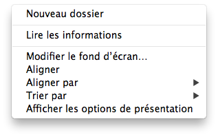Menu lors d'un clic-droit sur votre Bureau
Voilà le premier exemple d'un menu accessible par le clic droit. Un autre exemple, que vous avez déjà vu, est la liste d'options dans le Dock lorsque vous faites un clic droit sur une icône. Vous verrez par la suite que, lorsque vous ferez un clic droit sur une icône, une liste d'options apparaîtra.
Le double-clic
Nous venons de voir deux clics, mais il en reste encore un : le double-clic. Il se fait uniquement avec le clic gauche et consiste à cliquer deux fois avec le bouton gauche de manière rapide.
Lorsque vous faites cela sur un dossier dans votre ordinateur, ça permet d'ouvrir ce fichier ou ce dossier. Nous allons d'ailleurs nous entraîner dans la suite de ce chapitre pour que vous compreniez bien comment cela fonctionne.
Résumons :
le clic gauche permet de sélectionner un fichier ou un dossier ;
le clic droit permet d'avoir accès à une liste d'options ;
le double-clic gauche permet d'ouvrir un fichier, un dossier ou une application.
Le TrackPad
Si vous possédez un ordinateur portable (Mac ou non), vous devez sûrement disposer de ce que l'on appelle un Trackpad (voir la figure suivante), c'est une surface tactile qui permet d'interagir avec votre ordinateur comme vous le faites avec votre souris. L'avantage d'un trackpad est de ne pas nécessiter le transport d'une souris en plus puisqu'il est intégré directement dans votre ordinateur, l'autre avantage est sûrement le fait qu'il existe sous OS X, une multitude de gestes pour interagir plus facilement avec notre système d'exploitation.
Le TrackPad d'un MacBook Pro
On retrouve bien-sûr les trois clics classiques que nous avons vus au-dessus, dans la partie inférieure du trackpad, bien que la surface soit entièrement plate, on peut cliquer avec les deux boutons en bas du trackpad.
Les gestes tactiles
Le clic gauche
On retrouve le clic gauche sur toute la surface tactile, où il suffit de taper le trackpad pour interagir dans les applications de la même façon qu'avec une souris classique.
Le double clic
On retrouve également le double clic sur notre trackpad, comme pour le clic gauche, il suffit de taper deux fois rapidement sur le trackpad pour effectuer ce geste.
Les autres gestes tactiles
Vous pouvez retrouver l'ensemble des gestes tactiles disponibles sur votre Mac dans les Préférences Système dans la section Trackpad. Si vous ne savez pas encore comment aller dans les Préférences Système ne vous inquiétez pas, nous allons bientôt y revenir (voir la figure suivante).
Votre système d'exploitation organise les fichiers et les dossiers selon une arborescence ; l'organisation des fichiers et des dossiers se fait selon le principe d'un arbre. Vous êtes au départ à la racine de votre ordinateur. Ensuite, lorsque vous naviguez, vous avancez au travers des branches en remontant toujours plus haut dans votre arbre.
La racine de votre ordinateur est votre disque dur. Il s'agit d'un appareil situé à l'intérieur de votre ordinateur qui stocke tous vos fichiers et vos dossiers. Toutes ces données sont stockées sur un support qui vous permet, à chaque redémarrage, de retrouver votre ordinateur comme vous l'aviez quitté.
Pour vous donner une idée un peu plus précise de l'arborescence de votre ordinateur, la figure suivante pourra vous aider.
L'arborescence de votre disque dur
On voit bien ici l'image de l'arbre, tous les fichiers reposant sur une grosse racine, votre disque dur. On pourrait penser que le bureau se situe à la racine de votre arbre, ce qui pourrait sembler normal, mais ce n'est pas le cas. En fait, votre bureau est un simple dossier de votre ordinateur mais, avec la magie du système d'exploitation, tout est faisable. :)
Finder, cela doit vous rappeler quelque chose. Souvenez-vous : dans le chapitre précédent, vous aviez lancé le Finder. Je vous avais brièvement expliqué que c'est grâce à lui que nous pouvons naviguer dans notre ordinateur.
Avec nos nouvelles connaissances, notamment en vocabulaire, nous pouvons être plus précis quant au rôle du Finder. Le Finder nous permet donc de nous déplacer dans l'arborescence de notre disque dur. La première fenêtre qui s'ouvre quand vous lancez Finder ressemble normalement à ceci (voir la figure suivante).
Une fenêtre Finder
Le Finder n'est pas qu'un simple utilitaire permettant de naviguer à travers votre arborescence : il vous simplifie la vie pour de nombreuses choses. Lorsque vous avez ouvert votre fenêtre Finder, vous êtes tombé sur un dossier « Tous mes fichiers ». Il s'agit d'un dossier fictif qui vous permet de voir la liste des fichiers stockés sur votre ordinateur ; il n'a pas d'existence réelle dans votre arborescence et ne fait qu'afficher l'ensemble des fichiers. Pour le moment, il n'y a que deux fichiers sur votre disque dur. Il s'agit de fichiers d'aide dont nous n'aurons pas besoin.
Tu nous as parlé d'une arborescence, mais où se trouve-t-elle ?
Il faut savoir que Mac OS X cache par défaut l'endroit où vous vous situez dans votre arborescence. Ces informations supplémentaires ne sont pas indispensables mais, pour bien comprendre l'organisation de vos fichiers et de vos dossiers, nous allons devoir activer une option du Finder.
Pour cela, regardez la barre des menus et cliquez sur le bouton « Présentation », à la suite de quoi un menu devrait apparaître (voir la figure suivante).
Afficher la barre du chemin d'accès
Cliquez maintenant sur l'option « Afficher la barre du chemin d'accès ».
Si vous êtes resté dans le même dossier, vous allez voir apparaître une barre grise au bas de votre fenêtre Finder. Cette barre vide est la preuve que vous vous trouvez dans un dossier fictif. Pour bien vous le montrer, cliquez maintenant dans la barre latérale (à gauche), sur « Documents ». Vous constaterez alors que la barre grise du bas s'est remplie ; nous allons d'ailleurs voir tout de suite ce que cela signifie.
Naviguons
Barre du chemin d'accès
Cette barre est la barre que vous venez normalement d'afficher au bas de votre fenêtre Finder. Elle doit ressembler à ceci (voir la figure suivante).
Barre du chemin d'accès
Cet outil supplémentaire vous permet de savoir où vous vous situez dans votre arborescence par rapport à votre racine. C'est le chemin nécessaire pour atteindre le dossier « Documents ».
Expliquons rapidement : votre dossier « Documents » se trouve dans le dossier « ColasV », qui est lui-même stocké dans un dossier nommé « Utilisateurs », lui-même contenu sur votre disque dur, « Macintosh HD ».
Se déplacer
Pour naviguer dans votre arborescence, rien de bien sorcier. Pour ouvrir un dossier, il suffit de le double-cliquer. En principe, l'apparence de votre fenêtre change légèrement puisque vous allez voir apparaître les noms des fichiers et dossiers contenus dans le dossier principal. Vous pouvez répéter cette opération jusqu'à ce que vous arriviez au bout d'une branche de votre arborescence. Dans le cas du dossier « Documents », où vous vous trouvez actuellement, celui-ci est en bout d'arborescence : il ne contient pas de dossier.
Et pour revenir en arrière, comment faire ?
Il existe deux méthodes pour revenir en arrière. Voyons-les tout de suite.
La première méthode consiste à utiliser le système de flèches situé en haut à gauche de votre fenêtre, qui ressemble à ceci :
. Assez intuitivement, vous devinerez que, pour revenir en arrière, vous devrez utiliser la flèche de gauche, et donc la flèche de droite sert à aller de l'avant. Cependant, la flèche de droite n'est utilisable que si vous revenez déjà d'un dossier.
La deuxième consiste à utiliser la barre du chemin d'accès : vous faites un double-clic sur l'un des dossiers parents de celui où vous vous trouvez. L'avantage par rapport à la première méthode est que vous pouvez revenir plusieurs dossiers en arrière en un seul double-clic, ce qui n'était pas possible avec la première (voir la figure suivante).
Fonctionnement de la barre du chemin d'accès
Voilà ! Vous savez à présent vous déplacer à travers l'arborescence de votre ordinateur. Apprenons maintenant à mieux utiliser le Finder afin de faciliter l'utilisation de notre ordinateur. :)
Changer l'affichage
Vous avez la possibilité de modifier l'affichage de vos fichiers et de vos dossiers si vous le souhaitez. Certains affichages sont plus pratiques que d'autres, notamment lorsque vous aurez beaucoup de fichiers. Je ne vais pas détailler chacune des possibilités ; je vous laisserai choisir votre mode d'affichage par vous-même car chacun a ses préférences. Cependant, dans la suite du tutoriel, je conserverai le premier mode d'affichage.
Pour changer l'affichage, vous avez le choix entre quatre modes d'affichage. Regardez les quatre boutons situés sur le haut de votre fenêtre (voir la figure suivante).
Changer le type d'affichage dans une fenêtre Finder
Le premier mode d'affichage, vous présente les dossiers et les fichiers sous forme de grosses icônes comme celle sur votre Bureau.
La deuxième option propose un affichage sous forme d'une liste où l'on peut développer l'arborescence de haut en bas.
La troisième option propose un affichage sous forme de colonne où l'arborescence se développe de gauche à droite.
La dernière option propose un affichage avec le mode Cover Flow, qui propose un aperçu rapide du document dans la partie supérieure.
Mode Cover Flow
Le panneau latéral
Le panneau latéral vous permet de naviguer de manière plus rapide dans votre ordinateur, en accédant à des dossiers importants par un simple clic. Par exemple, pour vous rendre dans « Documents », il vous suffit de cliquer une seule fois sur « Documents » dans la barre latérale (voir la figure suivante).
Barre latérale du Finder
Concernant la zone « Appareils », ne vous en occupez pas pour le moment, nous nous y intéresserons par la suite.
La zone de recherche
Lorsqu'un grand nombre de fichiers seront stockés dans un dossier et que vous n'arriverez plus trop à vous y retrouver, il vous sera peut-être utile d'effectuer une recherche dans ce dossier afin d'y trouver votre fichier. Nous allons voir la première technique qui est disponible directement dans votre fenêtre Finder (voir la figure suivante).
Zone de recherche du Finder
Rien de bien compliqué : il vous suffit de sélectionner le champ en haut à droite et d'y taper votre recherche. Une liste des fichiers et des dossiers qui correspondent à votre recherche apparaîtra alors.
Pour interrompre la recherche, supprimez le contenu du champ de recherche.
Nous venons ensemble, pas à pas, de découvrir la fenêtre Finder et d'apprendre à nous déplacer dans l'arborescence de notre ordinateur. Maintenant que vous avez les outils en mains, il faut que vous pratiquiez pour être à l'aise dans cet environnement. Mais avant de passer au chapitre suivant, j'aimerais vous présenter une deuxième technique pour effectuer des recherches dans votre ordinateur ; celle-ci à l'avantage d'être plus simple et plus rapide, j'ai nommé Spotlight.
Nous verrons dans cette petite partie un outil très puissant permettant d'effectuer des recherches rapides dans l'ordinateur.
Nous possédons déjà un outil à notre disposition pour faire des recherches, tu nous l'as montré juste au-dessus !
Oui, je vous ai montré un outil, mais il requiert que vous ayez ouvert une fenêtre Finder et aucun raccourci clavier n'existe pour cette méthode de recherche. La méthode que je vais vous présenter est à mon sens beaucoup plus pratique et j'y aurai recours plusieurs fois dans la suite du tutoriel, pour lancer une application par exemple. Prenons de bonnes habitudes ensemble dès maintenant.
Pour accéder à cette recherche, la première technique consiste à cliquer sur la petite loupe se trouvant dans le coin supérieur droit de votre écran, dans la barre des menus (voir la figure suivante).
Barre des menus : Spotlight
La deuxième technique consiste à utiliser le raccourci clavier suivant : Ctrl + Espace
Avec les deux méthodes, vous devriez voir apparaître en haut à droite de l'écran, sous le symbole de la loupe, quelque chose de similaire à ceci (voir la figure suivante).
Champ de recherche Spotlight
Voilà un champ pour effectuer votre recherche. Il vous suffit de saisir quelque chose pour voir apparaître de manière quasiment instantanée des résultats de cette recherche. Bien sûr, vous n'avez pas besoin d'entrer votre recherche complète, quelques lettres suffisent très souvent. Une liste des résultats s'affichera en dessous et, si votre résultat apparaît, il vous suffira de cliquer dessus.
Astuce
Spotlight est une barre intelligente : en plus de vous permettre de faire des recherches, elle sait également effectuer d'autres actions. Tapez par exemple 3*5 dans le champ de recherche.
Magie, Spotlight ne recherche pas un fichier ou un dossier nommé « 3*5 », mais vous affiche le résultat de l'opération. En fait, Spotlight comprend que vous ne voulez pas effectuer de recherche et vous propose donc le résultat du calcul. Spotlight, combiné avec son raccourci clavier que nous avons vu, est une minicalculatrice très pratique et très rapide !
Il existe trois types de clic possible avec votre souris, chaque clic permet d'effectuer des actions différentes sur votre ordinateur
L'organisation des fichiers et des dossiers se fait sous la forme d'une arborscence.
Le Finder est une application qui vous permet de parcourir cette arborscence et d'intérargir avec les fichiers et dossiers que celle-ci contient.
Spotlight est un outil de recherche très puissant de votre système d'exploitation.
Lorsque vous avez parcouru l'arborescence de votre ordinateur dans les précédents chapitres, vous avez sûrement dû remarquer que sont contenus dans le disque dur de très nombreux fichiers et dossiers. Vous vous êtes probablement demandé à quoi ils pouvaient bien tous servir et, surtout, vous aimeriez apprendre à les manipuler.
Créer, manipuler et ranger ses fichiers et ses dossiers n'est pas quelque chose de particulièrement compliqué, surtout avec l'expérience que vous avez acquise au cours des premiers chapitres. Mais il reste certainement quelques points obscurs que nous aborderons pour que les fichiers et les dossiers n'aient plus de secret pour vous. ;)
Nous allons commencer à manipuler de manière concrète sur votre ordinateur. Sachez que tout ce que je vous montrerai est sans danger pour votre ordinateur. Cependant, par la suite, faites attention aux fichiers et aux dossiers que vous manipulez ; il faut rester dans les dossiers du type « Documents » et « Images ».
Dans les précédents chapitres, je vous ai parlé de ce que l'on appelle les fichiers. Néanmoins, peut-être vous en doutez-vous (ou le savez-vous déjà) : un film, une musique ou un document texte n'utilisent pas le même type de fichier.
La notion de différents types de fichiers, bien qu'assez intuitive de base, n'est pas si facile que cela à maîtriser. Dans l'idée, vous pourriez penser qu'il n'existe pas tant de fichiers différents que ça, mais il en existe en réalité des dizaines voire des centaines.
Nous allons essayer d'aborder cette notion calmement, d'abord de manière intuitive puis, dans un second temps, de manière moins intuitive mais qui vous fera bien comprendre quels sont les différents types de fichiers. ;)
La manière intuitive
Comme j'en ai parlé juste au-dessus, on pourrait de manière très grossière classer les différents types de fichiers en plusieurs catégories :
les fichiers image ;
les fichiers texte ;
les fichiers audio ;
les fichiers vidéo.
Vous remarquerez d'ailleurs par la suite que cette classification a un sens ; vos fichiers sont le plus souvent représentés par des miniatures qui les caractérisent, et on retrouve en majeure partie ces quatre types de miniatures pour représenter ces différents types de fichiers (voir la figure suivante).
Différents types de fichiers
Généralement, dans le cas des images, une miniature représentant la photo remplace la miniature de base afin de vous permettre d'identifier rapidement une image, sans avoir nécessairement besoin de l'ouvrir. ;)
Cette description serait suffisante si nous nous arrêtions là, mais reste insuffisante pour bien comprendre la suite de ce tutoriel. C'est pourquoi nous allons nous intéresser à une description plus adéquate, mais légèrement plus compliquée.
La manière plus technique
Comme je viens de vous le dire, la première description que nous avons employée, avec les quatre grands types de fichiers, n'est pas vraiment exacte.
En fait, on peut avoir deux fichiers image qui sont de deux types différents, de même avec les fichiers texte, vidéo ou audio.
Tu es bien sympa mais comment les différencier, à présent ?
Chaque type de fichier est caractérisé par ce que l'on appelle une extension de fichier. Une extension de fichier est un suffixe que l'on ajoute au nom d'un fichier et qui est séparé du nom du fichier par un point (« . »), comme par exemple à la figure suivante.
Exemple de fichier texte avec l'extension .txt
Ce suffixe est le plus souvent constitué de trois lettres, mais ce n'est pas une règle et on peut trouver des extensions comptant une à quatre lettres.
Afficher les extensions de fichier
Pour afficher ou masquer les extensions de fichier, il vous faut ouvrir une fenêtre Finder. Vous remarquerez l'apparition du menu Finder dans la barre des menus, à droite du menu Pomme. Cliquez pour ouvrir ce menu et sélectionnez l'option « Préférences… » (voir la figure suivante).
Menu Finder
Une fois dans « Préférences », sélectionnez l'onglet « Options avancées » et, une fois dans ce menu, cochez la case « Afficher toutes les extensions de fichier ». Grâce à cette option, vous pourrez voir par la suite les extensions de fichier dont nous venons de parler (voir la figure suivante).
Préférences du Finder
Reconnaître une extension de fichier
Maintenant que nous pouvons voir toutes les extensions de fichier, il devient très simple pour vous de déterminer le type d'un fichier : celui-ci dépend de l'extension. Nous n'allons pas parcourir l'ensemble des extensions possibles car leur nombre est beaucoup trop grand, mais nous allons voir les plus importantes pour vous. :)
Prenons tout d'abord quelques exemples. En ce qui concerne les images, vous retrouverez très rapidement, si ce n'est pas déjà fait, une extension « .jpg » par exemple. Il s'agit d'une extension de fichier image, par exemple une photo ou un dessin. Quand vous avez affaire à cette extension, vous pouvez savoir immédiatement qu'il s'agit d'une image (voir la figure suivante).
Une liste de fichiers .jpg
C'est bien beau, ce que nous venons de voir là, mais cela ne nous apporte pas beaucoup plus que ce que nous avions vu précédemment alors que nous ne connaissions pas les extensions de fichier. L'extension va vous permettre de faire la différence entre différents types de format d'image. Je peux citer comme exemples « .bmp », « .png » ou « .gif ». Ces extensions vous sont peut-être familières ; si tel est le cas, tant mieux.
Elle permettent également à votre système d'exploitation de savoir avec quelle application il doit ouvrir ce type de fichier ; il sait par exemple que, pour des fichiers image portant l'extension « .bmp », « .jpg » ou « .png », il doit utiliser l'application Aperture.
J'ai décidé de prendre l'exemple des fichiers image qui possèdent plusieurs extensions différentes, mais on pourrait refaire la même chose avec d'autres types de fichiers, comme les fichiers audio ou vidéo. ;)
Quelques types de fichiers courants
Type de fichier
Extensions
Fichier image
.bmp, .png, .jpg, .jpeg, .gif
Fichier vidéo
.avi, .mov, .flv, .mp4
Fichier audio
.mp3, .ogg, .aac, .flac
Fichier texte
.txt, .doc, .docx, .odt, .rtf
Ce tableau n'est bien sûr pas à apprendre par cœur et, au fur et à mesure de l'avancement de ce tutoriel, vous commencerez à retenir les extensions de fichier les plus courantes.
J'ai bien entendu listé les principaux types d'extensions mais, dès le prochain chapitre, vous allez découvrir de nouvelles extensions qui ne correspondent pas au précédent type de fichier que nous avons vu : ce ne seront ni des fichiers image, ni des fichiers audio, d'où l'importance de savoir ce que sont les extensions de fichier.
Les dossiers
Nous avons beaucoup parlé des fichiers et de leurs extensions, mais nous n'avons pas parlé des dossiers. Vous les avez déjà manipulés en partie, notamment dans le chapitre précédent, lorsque vous avez navigué dans l'interface de Mac OS X.
Les dossiers sont à part puisqu'à la différence des fichiers, il n'existe qu'un seul type de dossier : les dossiers. Pas d'extension, rien. Un dossier est un simple conteneur pouvant stocker des fichiers mais également d'autres dossiers.
Maintenant que vous avez, je l'espère, assimilé la théorie concernant les fichiers et les dossiers, passons à la pratique. ;) Dans un premier temps, nous allons voir comment créer un dossier pour, ensuite, créer un fichier.
Créer un dossier
Créer un dossier est facile et très pratique ensuite pour organiser vos fichiers de manière claire et, donc, vous y retrouver facilement. Je ne vais pas vous apprendre à ranger vos affaires ; vous êtes sûrement assez grand pour le faire. :)
Cependant, je vais vous apprendre à créer ce dossier. Pour ce faire, rendez-vous sur votre bureau, où vous créerez le dossier.
Une fois sur votre bureau, faites un clic droit sur celui-ci : un menu d'options devrait apparaître. Parmi les options proposées, vous devriez normalement trouver l'option « Nouveau dossier » (voir la figure suivante).
Créer un nouveau dossier
Pour le renommer, sélectionnez le dossier avec votre souris en faisant un seul clic gauche dessus. Appuyez ensuite une fois sur la touche Entrée. Vous pouvez alors taper le nouveau nom de votre dossier. Pour valider ce nouveau nom, il vous suffit d'appuyer une nouvelle fois sur la touche Entrée.
Voilà ! Vous venez de créer votre premier dossier sur le bureau. Comme vous avez pu le constater, c'est très simple ; vous pouvez effectuer la même action dans n'importe quelle fenêtre Finder.
Pour compléter, il existe bien sûr un raccourci clavier permettant d'effectuer cette opération de création d'un dossier. Cependant, il faut l'exécuter uniquement lorsque vous êtes dans une fenêtre Finder ou sur votre Bureau. Pour être sûr de cela, vérifiez si, dans la barre des menus, le menu Finder est bien présent à droite du menu Pomme. Une fois que le menu Finder est présent, vous pouvez utiliser le raccourci suivant : ⇧ + Cmd ⌘ + N.
Créer un fichier
Comme nous l'avons vu, il existe plusieurs types de fichiers et donc plusieurs façons d'en créer un. Je ne vais pas détailler la manière de créer chacun d'eux car c'est impossible.
Pour manipuler des fichiers, il nous faut en posséder un. Pour cela, nous allons en créer. Nous n'allons pas chercher très loin et créer un simple fichier texte, avec l'extension « .rtf » ; si vous vous souvenez bien, nous avons vu cette extension dans le chapitre précédent. Tout ce que je raconte n'est pas vide de sens. ;)
TextEdit
Pour créer notre fichier texte, nous allons utiliser un logiciel nommé TextEdit. Si vous avez bien retenu la leçon, pour lancer cette application, vous pouvez utiliser Spotlight (voir la figure suivante).
Recherche Spotlight : TextEdit
Pour lancer l'application, un simple clic sur le premier résultat suffit. Elle devrait maintenant figurer dans votre Dock. Une fenêtre de ce type devrait apparaître (voir la figure suivante).
Nouveau document TextEdit
Dans la zone principale, vous allez pouvoir taper du texte. Dans ce cas-ci, ce que vous allez taper n'a pas d'importance : il faut simplement remplir le fichier que vous aller créer. Une fois que vous avez tapé ce que vous souhaitez, vous devez enregistrer ce texte. Une fois encore, il n'y a rien de compliqué : il vous suffit d'aller dans le menu « Fichier », qui se trouve dans la barre des menus. Dans ce menu, sélectionnez l'option « Enregistrer… » (voir la figure suivante).
Enregistrer un document dans TextEdit
Vous allez à présent, dans la nouvelle fenêtre qui vient de s'ouvrir, pouvoir donner un nom à votre fichier. Je vous laisse le choisir. Ensuite, vous allez enregistrer votre nouveau fichier dans le dossier que nous avons créé précédemment. Normalement, votre dossier se trouve sur votre Bureau. Il va falloir le chercher avant d'enregistrer votre fichier.
Dans la nouvelle fenêtre qui s'est ouverte, cliquez sur la petite flèche à droite du nom de votre fichier pour développer l'explorateur de fichiers. Ensuite, il suffit, à l'aide de la barre latérale, de vous rendre dans « Bureau » puis dans votre dossier. Chez moi, il se nomme « Premier dossier » (voir la figure suivante).
Choisir où enregistrer son fichier
Une fois que vous avez choisi le dossier et le titre adéquats pour votre fichier, il ne vous reste plus qu'à enregistrer ce dernier en cliquant sur le bouton en bas à droite.
Voilà, votre fichier vient d'être créé et se trouve dans le dossier que vous avez sélectionné. Maintenant que ce fichier existe, nous allons voir ce que l'on peut en faire. ;)
Quelques manipulations
Déplacer un fichier d'un dossier à un autre
Pour organiser au mieux votre espace de travail, vous aurez besoin par la suite de déplacer certains fichiers et dossiers pour les ranger d'une façon précise. Pour déplacer un fichier d'un dossier à un autre, il n'y a rien de compliqué. On va utiliser une technique fort courante qui se nomme le glisser-déposer (on retrouve parfois le terme anglais drag and drop).
La technique est très simple : vous sélectionnez le fichier que vous voulez déplacer avec votre souris en faisant un unique clic gauche dessus, et vous maintenez ce clic ; vous pouvez ensuite balader ce fichier où vous le souhaitez. Lorsque vous voulez le reposer, il vous suffit de relâcher le clic pour déposer le fichier à l'endroit désiré. On a donc bien fait glisser notre fichier avant de le déposer quelque part (voir la figure suivante).
Déplacer un fichier dans un dossier
Vous pouvez vous entraîner avec le fichier que nous avons créé précédemment. Vous pouvez vous amuser à le sortir de votre dossier pour le mettre sur votre bureau puis dans « Documents », par exemple.
Cette technique fonctionne également pour les dossiers, vous pouvez donc créer quelques dossiers supplémentaires et vous entraîner à les déplacer sur votre ordinateur.
Renommer un fichier
Nous avions découvert la technique permettant de renommer un dossier juste au-dessus. Eh bien, je peux vous dire que la méthode est exactement la même pour un fichier. Il faut donc sélectionner le fichier puis appuyer sur la touche « Entrée (↵) ». Vous pouvez ensuite taper le nouveau nom de votre fichier ou de votre dossier. Pour valider la modification du nom, il suffit d'appuyer à nouveau sur la touche « Entrée (↵) ».
Voir les informations d'un fichier
Pour voir les informations importantes d'un fichier, rien de plus simple. Effectuez un clic droit sur le fichier pour afficher le menu contextuel, puis sélectionnez l'option « Lire les informations ». Vous devriez voir quelque chose de ce style apparaître sur votre écran (voir la figure suivante).
Les informations sur fichier texte (.rtf)
Pour afficher les informations, vous pouvez également utiliser le raccourci clavier suivant après avoir sélectionné le fichier qui vous intéresse : Cmd ⌘ + I.
Vous pouvez décider d'afficher ou non certaines informations à l'aide des flèches sur la gauche. Je ne vais pas détailler l'ensemble de cette fiche d'information, mais on retrouve quelques petites choses dont nous avons parlé dans les précédents chapitres.
Dans la partie « Général », on retrouve le type de fichier (en l'occurrence .rtf). L'emplacement du fichier dans l'arborescence de notre disque dur est également mentionné ; notre fichier se trouve donc à l'emplacement suivant : /Users/ColasV/Desktop/Premier dossier.
On retrouve également diverses informations telles que la date de création, de la dernière modification ou de la dernière ouverture. Ces informations ne présentent ici que peu d'intérêt pour nous.
Un point intéressant concerne la partie « Ouvrir avec : ». On peut constater que ce type de fichier s'ouvre par défaut avec TextEdit, le logiciel que nous avons utilisé. Cependant, lorsque, par la suite, vous découvrirez d'autres logiciels, vous pourrez décider quel est le logiciel qui doit ouvrir un certain type de fichier.
Maintenant que l'on a appris comment créer un fichier et un dossier, il va falloir apprendre à les supprimer !
La corbeille porte bien son nom car, comme dans un vrai bureau, vous pouvez y jeter les dossiers et les fichiers dont vous n'avez plus besoin. Passons tout de suite à la pratique !
Placer un fichier ou un dossier dans la corbeille
Vous l'avez peut-être remarqué : votre corbeille se trouve à la droite de votre Dock. On la retrouve avec cette icône (voir la figure suivante).
L'icône de la corbeille
Pour y placer un dossier ou un fichier, il existe plusieurs techniques. La première — et la plus logique — est le glisser-déposer que nous venons de voir. Il suffit de faire glisser votre fichier ou dossier vers la corbeille afin que celui-ci s'y retrouve.
Vous pouvez également utiliser le menu contextuel en faisant un clic droit sur votre fichier ou votre dossier, puis sélectionner l'option « Placer dans la corbeille » (voir la figure suivante).
Placer un fichier dans la Corbeille grâce au clic-droit
Restaurer un fichier
Lorsque vous lancez une feuille de papier dans une corbeille, vous pouvez toujours décider d'aller la récupérer par la suite si vous pensez qu'au final, le document peut être important. Eh bien, la corbeille fonctionne de la même façon. Quand un document ou un dossier se trouve dans la corbeille, vous pouvez encore le sauver. On dit alors que l'on restaure le fichier ou le dossier.
Pour mettre en pratique ce dont je vous parle, il va falloir mettre un fichier ou un dossier dans la corbeille. Ensuite, vous allez ouvrir cette dernière en cliquant sur son icône dans le Dock. Une fois la fenêtre ouverte, deux possibilités s'offrent à vous :
utiliser le menu contextuel en faisant un clic droit sur le fichier ou le dossier dans la corbeille, choisir ensuite l'option « Remettre dans ce menu » et constater que l'élément en question disparaît de la corbeille et retrouve sa place d'origine ;
la deuxième option consiste à faire un glisser-déposer mais, cette fois-ci, dans le sens inverse : vous ferez glisser le fichier en dehors de la corbeille.
Vider la corbeille
Vider la corbeille revient à vider celle-ci dans la grosse benne à ordures devant chez vous. Une fois dedans, il n'est plus possible d'en récupérer le contenu. Nous allons donc une fois encore voir deux méthodes pour supprimer définitivement un fichier qui se trouve dans votre corbeille.
La première méthode consiste une fois de plus à utiliser le menu contextuel en effectuant un clic droit sur l'icône de la corbeille et, ensuite, en sélectionnant l'option « Vider la corbeille » (voir la figure suivante).
Vider la corbeille grâce au clic-droit
La seconde, quant à elle, consiste à ouvrir la corbeille via le Dock et cliquer sur « Vider » en haut à droite de la fenêtre de la corbeille. Une confirmation vous sera normalement demandée avant de supprimer définitivement vos fichiers (voir la figure suivante).
Vous avez appris à vous servir de votre ordinateur, à créer des fichiers et des dossiers, à naviguer à travers l'arborescence de votre disque dur et à déplacer des fichiers dans celle-ci. Maintenant que vous avez les bases, on va pouvoir aller un peu plus loin en apprenant quelques techniques qui vous permettront de vous simplifier la vie de temps en temps.
Quick Look
Quick Look, comme son nom l'indique, est une fonction disponible sur votre système d'exploitation et qui vous permet de visualiser rapidement les informations d'un fichier sans avoir besoin de l'ouvrir à l'aide d'une application comme TextEdit, ni d'avoir besoin d'ouvrir les informations comme on l'a vu précédemment. L'avantage de Quick Look est qu'il est disponible rapidement à l'aide d'une seule touche et ne nécessite pas de charger une application.
Il existe deux techniques permettant d'utiliser Quick Look. Néanmoins, à mon sens, une seule de ces deux techniques permet réellement de profiter de la rapidité et de la simplicité de l'outil. Quick Look ne fait pas tout, bien sûr, auquel cas ce qu'on a appris jusqu'à présent ne servirait à rien, mais il simplifie la vie de l'utilisateur.
Prenons par exemple le fichier que nous avons créé tout à l'heure avec TextEdit. Sélectionnez ce fichier en faisant un unique clic gauche dessus. Utilisez ensuite le raccourci clavier suivant : Espace. Eh oui, une seule pression sur la barre Espace et vous devriez voir le contenu du fichier, donc le texte que vous avez tapé. Une deuxième pression sur la barre Espace et tout cela disparaît. Facile, non ?
Si vous faites la même chose sur un dossier, vous devriez rapidement voir quelques informations sur le dossier, mais rien de très intéressant.
Tu nous as dit qu'il existait une autre technique pour utiliser Quick Look. Comment fait-on ?
La deuxième méthode pour voir l'aperçu rapide consiste à utiliser le menu contextuel. Vous y trouverez une option qui se nomme « Coup d'œil sur « Nom du fichier » ». Cette option est cependant moins intéressante puisqu'elle vous oblige à faire deux clics au lieu d'un seul.
Au final, Quick Look ne révolutionnera pas votre utilisation de votre ordinateur mais permet, dans de nombreuses situations, notamment lorsque l'on possède de nombreux documents, de pouvoir regarder leur contenu très brièvement sans démarrer une application, ce qui constitue une fonctionnalité pratique. Cependant, vous constaterez que Quick Look ne sait pas lire tous les types de fichiers et que certains nécessiteront tout de même une ouverture classique à l'aide d'une application.
Le copier-coller
Le copier-coller est une méthode qui consiste à copier un fichier ou un dossier, puis à « coller » la copie du fichier autre part. En clair, vous pouvez, de manière simple et rapide, obtenir une copie parfaite d'un fichier ou d'un dossier grâce à cette méthode.
Quelle est l'utilité de demander la copie d'un fichier que l'on possède déjà ?
De nombreuses raisons existent : vous pouvez vouloir effectuer une sauvegarde de vos fichiers afin d'éviter de les perdre, copier un fichier pour l'envoyer à quelqu'un ou encore faire la copie d'un fichier pour le modifier sans perdre l'original. En bref, plusieurs raisons de connaître cette technique.
La première méthode pour utiliser cette technique consiste, une fois de plus, à utiliser le menu contextuel à l'aide du clic droit sur un fichier. Il existe une option qui se nomme « Copier « Nom du fichier » » (voir la figure suivante).
Copier un élement
Une fois que vous avez sélectionné l'option « Copier », votre fichier ou dossier se trouve dans ce que l'on appelle le presse-papier, qui stocke une copie de votre fichier de manière virtuelle avant que vous ne décidiez de le coller quelque part.
Pour coller ce fichier, il vous suffit de faire un clic droit à n'importe quel endroit sur votre bureau ou dans un dossier pour faire apparaître le menu contextuel. Si le fichier a bien été copié dans le presse-papier, une option devrait apparaître : « Coller l'élément » (voir la figure suivante).
Coller un élement
Bien sûr, il existe des raccourcis clavier pour le copier et le coller afin de vous simplifier un peu la vie :
Raccourci clavier pour copier un fichier ou dossier :Cmd ⌘ + C
Raccourci clavier pour coller un fichier ou dossier : Cmd ⌘ + V
Plus loin que le fichier ou le dossier
La technique ne s'applique heureusement pas uniquement aux fichiers et aux dossiers : son champ d'action est beaucoup plus large puisqu'on peut utiliser cette technique pour copier-coller des morceaux de texte, par exemple dans l'application TextEdit.
Pour faire ceci, vous devez au préalable sélectionner une portion de texte, par exemple dans TextEdit. Vous pouvez ensuite, au choix, utiliser les raccourcis clavier qui ont l'avantage d'être rapides à utiliser. Vous pouvez également faire un clic droit sur le texte que vous avez sélectionné pour faire apparaître le menu contextuel et choisir l'option « Copier ».
Le petit frère : le couper-coller
Comme vous vous en doutez, le couper-coller est très similaire au copier-coller mais, au lieu de créer une copie de votre fichier, dossier ou texte, vous allez simplement déplacer celui-ci. Concrètement, vous allez d'abord faire une copie de votre fichier mais, au moment de le coller, celui-ci va disparaître de son emplacement d'origine.
La première partie s'effectue de la même façon que pour un copier-coller : vous allez d'abord faire une copie de votre fichier ou de votre dossier à l'aide de la commande que nous avons vu précédemment, soit Cmd ⌘ + C.
Ensuite, pour le déplacer dans son nouvel emplacement, placez-vous à l'aide de Finder dans le nouveau répertoire et effectuez le raccourci suivant : Alt + Cmd ⌘ + V. Cette méthode est très similaire au copier-coller mais il faut appuyer en plus sur la touche Alt, qui se situe à gauche de la touche Cmd ⌘.
On peut également faire la même chose en utilisant le clic droit, comme pour le copier-coller, sauf que, lors de votre clic droit pour copier l'élément dans son nouveau dossier, vous devrez maintenir la touche Alt enfoncée pour faire apparaître l'option « Déplacer l'élément ici… ».
Raccourci clavier pour déplacer un fichier ou dossier : Alt + Cmd ⌘ + V.
Il existe plusieurs types de fichiers (audio, texte, vidéo, image) que l'on peut différencier par leur extension.
Les dossiers sont des conteneurs, ils peuvent contenir d'autres dossiers ou des fichiers de tout types.
C'est l'application Finder qui se charge de créer de nouveaux dossiers.
Les fichiers comme les dossiers peuvent être renommé, déplacé ou supprimé.
La corbeille est un dossier spécial qui permet de détruire tous les fichiers qui s'y trouvent.
Après avoir parcouru notre ordinateur, nous allons aborder quelque chose qui devrait vous rappeler des souvenirs. Souvenez-vous : il y a quelques chapitres, nous avions lancé ensemble plusieurs applications, notamment Finder.
Il est maintenant temps d'approfondir ce point pour comprendre ce qu'est une application, comment elle fonctionne et comment en installer. Vous verrez qu'il existe toutes les applications possibles et imaginables ; nous ne pourrons donc pas toutes les aborder. :p
Une application (ou logiciel) permet d'apporter de nouvelles fonctionnalités à votre système d'exploitation. Une application est un greffon qui utilise votre système d'exploitation comme base pour fonctionner. Au départ, votre système d'exploitation ne vous permet pas de faire grand-chose, mais grâce à de multiples applications fournies avec votre ordinateur, vous pouvez par exemple naviguer dans votre arborescence grâce au Finder. Comme je vous l'ai dit, Finder est une application qui vous permet de parcourir l'ensemble de vos fichiers et dossiers.
Pour pouvoir greffer une application à notre système d'exploitation, il faut installer cette application sur notre OS. Une application se retrouve sous la forme d'un fichier avec une extension particulière : .app. C'est ce fichier que nous installerons plus loin. ;)
Installer une application
Vous pouvez trouver une application sous diverses formes : elle peut être contenue sur un CD mais il est également possible de l'installer en la téléchargeant sur Internet. Il existe de très nombreuses méthodes pour obtenir une application. Nous allons bientôt revenir sur l'installation d'une application en détail car il existe plusieurs manières de procéder.
Je m'efforcerai de vous guider au maximum lors de l'installation mais, compte tenu du large panel d'applications disponibles pour votre système d'exploitation, je ne pourrai pas couvrir l'ensemble des possibilités que vous pourrez rencontrer.
Désinstaller une application
Si vous avez pu greffer une application sur votre système d'exploitation, vous pouvez également la retirer. Pour ce faire, plusieurs méthodes existent. Lorsque nous reviendrons sur l'installation d'une application, nous reviendrons dans un second temps sur la désinstallation.
Le dossier « Applications »
L'ensemble des applications installées sur votre ordinateur se regroupe dans un même dossier nommé « Applications ».
Pour y accéder, il faut que vous ouvriez une fenêtre Finder. Une fois la fenêtre ouverte, cliquez dans le panneau latéral sur le dossier « Applications » (voir la figure suivante).
Le dossier Applications
Vous allez retrouver dans ce dossier de très nombreuses applications ; c'est là que vous vous rendrez compte que vous n'avez pas les mêmes que les miennes : c'est tout à fait normal car vous n'avez sûrement pas dû en installer beaucoup.
Je vous ai dit plus haut que l'ensemble des applications se trouvent dans ce dossier. En réalité, je vous ai un peu menti pour simplifier la chose mais nous allons voir dans quelques instants ce qu'il en est exactement.
Il y a trois façons différentes d'installer un logiciel sous Mac :
L'installation par le Mac App Store: c'est la technique la plus simple puisque vous n'avez presque rien à faire, mais il existe encore très peu d'applications qui fonctionnent avec le Mac App Store.
L'installation avec une archive pkg : vous ne savez pas ce dont il s'agit pour l'instant mais vous le verrez très bientôt ; cela permet d'installer une application sur votre Mac.
La fausse installation : elle consiste simplement à déposer l'application dans le dossier « Applications ». La plupart des applications s'installent de cette façon.
Avant d'attaquer de manière plus précise chacun des points, je dois vous donner quelques petits conseils. Au cours d'une installation, votre système d'exploitation pourra vous demander votre mot de passe administrateur pour effectuer certaines opérations.
Deuxième point : bien que les trois méthodes évoquées diffèrent, elles nous ramènent toutes au même but, c'est-à-dire placer le fichier de l'application (.app) dans le dossier « Applications » dont je vous ai parlé au-dessus.
Le Mac App Store
Le Mac App Store est une application qui est normalement déjà présente sur votre système d'exploitation et qui vous permet de télécharger et d'installer des applications provenant d'une bibliothèque d'applications proposée par Apple.
Vous retrouverez dans cette bibliothèque des applications gratuites, mais également des applications payantes. Afin de pouvoir les télécharger, vous devez disposer d'un compte Apple, ce qui devrait être le cas si vous avez acheté votre Mac en ligne. Si vous n'en possédez pas, je vous invite à en créer un grâce au chapitre en annexe qui détaille la marche à suivre. ;)
Pour lancer le Mac App Store, cliquez sur cette icône dans votre Dock (voir la figure suivante).
L'application App Store
Vous devriez vous retrouver devant une nouvelle fenêtre de ce type (voir la figure suivante).
Fenêtre de l'application App Store
Sur cette page, qui est sûrement un peu différente de la mienne, vous pourrez parcourir la bibliothèque du Mac App Store. Nous allons télécharger et installer ensemble notre première application.
Regardez le champ de recherche en haut à droite : il ressemble au champ de recherche que nous avons déjà vu auparavant. Je vais vous demander de rechercher l'application Twitter. Une fois que vous avez effectué votre recherche, vous devriez obtenir une liste d'applications correspondant à votre recherche.
Choisissez la première application qui se nomme simplement Twitter. En cliquant dessus une fois, la page devrait changer pour afficher quelque chose de ce genre (voir la figure suivante).
L'application Twitter dans l'App Store
Vous devez ensuite cliquer sur le bouton « Gratuit ». Ce dernier va alors se transformer en un bouton vert portant la mention suivante : « Installer l'app ». Cliquez de nouveau sur ce bouton. L'application va certainement vous demander vos identifiants iTunes ; si vous en possédez, vous pouvez les entrer sans crainte. Le téléchargement se lancera ensuite et vous devriez voir apparaître votre application sur une nouvelle page qui se nomme le Launchpad (nous allons voir ce que c'est dans un instant). En attendant, dites-vous que l'application s'est bien installée. ;)
Voilà ! Vous venez d'installer une première application sur votre système d'exploitation grâce au Mac App Store. En revanche, toutes les applications ne s'installent pas de cette façon et nous allons découvrir les autres techniques ensemble dans un instant. ;)
Autre type d'installation
Lorsque vous téléchargerez une application par la suite, vous téléchargerez en fait une image disque (un .dmg), qui contiendra soit un installeur en .pkg, soit une directement une application (.app). La première chose à faire est donc de télécharger cette archive .dmg. J'anticipe un peu sur la partie 2 du cours, puisque nous allons télécharger une application grâce à notre navigateur. Si pour vous l'utilisation d'une telle application est vraiment trop dur, vous pourrez attendre d'avoir lu la deuxième partie pour revenir à ce chapitre ensuite.
Télécharger un .dmg
Dans notre exemple, nous allons télécharger l'application VLC qui est lecteur multimédia, qui permet de lire un grand nombre de format de fichiers vidéos. La première étape est de vous rendre à l'adresse suivante : http://www.videolan.org/vlc/ et de cliquer sur l'énorme icône (voir la figure suivante).
Télécharger VLC
Suivant la vitesse de votre connexion, un fichier avec l'extension .dmg devrait apparaître dans votre dossier « Téléchargement ». En double-cliquant sur ce fichier .dmg (c'est une archive), vous allez « monter » l'archive sur votre Bureau, vous devriez voir apparaître un nouveau dossier sur votre Bureau qui contient quelques fichiers (voir la figure suivante).
Contenu du .dmg une fois monté sur le Bureau
Dans cet exemple, notre archive .dmg contient un fichier .app, je vous invite donc à continuer la lecture pour apprendre comment « installer » cette application.
Installer un .app
Pour installer notre application, il suffit alors de faire glisser cette application, en la sélectionnant puis en maintenant le clic gauche enfoncé, vers le dossier « Applications ». Une fois qu'elle se trouve dans le dossier « Applications », vous pouvez considérer votre application comme installée. Vous entendrez sûrement un petit bruit qui indique que l'installation s'est bien déroulé.
Installer un .pkg
Si votre archive contient un fichier .pkg, l'installation ne se passe pas exactement de la même façon que précédemment. Un fichier .pkg est ce que l'on appelle un installeur, si vous êtes un ancien utilisateur de Windows, vous devez connaître le fonctionnement de ce type de programme. Un installeur est une petite application qui va se charger d'installer à votre place l'application qui nous intéresse.
Exemple de fichier .pkg
Pour lancer l'installation de l'application, il vous suffit d'effectuer un double clic sur ce fichier .pkg, une nouvelle fenêtre devrait s'ouvrir, vous proposant l'installation. L'installation se déroule en plusieurs étapes qui sont différentes pour chaque application. On vous demandera notamment d'accepter les licences d'utilisations du logiciel ainsi que parfois l'endroit où vous souhaitez installer l'application (voir la figure suivante).
Exemple de l'installation d'une application via un .pkg
L'installation se termine par une fenêtre de confirmation ainsi qu'un bruit caractéristique que vous apprendrez à reconnaître. ;)
Installer avec MacPorts
La dernière méthode que je mets volontairement un peu à l'écart des autres est l'installation à partir de MacPorts. Certaines applications ne sont pas disponible directement au téléchargement comme nous l'avons vu, celle-ci existent sous forme de paquets. Le but de MacPorts est de charger les différents paquets nécessaires à l'installation d'une application.
Vous n'aurez sûrement jamais à utiliser ce type d'installation, cependant je mentionne son existence pour les plus curieux, qui peuvent regarder ce tutoriel qui en parle. Les anciens utilisateurs d'une distribution GNU/Linux retrouverons facilement beaucoup de similarités entre cet outil et les leurs.
Chaque application est différente. Elles se ressemblent pourtant sur de nombreux points :
une application peut être lancée et quittée ;
une application apparaît dans le Dock une fois lancée ;
pour chaque application, la barre des menus change.
Vous avez déjà lancé des applications, par exemple Finder ou Contacts. Par chance, celles-ci était déjà présentes dans votre Dock. Nous allons découvrir des méthodes plus générales pour lancer vos applications.
Lancer un logiciel
Première méthode : Spotlight
Vous vous souvenez de Spotlight, dont nous avons parlé il y a deux chapitres ? Eh bien, nous allons l'utiliser pour chercher et lancer une application.
Nous allons rechercher l'application que vous avez installée tout à l'heure et qui se nomme « Twitter ». Pour cela, cliquez sur l'icône Spotlight en haut à droite de votre écran et tapez dans le champ de recherche le nom de votre application, Twitter dans ce cas-ci (voir la figure suivante).
Recherche de l'application Twitter dans Spotlight
Vous pouvez remarquer que l'application que nous venons de télécharger apparaît en haut des résultats de la recherche. Pour lancer l'application, il vous suffit de cliquer sur le premier résultat de recherche. L'application va alors se lancer.
Deuxième méthode : le dossier « Applications »
Nous avons appris comment installer des applications sur notre ordinateur. Si vous vous souvenez bien, quelle que soit la méthode utilisée, elle revenait à placer un fichier avec l'extension .app dans le dossier « Applications ».
Avec cette méthode, rendez-vous simplement dans le dossier « Applications », comme nous l'avons fait au début de ce chapitre (voir la figure suivante).
Le dossier Applications
Une fois dans ce dossier, vous pouvez chercher l'application qui vous intéresse. Pour la lancer, faites un double-clic sur l'icône correspondante.
Troisième méthode : le Launchpad
Le Launchpad est une nouveauté de Mac OS X Lion (10.7), qui regroupe vos applications sur un écran dédié. S'il s'agit de la première fois que vous utilisez votre Mac, le Launchpad est probablement un peu vide. Sur mes captures d'écran, vous pourrez voir un grand nombre d'applications, ce qui est tout à fait normal.
Trêve de bavardage, nous allons lancer le Launchpad. Pour cela, je vous conseille de regarder dans votre Dock. Regardez l'icône avec une fusée se trouvant à droite de l'icône du Finder : c'est l'application du Launchpad. Cliquez une fois dessus. Vous devriez voir apparaître devant vous diverses icônes d'applications installées sur votre ordinateur (voir la figure suivante).
Le Launchpad
Pour lancer une application, rien de plus simple : il suffit d'un clic sur l'icône d'une application pour que celle-ci se lance.
Vous pouvez voir qu'au bas de votre écran, juste au-dessus du Dock, apparaissent plusieurs points blancs qui indiquent qu'il y a plusieurs pages d'applications. Pour naviguer entre ces pages, il existe plusieurs méthodes :
utiliser la molette de votre souris ;
utiliser le trackpad de votre ordinateur ;
faire glisser à l'aide de la souris en cliquant sur une zone vide, tout en faisant bouger la souris vers la droite ou vers la gauche.
Fermer une application
Lorsque vous fermez une application (je vous présenterai la marche à suivre dans un instant), vous fermez simplement la fenêtre d'affichage de l'application. La plupart du temps, dans la conception de l'application, le fait de fermer la fenêtre d'affichage quitte également l'application. Mais ce n'est pas toujours le cas, par exemple pour que l'application puisse tourner en tâche de fond.
Comment s'assurer qu'une application fermée a bien été quittée ?
Pour bien illustrer la différence entre fermer la fenêtre d'une application et quitter cette application nous allons prendre un cas concret : le navigateur Safari. Comme je vous l'ai dit un peu au dessus, nous allons bientôt revoir dans la deuxième partie qu'est-ce qu'un navigateur ; nous pouvons déjà nous entraîner à lancer et à quitter l'application.
Une fois que votre application est lancée, il vous suffit de regarder son icône dans le Dock et de regarder si une pastille blanche est apparue en dessous. Cette pastille blanche indique qu'une application est lancée. À l'inverse, l'absence de pastille blanche indique que notre application est bien quittée. Pour vous en assurer, il vous suffit de lancer l'application Safari (voir la figure suivante).
Une application ouverte à gauche (pastille) et une application quittée à droite
Une fenêtre devrait apparaître. Le contenu n'est pas très important ; seuls nous intéressent les trois boutons situés en haut à gauche de la fenêtre (voir la figure suivante).
L'application Safari
En cliquant une fois sur le bouton rouge, la fenêtre devrait disparaître ; cependant vous ne devriez pas voir la pastille blanche disparaître, c'est normal vous avez simplement fermé la fenêtre de l'application mais vous n'avez pas quitté celle-ci. Cela permet de continuer à faire tourner l'application en tâche de fond pour effectuer une opération particulière comme le téléchargement d'un fichier dans Safari.
Quitter une application
Cependant, il est intéressant de pouvoir complètement quitter une application et ne pas simplement fermer la fenêtre de l'application, car même en tournant en tâche de fond l'application continue à consommer des ressources de notre ordinateur et cela peut le ralentir, il peut donc être utile de quitter complètement une application. Nous allons donc maintenant quitter notre application Safari que nous n'avons pas réussi à quitter en fermant simplement la fenêtre dans la partie précédente.
Après ces quelques explications, passons à la pratique. Il existe trois méthodes pour quitter une application (sans compter, dans certains cas, le fait de fermer la fenêtre).
Par le Dock
Rappelez-vous : lorsque nous avions fait un clic droit sur le Dock pour faire apparaître une liste d'options, il y avait une option « Quitter ». De manière tout à fait logique, vous avez deviné qu'en cliquant sur cette option, vous pouviez quitter l'application (voir la figure suivante).
Clic-droit sur une application dans le Dock
Après avoir relancé l'application « Safari » (ou toute autre application), faites un clic droit sur son icône dans le Dock et choisissez l'option « Quitter ». Une fois cette action effectuée, la pastille blanche qui se situe en dessous de l'icône dans le Dock doit disparaître.
Par la barre des menus
La deuxième méthode permettant de quitter une application consiste à passer par la barre des menus. À côté du menu Pomme, dont vous devriez vous souvenir, se trouvent des menus qui changent en fonction de l'application dans laquelle vous vous trouvez. Ces menus sont différents à chaque fois, sauf certains qui restent les mêmes pour toutes les applications.
Relancez l'application « Safari ». Nous allons nous intéresser au premier des menus, situé à la droite du menu Pomme, qui se nomme « Safari ». En cliquant dessus, une liste d'options devrait apparaître. N'y prêtons pas trop attention ; ce qui nous intéresse se situe au bas de ce menu, c'est-à-dire l'option « Quitter ». Il suffit d'un clic et voilà que nous quittons l'application.
Par un raccourci clavier
Si vous avez été un peu attentif, vous avez peut-être constaté qu'à côté de l'option « Quitter », dans la précédente méthode, il y avait un raccourci clavier. Si vous ne l'avez pas vu, ce n'est pas grave. Pour quitter rapidement une application, vous pouvez utiliser le raccourci clavier suivant : Cmd ⌘ + Q.
Nous venons de voir trois méthodes différentes pour quitter une application, plus une quatrième méthode qui consiste à fermer la fenêtre d'affichage. C'est une méthode qui marche parfaitement avec la plupart des applications. Cependant, comme partout, il existe des exceptions ; vous les découvrirez sûrement par vous-même mais, à titre d'exemple, vous ne pouvez pas quitter l'application Finder. Vous pouvez bien sûr fermer la fenêtre de cette application, mais les trois méthodes que nous avons passées en revue ne permettent pas de quitter l'application.
Maintenant que nous venons de voir comment obtenir une application, la lancer et la quitter, nous allons découvrir quelque chose de très pratique. Vous vous souvenez qu'il existe des liens entre les applications et le Dock : par exemple, quand vous lancez une application, une petite pastille blanche apparaît sous l'icône de l'application dans le Dock. Mais cela ne s'arrête bien heureusement pas là : il existe de très nombreuses liaisons entre les applications et le Dock. Certaines, vous le verrez, se révéleront très pratiques. ;)
Fixer une application dans le Dock
Pour le moment, nous n'avons lancé que des applications se trouvant déjà dans le Dock, mais il se peut que vous ayez plus tard besoin de lancer une application qui ne s'y trouve pas.
Par exemple, faites une recherche Spotlight, comme nous l'avons vu précédemment, et cherchez l'application « Calculette ». Celle-ci se trouve de base dans votre ordinateur. Une fois lancée, elle devrait apparaître dans votre Dock, où elle se situera tout à droite. Comme vous aurez lancé l'application, une pastille blanche sera présente en dessous.
Cependant, à la différence des autres applications qui se trouvent déjà dans le Dock, quand vous quitterez celle-ci, elle disparaîtra du Dock car elle n'est pas liée à celui-ci.
Mais s'il existe des applications fixées dans Dock, comment puis-je fixer une application moi-même ?
Très bonne question à laquelle je vais répondre tout de suite. Sachez qu'il est très simple de fixer une application au Dock. Grâce à cela, vous pourrez accéder plus rapidement à vos applications favorites.
Pour fixer une application, effectuez un clic droit sur l'icône de votre application dans le Dock. Un menu devrait apparaître ; cliquez sur « Options » puis choisissez l'option « Garder dans le Dock » (voir la figure suivante).
Les options du menu Options
Votre application est à présent fixée dans le Dock. Vous pouvez la déplacer dans le Dock et la placer où bon vous semble ; pour cela, rien de plus simple : de la même manière que pour déplacer une fenêtre, il suffit de maintenir le clic gauche sur l'icône de l'application et de la déplacer dans votre Dock.
Enlever une application du Dock
Vous venez d'ajouter une application à votre Dock, auquel celle-ci est maintenant liée. Vous remarquerez toutefois rapidement que le Dock est très vite saturé. De ce fait, pour ne pas encombrer votre Dock d'applications inutiles, il faut en retirer certaines de temps en temps. Pour cela, il existe deux méthodes très simples.
La première consiste à réutiliser la même technique que pour lier une application au Dock, mais dans l'autre sens : un clic droit sur l'icône de l'application, un clic sur le menu « Options » puis sur l'option « Garder dans le Dock ». Simple et efficace.
La deuxième méthode est encore plus simple et, par ailleurs, plus intuitive. Effectuez un clic gauche sur l'icône de l'application et maintenez-le enfoncé comme si vous alliez déplacer l'icône dans le Dock. Mais au lieu de la déplacer latéralement, vous allez la sortir du Dock. Un petit nuage devrait apparaître ; vous pouvez alors relâcher votre clic et l'application aura disparu du Dock.
Attends un peu ! J'ai bien suivi tes deux méthodes, mais aucune ne fonctionne : l'application reste dans le Dock.
L'explication est très simple. Si, en suivant l'une de ces deux méthodes, l'application ne disparaît pas du Dock, cela signifie qu'elle est encore lancée et que la pastille blanche demeure au-dessous de l'icône de l'application. Il vous suffit alors de quitter cette application en utilisant l'une des méthodes appropriées et, dans le même temps, celle-ci devrait disparaître du Dock.
Lancer une application au démarrage
Vous avez remarqué que plusieurs options se trouvent dans la liste dont nous avons parlé. Nous avons utilisé la première : « Garder dans le Dock ». La seconde option, « Ouvrir avec la session », vous permet de lancer l'application au démarrage de votre ordinateur.
Pour le moment, nous n'en sommes qu'au début et vous ne voyez peut-être pas encore l'intérêt de lancer une application au démarrage, mais vous verrez par la suite que cela peut se révéler très pratique dans certains cas. Mais n'épiloguons pas trop là-dessus : il ne s'agit pas d'une notion essentielle. ;)
Une application est un fichier avec une extension particulière (.app), on retrouve celle-ci dans le dossier Applications.
On peut installer des applications avec quatre méthodes différentes (App Store, .app, .pkg, MacPorts).
On peut lancer une application en utilisant Spotlight, le Launchpad, le dossier Application où le Dock.
Il faut différencier fermer la fenêtre d'une application et quitter une application.
Le Dock vous permet de savoir si une application est ouverte.
Vous maîtrisez à présent les rudiments pour utiliser votre ordinateur sous Mac OS X, mais notre travail est loin d'être terminé. Vous utiliserez fréquemment votre ordinateur et vous désirez certainement qu'il vous ressemble, un peu à la manière de votre maison ou votre appartement, que vous avez décoré selon vos goûts. Eh bien, le principe est le même avec votre ordinateur : vous pouvez lui donner l'apparence que vous voulez.
Nous apprendrons, dans ce chapitre, à modifier le fond d'écran ou l'écran de veille, par exemple. Nous serons plutôt, à ce moment-là, dans une personnalisation graphique de notre ordinateur. Cependant, pour votre confort d'utilisation, il peut également être intéressant de personnaliser votre système d'exploitation afin de vous rendre certaines tâches plus faciles, notamment si vous disposez d'un trackpad. Mais ne nous affolons pas : nous verrons chaque chose en son temps.
Avant d'attaquer l'aspect purement pratique de personnalisation de votre système d'exploitation, il va falloir trouver comment et où modifier ces éléments, mais je vais vous aider pour cela. Il va falloir utiliser l'application « Préférences Système ». Maintenant que vous avez un peu d'expérience, vous savez qu'on peut retrouver cette application à l'aide de Spotlight, mais vous pouvez également y accéder grâce au menu Pomme en haut à gauche de votre écran (voir la figure suivante).
Accéder aux Préférences Système
Une fois que vous avez lancé l'application, vous devriez vous retrouver devant une fenêtre de ce type (voir la figure suivante).
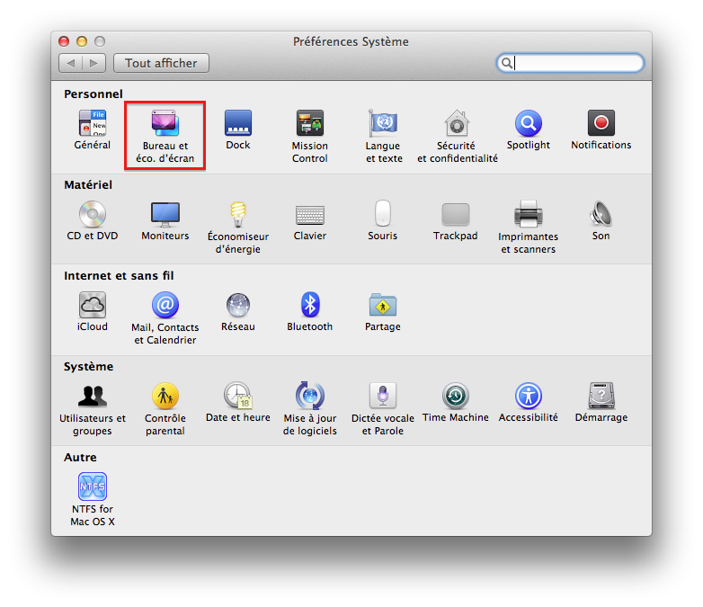Préférences Système
Nous allons nous intéresser à la deuxième icône, encadrée en rouge sur l'image, qui concerne, comme son nom l'indique, le bureau et l'économiseur d'écran. Il y a ici un petit abus de langage puisque, comme défini précédemment, le bureau est l'endroit où vous déposez vos fichiers ; dans ce menu, vous ne pourrez modifier que l'image d'arrière-plan du bureau : le fond d'écran. Mais également, et c'est lié, l'économiseur d'écran.
Minute papillon : qu'est-ce que l'économiseur d'écran ?
Comme son nom l'indique, l'économiseur d'écran vous permet d'économiser de l'énergie, en particulier sur les ordinateurs portables. Il s'agit le plus souvent d'une image ou d'une petite animation qui remplace votre bureau afin de diminuer la consommation d'énergie de votre écran. Ne vous inquiétez pas : nous allons le découvrir ensemble.
Le fond d'écran
Si vous cliquez sur la deuxième icône, vous devriez vous retrouver devant une nouvelle fenêtre (voir la figure suivante). C'est dans celle-ci que vous pourrez changer votre fond d'écran à volonté. Le seul petit bémol est que, pour l'instant, vous n'avez peut-être pas encore de photos sur votre ordinateur, mais cela viendra par la suite. Nous nous exercerons donc avec les images se trouvant de base dans votre ordinateur. Néanmoins, si vous avez déjà stocké des images sur votre ordinateur, je vous expliquerai comment les mettre en fond d'écran.
Préférences du fond d'écran
Comme vous pouvez le voir, ce menu peut se compose de plusieurs parties.
Dans ce menu en forme de liste, on retrouve tous les dossiers ajoutés dans « Préférences Système » et qui contiennent des fonds d'écran. De base, Apple propose un certain nombre de fonds d'écran, classés par thématique dans les dossiers. Vous pouvez également avoir accès à vos photos si elles sont dans l'application iPhoto, que nous traiterons dans une prochaine partie.
Cette partie vous affiche les différents fonds d'écran disponibles dans chaque dossier. Pour changer de dossier et voir de nouveaux fonds d'écran, il vous suffit juste d'effectuer un clic gauche sur un des dossiers situés dans la colonne de gauche (1).
Si vous possédez déjà des images sur votre disque dur, vous pouvez ajouter un dossier dans la liste des dossiers de fonds d'écran. Pour ce faire, rien de bien compliqué : il vous suffit de cliquer sur le petit bouton +, puis de trouver votre dossier dans l'arborescence de l'ordinateur. Une fois ajouté, celui-ci devrait apparaître dans la colonne de gauche, avec les autres dossiers.
Toutefois, avec tout cela, je ne vous ai pas montré comment changer votre fond d'écran. Une fois que vous avez choisi un fond d'écran, il vous suffit de cliquer une fois dessus, après quoi un petit cadre jaune devrait l'entourer. Eh voilà, rien de plus ! Vous venez de changer votre fond d'écran. Pour l'admirer, vous pouvez fermer les « Préférences Système », ou simplement masquer l'application avec le raccourci clavier Cmd ⌘ + H, comme nous l'avons appris.
Cela nous amène à revenir sur le fameux économiseur d'écran, dont nous avons parlé plus haut.
L'économiseur d'écran
Pour que nous puissions parler de l'économiseur d'écran, il vous faut vous rendre dans le même menu que précédemment mais, au lieu de rester dans la partie concernant le fond d'écran, rendez-vous dans la partie « Économiseur d'écran » à l'aide de l'onglet situé en haut de la fenêtre des préférences.
Vous devriez vous retrouver devant une fenêtre légèrement différente de la précédente (voir la figure suivante). Dans celle-ci, à l'instar de celle du fond d'écran, vous pourrez changer à votre guise votre économiseur d'écran.
Préférences de l'économiseur d'écran
La présentation ressemble un peu à celle du fond d'écran, je vais donc être un peu plus rapide dans mes explications.
Liste des économiseurs d'écran disponibles. Vous pouvez en sélectionner un en effectuant un simple clic gauche sur celui que vous voulez.
Fenêtre de visualisation de l'économiseur d'écran que vous avez choisi. Si la fenêtre vous semble trop petite, vous pouvez cliquez sur le bouton « Tester » en dessous pour voir l'économiseur en plein écran. Pour le faire disparaître, il vous suffira de bouger votre souris.
Après avoir choisi votre économiseur d'écran, il faut que vous choisissiez la durée après laquelle celui-ci apparaîtra. Un délai trop court vous coupera à chaque petite inactivité devant votre ordinateur et, à l'inverse, un délai trop long rendra inutile l'usage d'un économiseur d'écran.
Suivant l'économiseur d'écran que vous choisirez, vous pourrez modifier certaines options relatives à celui-ci grâce au bouton « Options… ». Je ne détaillerai pas spécifiquement pour chaque économiseur d'écran car ce menu d'options change à chaque fois.
Il existe encore d'autres options liées à l'économiseur d'écran, mais je ne les évoquerai pas dans cette partie. En revanche, si vous êtes un minimum débrouillard, vous pourrez farfouillez un peu pour les trouver. Cependant, faites toujours attention en cochant ou en décochant des cases d'options !
Je vous propose maintenant de retourner dans le menu d'accueil de « Préférences Système », l'endroit où se trouve l'ensemble des menus d'options. Je vous propose de regarder la première icône, tout en haut à gauche : Général.
Dans ce menu, on retrouve de très nombreuses options, qui ne vont pas toutes nous être utiles. Puisque nous nous penchons actuellement sur la personnalisation graphique et esthétique de notre système d'exploitation, nous nous intéresserons aux deux premières options de ce menu (voir la figure suivante).
Préférences Apparence
Vous pouvez vous amuser également avec les options en dessous, mais celles-ci ne relèvent pas d'un très grand intérêt. Passons donc à la suite, qui est un peu plus intéressante. :)
Vous vous souvenez de votre Dock ? Nous l'avons beaucoup utilisé et ce n'est pas près d'être fini ! Nous allons donc à présent passer en revue les préférences système relatives au Dock. Vous pourrez ainsi personnaliser votre Dock à votre guise, notamment en modifier la taille. Pour vous rendre dans les préférences du Dock, il faut que vous cliquiez sur la troisième icône des « Préférences Système », comme nous l'avons fait précédemment (voir la figure suivante).
Préférences Dock
Ce menu comporte beaucoup moins d'options que les précédents, je vais donc pouvoir vous en dire un peu plus sur chacune d'entre elles.
Taille : comme son nom l'indique, il s'agit d'une option permettant de régler la taille de votre Dock, très pratique lorsque beaucoup d'applications y sont présentes.
Agrandissement : cette option n'est pas activée par défaut ; il faut cocher la petite case à gauche pour l'activer. Elle permet d'agrandir le Dock quand vous le survolez avec la souris.
Position : à la base, votre Dock est situé en bas mais vous pouvez choisir de l'afficher à droite ou à gauche, selon votre convenance.
Type de réduction : nous n'en avons pas parlé mais, sur la fenêtre d'une application, lorsque vous cliquez sur le petit bouton jaune en haut à gauche, celle-ci se réduit dans le Dock. Cette option permet de définir comment doit se réduire la fenêtre dans votre Dock ; c'est plus une option esthétique qu'autre chose. ;)
Réduction des fenêtres dans l'icône de l'application : toujours en lien avec la réduction ; si vous cochez cette case, les fenêtres se réduiront directement dans l'icône de l'application de votre Dock. À l'inverse, si vous ne cochez pas cette option, les fenêtres se réduiront dans le Dock, mais apparaîtront du côté droit du Dock, à côté des dossiers.
Animation à l'ouverture des applications : il s'agit également d'une option qui tient davantage de l'esthétisme : elle permet l'animation de l'icône du Dock à l'ouverture de l'application.
Masquage/affichage automatique : lorsque cette option est cochée, votre Dock disparaît automatiquement de votre bureau lorsque votre souris ne le survole pas ; cela permet de gagner un peu d'espace sur le bureau. Pour faire réapparaître le Dock, il vous suffit de placer votre souris tout en bas de l'écran.
Afficher les indicateurs lumineux des applications ouvertes : une autre option très importante puisqu'elle recolle avec ce que nous avons dit dans les chapitres précédents, je parle ici des petites pastilles blanches que l'on trouve sous les applications ouvertes dans votre Dock. Je vous déconseille donc de décocher cette option, puisqu'il est toujours utile de savoir si une application est ouverte ou non.
Voilà ! Vous savez maintenant comment personnaliser au mieux votre Dock pour en faire la plaque tournante de l'utilisation de votre ordinateur ; c'est son rôle et il faut en tirer profit.
Vous pouvez changer le fond d'écran de votre Bureau ainsi que l'économiseur d'écran.
Vous avez la possibilité de changer l'apparence générale du système d'exploitation.
Le Dock est également personnalisable, notamment sa taille et les effets associés.
Ce chapitre a pour but de vous présenter quelques notions concernant les virus et les différentes menaces qui peuvent se présenter lorsque vous utilisez votre ordinateur. Celui-ci sera très général et vous permettra d'adopter de bonnes pratiques afin de vous protéger vous et vos données lorsque vous manipulez votre ordinateur, nous n'aborderons aucune problématique technique je vous rassure.
Bien sûr, il est vrai qu'il existe différents types de menaces : vous pouvez perdre toutes vos données, perdre votre ordinateur voire vous faire voler certaines données assez critiques telles que des données bancaires. Quelle que soit la menace, on n'est jamais sûr à 100 % d'être protégé. Cependant, en appliquant quelques règles simples, on réduit grandement les risques. :)
Si vous avez déjà utilisé un ordinateur, vous devez avoir entendu le terme « virus » ou « cheval de Troie ». Je vais essayer de développer un peu ces termes pour que vous puissiez comprendre contre quoi j'essaie de vous protéger. Naturellement, ces explications se veulent simplifiées pour ne pas vous faire peur avec des pavés de texte. Cependant, si vous désirez en savoir plus par après, vous pouvez toujours vous renseigner sur des sites tel Wikipédia.
Un virus, quésaco ?
Vous vous en doutez peut-être ou vous le savez déjà, mais le terme virus n'a pas été choisi au hasard : il fait un parallèle avec le virus tel que nous le connaissons chez les êtres vivants. Chez l'humain, c'est un petit être qui se propage et qui a souvent pour effet d'endommager notre corps. Eh bien, un virus informatique, c'est la même chose : c'est un petit programme qu'on ne peut pas voir comme une application et qui, le plus souvent, a pour but d'endommager un ordinateur. Certains types de virus peuvent se multiplier pour mieux se propager ; c'est le cas des vers informatiques.
La seule différence est que les virus informatiques, par opposition aux virus que l'on connaît, ont été créés par des êtres humains, qui cherchent à semer la pagaille.
Plusieurs types de virus
Comme chez les êtres vivants, on retrouve plusieurs grandes catégories de virus informatiques. On peut notamment citer, parmi les plus connus :
les chevaux de Troie : ce sont des virus qui ont l'apparence d'une application normale mais qui, par derrière, exécutent des actions pour contourner les protections du système et créent un trou dans la défense de votre ordinateur ;
les keyloggers : ce sont des virus qui prennent note de ce que vous tapez sur votre clavier puis les envoient à un pirate informatique. Cela permet par exemple de récupérer des mots de passe ;
les vers : des virus qui se reproduisent et se propagent en masse pour infecter rapidement beaucoup d'ordinateurs.
Je pourrais continuer à taper une liste presque longue comme mon bras, mais ce serait inutile. Ce qu'il faut savoir, c'est que les virus, de quelque type qu'ils soient, sont dangereux pour votre ordinateur. Il faut donc faire attention et c'est ce que nous allons apprendre à faire.
J'ai entendu dire qu'il n'y avait pas de virus sur Mac ; c'est d'ailleurs pour cela que j'en ai acheté un, est-ce vrai ?
Les antivirus
Il existe des applications développées par des experts en sécurité pour se protéger en partie des virus. Ces applications détectent les intrus présents sur votre ordinateur et les détruisent de la même façon que les globules blancs le font dans votre corps. Ces logiciels sont très répandus sous Windows du fait du grand nombre de virus. Sur Mac, leur nombre est très réduit voire quasiment inexistant. Je ne vous conseillerais donc pas d'en installer un car, à l'heure actuelle, votre système embarque lui-même des protections largement suffisantes.
D'ailleurs, évoquons un contre-exemple assez important dans l'histoire du virus sur Mac. En mai 2011, un antivirus nommé Mac Defender, sous l'apparence d'un véritable antivirus pour Mac, se révélait être un virus qui affichait des fenêtres de manière intempestive ou d'autres petites malices de ce genre. Ce virus a été l'un des premiers, sur Mac, à infecter autant d'ordinateurs. Depuis, grâce aux efforts d'Apple et d'experts, le virus a disparu, mais cela reste un bon exemple qui nous prouve que les virus existent sur Mac.
Faire attention
L'exemple que j'ai donné au-dessus n'est pas anodin : il faut que vous fassiez attention aux applications que vous téléchargez et installez à partir du Web. Mac Defender n'était pas un programme qui s'installait à votre insu, mais bien un programme que les utilisateurs installaient de leur propre gré.
Il faut donc, lorsque vous téléchargez un fichier ou une application sur le Web, faire attention à leur provenance et être sûr de ce que vous téléchargez. D'ailleurs, si vous ouvrez pour la première fois un fichier que vous venez de télécharger, Mac OS X vous affiche un message pour vous prévenir (voir la figure suivante).
Message d'avertissement lors de l'ouverture d'une application non-identifiée
Normalement les préférences de sécurité empêchent l'installation de tous les logiciels qui ne proviennent pas du Mac App Store ; ce qui réduit à un nombre très limité d'application. Si vous savez ce que vous faites, vous pouvez vous rendre dans l'option « Sécurité et confidentialité » des Préférences Système afin de permettre l'installation d'applications ne venant pas uniquement du Mac App Store (voir la figure suivante).
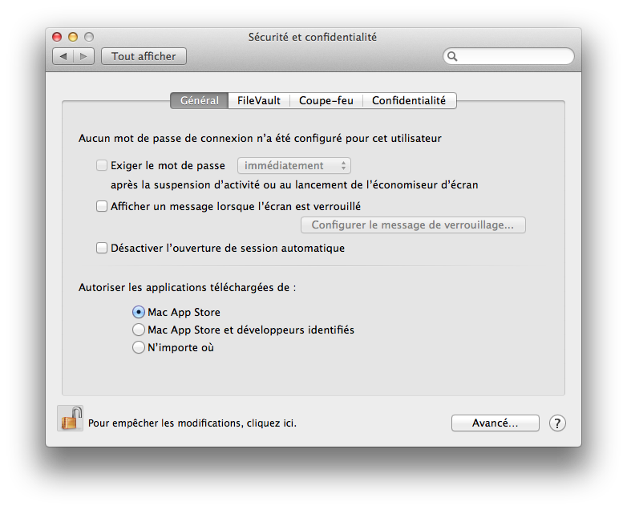Préférences Sécurité
À vous de faire votre choix en fonction de votre niveau en informatique et de votre peur vis à vis des virus informatiques. D'ici quelques mois, la plupart des applications usuelles seront certifiées (développeurs identifiés), vous pouvez donc choisir la deuxième option qui répond à la plupart des besoins. Vous pourrez alors ouvrir une application téléchargé sur Internet (voir la figure suivante).
Message d'avertissement lors de l'ouverture d'une application non-identifiée
On ne peut jamais tout prévoir mais il y a tout de même quelques indices qui peuvent vous mettre la puce à l'oreille : par exemple, si, en recherchant sur le Web, vous constatez qu'aucun site d'informatique sérieux ne mentionne le logiciel que vous souhaitez télécharger, méfiez-vous.
Les virus peuvent constituer une part importante des problèmes qui arrivent à votre ordinateur. Il existe cependant des méthodes beaucoup plus simples et vieilles comme le monde pour vous soutirer des informations et celles-ci existaient bien avant l'informatique. Ces méthodes se basent sur la naïveté des utilisateurs d'ordinateurs, et cela quel que soit leur système d'exploitation.
Les méthodes
Il n'existe pas de livre intitulé « Méthodes pour pirater un ordinateur ». Cependant, certaines méthodes qu'utilisent les pirates sont récurrentes. Bien sûr, il ne faut pas s'imaginer un jeune pirate informatique qui passe sa journée devant son ordinateur et qui, à l'aide de logiciels super-sophistiqués, arrive à pénétrer dans votre ordinateur. Ce type de personnes existent, mais recherchent rarement l'accès à l'ordinateur d'un particulier, comme vous ou moi.
Les méthodes qu'emploient la plupart des pirates informatiques sont donc rarement très sophistiquées, mais sont plutôt des méthodes qui abusent des utilisateurs. On peut notamment en citer une : le phishing. Cette méthode consiste à créer un faux site web ressemblant à s'y méprendre à celui de sa banque, par exemple, et demander à l'utilisateur d'entrer des informations bancaires. Pensant se trouver sur le site de leur banque, certains entrent ces informations sans se méfier une seconde, et voilà que le pirate détient maintenant leurs informations bancaires et peut acheter en ligne. La méthode du pirate tient donc bien d'un tour d'illusion plutôt que d'une réelle attaque informatique comme un virus le ferait.
Par cette méthode (qui n'est pas la seule), le pirate peut également récupérer le mot de passe de votre ordinateur, ainsi qu'une quantité de données sensibles que vous ne communiqueriez normalement pas à n'importe qui. On retrouve également ce genre de méthodes dans les e-mails, ainsi que par téléphone. Mais avec les possibilités presque illimitées de l'informatique, les pirates peuvent tendre des pièges de plus en plus sournois et bien ficelés.
Bonnes pratiques
Comme pour les différentes méthodes, il n'existe pas de pratique à adopter dans chaque cas de figure, mais plutôt une attitude générale à avoir lorsqu'on fait de l'informatique. Nous y reviendrons plus longuement quand nous aborderons la navigation sur Internet, l'endroit où il y a le plus de risques, mais, pour l'instant, il faut savoir qu'il ne faut jamais donner le mot de passe de votre ordinateur. C'est une règle d'or qu'il convient d'appliquer en permanence.
Aucun site ni aucune personne ne vous le demandera jamais ! Seul votre système d'exploitation peut vous le demander, mais de manière extrêmement rare. C'est d'ailleurs encore plus valable pour les autres données très sensibles, comme vos informations bancaires ou le code de votre alarme.
Afin de garder constamment la meilleure protection pour votre système d'exploitation, il est important que ce dernier soit à jour afin de pouvoir contrer les nouvelles menaces et failles de sécurité. Ceci est également valable pour les applications mais, le plus souvent, leurs mises à jour sont gérées de manière interne.
Une mise à jour, comme vous vous en doutez, est une sorte de nouvelle couche de peinture sur la carrosserie de votre système d'exploitation. Elle permet d'ajouter de nouvelles fonctionnalités mais également de reboucher certains trous (des failles en informatique) que les virus peuvent emprunter pour abimer l'intérieur du système d'exploitation.
Il arrive que votre système d'exploitation, lorsque vous redémarrez votre ordinateur, vous propose de manière automatique d'effectuer des mises à jour, mais ce n'est pas toujours le cas et il faut parfois vous-même demander à votre ordinateur de rechercher et installer les mises à jour. Cela reste évidement très simple à faire : il faut vous rendre dans le menu Pomme en haut à gauche de votre écran et cliquer sur l'option « Mise à jour de logiciels ». L'application Mac App Store devrait se lancer et rechercher les mises à jour du système (voir la figure suivante).
Onglet Mises à jour de l'App Store
Une fois la recherche terminée, le Mac App Store vous propose une liste des différentes mises à jour, s'il y en a. Je vous conseille pour le moment d'installer toutes les mises à jour pour être certain de bénéficier de la dernière version de votre système d'exploitation.
À la fin d'une installation, il est possible que votre ordinateur vous demande de redémarrer le système afin de pouvoir terminer la configuration des mises à jour : c'est une étape importante qu'il faut effectuer. Assurez-vous d'avoir enregistré tout votre travail et, quand l'option vous est proposée, cliquez sur « Redémarrer ».
Pour automatiser cette tâche, rendez-vous dans les Préférences Système. Dans la quatrième catégorie, « Système », cliquez sur la quatrième icône, « Mise à jour de logiciels » (voir la figure suivante).
Je vais à présent vous parler d'un outil de protection de votre système d'exploitation. Vous le retrouverez assez souvent dans la suite du tutoriel, autant donc en parler maintenant. Depuis tout à l'heure, je vous ai parlé d'attaque à distance, cas dans lequel la personne n'a pas directement accès à votre ordinateur. Mais si un pirate arrivait à avoir un accès direct à votre ordinateur ou, de manière plus simple, si votre petit frère ou petite sœur s'amusait avec votre ordinateur, vous ne voudriez pas que celui-ci ou celle-ci puisse modifier vos préférences système, et c'est bien normal.
Mac OS X possède donc un système de petit cadenas que l'on retrouve sur la plupart des options des Préférences Système qui touchent des paramètres sensibles. Lorsque nous avions modifié l'apparence de notre système d'exploitation, nous n'y avons pas eu affaire car il ne s'agit pas de préférences sensibles. À l'inverse, juste précédemment, vous avez peut-être vu que, dans les préférences des mises à jour de logiciels, un petit cadenas était présent en bas à gauche (voir la figure suivante).
Préférences Mise à jour de logiciels
Sur l'image ci-dessus, le petit cadenas est ouvert, ce qui signifie que vous pouvez modifier les préférences de ce menu sans restriction. Pour bloquer les modifications, cliquez une fois sur le petit cadenas, qui devrait alors se fermer (voir la figure suivante).
Le petit cadenas est fermé
À ce moment-là, vous ne pouvez plus rien modifier sans rouvrir le cadenas. Cliquez dessus une nouvelle fois : le système vous demande alors votre mot de passe pour ouvrir le cadenas, ce qui est logique car il n'y aurait aucun intérêt à installer un cadenas sans code (voir la figure suivante).
Le mot de passe est exigé pour effectuer cette opération
Vous pouvez maintenant à nouveau modifier les préférences des mises à jour de logiciels. Dans le cas de mises à jour, vous ne voyez peut-être pas l'intérêt d'un tel système mais, dans la suite, quand nous aborderons la gestion des utilisateurs, nous constaterons qu'il a son importance.
La sécurité de votre ordinateur est primordiale pour avoir une bonne expérience utilisateur.
Une grande partie de cette sécurité repose sur votre bon sens et sur l'application de quelques règles simples.
Le nombre de virus sous Mac est très faible mais il y en a !
OS X Mountain Lion intègre un système de protection pour empêcher de lancer des applications téléchargées sans votre autorisation.
Une mise à jour régulière de votre système d'exploitation et de vos applications est un gage de sécurité.
Évitez les sites webs et les applications douteuses.
Dans ce premier chapitre de présentation d'Internet et du Web, nous allons rester très théoriques afin de vous donner quelques bases essentielles pour comprendre le fonctionnement d'Internet. Nous verrons notamment qui ont été les acteurs de la création d'Internet et du Web mais également le fonctionnement d'une adresse web et comment se déroule la connexion à Internet avec un FAI (Fournisseur d'accès Internet).
Nous verrons notamment pourquoi certains sites possèdent un nom en .fr ou en .com pour le Site du Zéro par exemple.
Beaucoup de personnes ne font pas bien la différence entre Internet et le Web. De nos jours ces deux entités sont tellement liées que l'on utilise l'un pour désigner l'autre et inversement. Mais à l'origine les deux étaient très différents et nous allons voir pourquoi. ;)
Une origine : ARPANET
Internet provient d’un projet militaire initié par la DARPA, une agence du Département à la Défense des États-Unis d’Amérique. Ce projet débute en 1969 pendant la guerre froide qui oppose principalement les États-Unis à l’Union Soviétique (URSS). Dans ce contexte de course au développement de nouvelles technologies les américains lancent donc ARPANET la même année où Neil Armstrong et Buzz Aldrin posent le pied sur la Lune.
ARPANET est un projet qui a pour but de relier entre eux plusieurs ordinateurs afin qu’ils puissent échanger des informations. Ce projet vise également à rendre compatible à tous types d’ordinateurs cette nouvelle technologie. Les ordinateurs ainsi reliés forment un réseau.
Une fois que plusieurs dizaines d’ordinateurs étaient reliés ensemble, on pouvait communiquer avec chacun d’eux. On installait ce que l’on appelle des nœuds de réseau qui permettaient de relier un ordinateur à tous les autres en passant par un point central : le nœud.
Suite à ce projet et à plusieurs modifications, ARPANET devint ce que l’on connaît aujourd’hui sous le nom d’Internet. Mais Internet n’est que la structure qui relie ensemble des ordinateurs pour faire un réseau.
Et vint le Web
Nous venons de voir qu’Internet était le fait de mettre en réseau des ordinateurs à une grande échelle. Cependant, quand vous utilisez votre ordinateur pour naviguer, vous utilisez Internet comme infrastructure mais aussi quelque chose d’autre.
Quand vous naviguez sur un site, vous pouvez voir des images, du texte et pleins d’autres choses. Pour voir ces images et ce texte il a fallu inventer une nouvelle technologie permettant de montrer ces pages à travers un navigateur.
Tim Berners-Lee
On doit cette nouvelle technologie au britannique Tim Berners-Lee. Celui-ci travaillait au CERN et voulut partager facilement des documents avec ses collègues via le réseau interne du CERN. Il nomma ce projet le World Wide Web que l’on connaît aujourd’hui sous le simple nom du Web.
Je viens de vous expliquer de manière très simple et très rapide la différence entre Internet et le Web. L’un est une structure qui permet de relier des ordinateurs entre eux pour former un réseau géant. L’autre est le contenu auquel on peut accéder à l’aide d’un navigateur.
Je mets également quelque chose en avant : si le Web est contenu dans la structure de l’Internet l’inverse n’est pas vrai. On note beaucoup d’autres utilisations de l’Internet notamment les mails que l’on reverra dans l’avant-dernier chapitre de cette partie.
On a vu que l'on pouvait se connecter à un réseau mondial : Internet. On dispose également d'un contenu : le Web. Mais comment se déroule l'affichage d'une page web ? Quand on se rend sur un site Web on se connecte à un autre ordinateur grâce à Internet et on lui demande de nous afficher la page web qui nous intéresse.
Fonctionnement basique du Web
Le plus souvent les ordinateurs auxquels vous demandez une page web s'appellent des serveurs. Ce sont simplement des ordinateurs conçus pour ce type d'utilisation. Mais en théorie vous pouvez utiliser votre ordinateur personnel pour diffuser du contenu sur le Web.
Maintenant que vous avez compris le principe d'un site Web nous allons nous intéresser un peu plus en détail à certains éléments d'un site Web. Je pense notamment à l'adresse d'un site Web.
L'adresse d'un site Web
Pour pouvoir se connecter à un autre ordinateur pour lui demander une page web il faut bien réussir à le trouver sur Internet. Les créateurs du Web ont donc décidé d'utiliser des adresses pour retrouver un site de la même façon que vous disposez d'une adresse postale pour que l'on puisse vous envoyer du courrier.
Vous utilisez tous les jours des adresses web. Prenons un exemple simple : l'adresse du Site du Zéro.
http://www.siteduzero.com
http:// : « http » est le nom de la technologie développé par Tim Berners-Lee. Il permet de dire au navigateur que l'on utilise ce protocole de communication et pas un autre. De nos jours son utilisation est devenu implicite, les derniers navigateurs masquant cette partie.
www : Vous vous en doutez peut-être le « www » signifie World Wide Web. Cet élément est plus historique qu'autre chose : il n'a pas réellement de rôle dans une adresse web. On peut très bien avoir une adresse d'un site sans le « www ».
siteduzero : c'est l'adresse du site web. Dans le cas du Site du Zéro ce nom correspond au nom du site ce qui est très logique. On parle souvent de nom de domaine.
com : dernier élément de l'adresse d'un site web, l'extension du nom de domaine. Un peu comme pour les fichiers cette extension permet d'identifier rapidement la nature du site web.
Afin de bien tout saisir je vais expliquer un peu plus en détail certains points. Parlons d'abord de l'extension du nom de domaine. On peut les classer dans diverses catégories selon leurs buts. On remarque cependant deux grands types d'extension :
Les extensions de types nationales : .fr pour la France, .be pour la Belgique, .de pour l'Allemagne. Le plus souvent on sait que le site sur lequel on se rend est dans la langue du pays. Ce qui permet lors d'une recherche d'éliminer certains sites.
Le deuxième grand type regroupe les extensions qui renseignent sur l'activité d'un site web. Par exemple à l'origine .com désignait les sites commerciaux, .org désignait les sites d'associations ou d'organismes.
Cette logique existait au début du Web cependant de nos jours celle-ci n'est plus vraiment respectée. Par exemple l'extension .com n'est plus utilisé uniquement par des sites commerciaux si on prend l'exemple du Site du Zéro qui possède une adresse en .com à l'origine celui-ci n'avait aucune prétention commerciale.
Concernant le nom de domaine et ce qui le précède dans notre cas « www.siteduzero ». Quand vous tapez cette adresse vous demandez le serveur qui se nomme « siteduzero » ; le « www » correspond à un dossier du serveur qui se nomme « www ». On dit que « www » est un sous-domaine du domaine principal ici « siteduzero ». Mais on trouve d'autres sous-domaines par exemple pour le Site du Zéro on trouve un autre sous domaine : « sciences ». Pour y accéder on tape l'adresse « sciences.siteduzero.com » à la place de « www.siteduzero.com ».
Cette technique est d'ailleurs très employée pour les sites mobiles. On dirige l'utilisateur vers un sous-domaine du site qui s'appelle souvent « mobile » ou « m », on a alors une adresse de la forme « mobile.site.com »
Vous connaissez maintenant parfaitement le fonctionnement d'Internet et du Web. Mais il reste un problème de taille : comment vous connecter à Internet ?
La réponse est simple il faut passer par un FAI. Il permet de faire le lien entre votre ordinateur et Internet.
Ce lien est possible grâce à un appareil que votre FAI vous fournit. Aujourd'hui la plupart des FAI proposent une « box ». Elle porte un nom différent selon votre FAI mais elle remplit le même rôle à chaque fois (voir la figure suivante). Il existe également d'autres outils pour se connecter mais ceux-ci sont plus rares ; on peut notamment citer le bon vieux modem qui était beaucoup utilisé au début des années 2000.
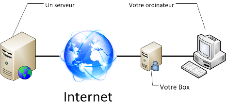Fonctionnement avec le passage par une box d'un FAI
Les FAI sont donc obligatoires pour se connecter à Internet ; sans eux vous n'avez aucun moyen de le faire. Je ne vous expliquerai pas comment choisir votre fournisseur d'accès à Internet vous avez déjà sûrement choisi et la qualité dépend tellement du lieu d'habitation qu'il serait impossible de dire si l'un est meilleur que l'autre.
Internet est un réseau géant d'ordinateurs d'origine est militaire : ARPANET.
Comme tout réseau, Internet possède de nombreux protocoles qui le structure et permette son fonctionnement.
Le Web est l'un de ses protocoles et a été créé par Tim Berners-Lee en 1991 ainsi que le langage HTML.
Pour qu'un particulier puisse accéder à Internet, il faut qu'il dispose d'une box pour se connecter.
Après ce petit rappel sur l'histoire d'Internet et son fonctionnement, nous allons passer à des phases un peu plus pratiques. Dans ce chapitre, nous traiterons donc de la connexion de votre ordinateur à Internet, que ce soit par la méthode filaire avec un câble Ethernet ou par une méthode sans fil grâce au Wi-Fi. Ce sera également l'occasion de découvrir un peu de vocabulaire propre à la connexion à Internet et d'autres petites choses plus subtiles. Je vous invite donc à me suivre pour découvrir tout cela. ;)
Comme nous l'avons vu dans la partie précédente, je pars du principe que vous avez déjà souscrit un abonnement Internet chez un fournisseur d'accès (FAI) et que vous disposez donc d'une Box ADSL qui vous permet de vous connecter à Internet. Il existe deux moyens pour vous connecter à Internet à votre domicile : le câble Ethernet et le Wi-Fi. Nous allons passer en revue ces deux méthodes afin de savoir laquelle vous pouvez utiliser.
Connexion filaire : le câble Ethernet
Il s'agissait autrefois de la seule méthode permettant de se connecter à Internet mais, depuis quelques années et l'avènement du Wi-Fi, ce type de connexion a presque disparu des foyers. Cependant, sur les ordinateurs moins récents, cela reste le seul moyen d'effectuer la connexion entre l'ordinateur et la Box internet.
Un câble Ethernet ressemble à ceci (voir la figure suivante).
Un câble Ethernet
Si vous possédez une Box assez récente, il vous suffit de connecter ce câble, d'un côté, sur l'un des ports Ethernet prévus à cet effet situés sur votre Box et, de l'autre, sur votre ordinateur. Vous pouvez retrouver un port Ethernet à l'arrière des iMac. Notez que c'est le seul endroit où vous pourrez enfoncer le câble ; il doit entrer tout seul et émettre un petit clic s'il est bien branché. Il ne faut pas forcer au risque d'endommager le câble voire votre ordinateur.
On peut également retrouver des ports Ethernet sur les MacBook, MacBook Pro et les Mac mini. Vous ne trouverez cependant pas ce genre de port sur les MacBook Air qui se veulent les plus libres possibles, c'est-à-dire avec le moins de fils possible. ;)
La connexion s'effectue normalement de manière automatique. Vous pouvez déjà effectuer une première vérification afin de voir si le câble est bien branché en vous rendant dans les préférences réseau.
Préférences Réseau
Pour ce faire, il faut d'abord aller dans les « Préférences Système » puis, dans la troisième ligne « Internet et sans fil », rendez-vous dans le menu « Réseau ». Une page semblable à celle-ci devrait alors s'afficher (voir la figure suivante).
Préférences Réseaux : connexion via un câble Ethernet
Si vous voyez que « Ethernet intégré » est indiqué comme connecté, tout devrait fonctionner. Toutefois, si, par malheur, vous n'étiez pas connecté, je vous invite à regarder du côté de la documentation de votre Box : il doit sûrement exister un paragraphe sur la configuration sur Mac.
Connexion sans fil : le Wi-Fi
De nos jours, le moyen le plus courant pour se connecter à Internet est le Wi-Fi (Wireless Fidelity). Si vous possédez un Mac assez récent (moins de quatre ans), vous disposez de cette technologie quelle que soit la machine. Si celle-ci est plus ancienne (ce qui ne devrait pas être le cas), je vous invite à regarder par vous-même dans les préférences réseau.
Bien que le Wi-Fi vous simplifie la vie en enlevant les câbles et autres désagréments, il va falloir passer par quelques étapes avant de vous connecter à Internet. Il faudra, dans l'ordre :
Chercher la liste des réseaux sans fil à portée de votre ordinateur.
Choisir le réseau sans fil auquel vous voulez vous connecter.
Vous identifier auprès du réseau en entrant, le plus souvent, un mot de passe.
Je vous invite donc à récupérer les informations concernant votre Box avant de continuer : il nous faudra le nom de l'appareil (SSID) ainsi que la clef de sécurité, que l'on retrouve habituellement directement sur sa Box. Il s'agit le plus souvent d'une suite de chiffres et de lettres assez longue pouvant atteindre les 30 caractères. Notez bien ces informations de sorte à éviter de les chercher par après.
Vous vous souvenez des petites icônes à droite dans la barre des menus ? Eh bien, c'est le moment d'y revenir. Nous allons nous intéresser à cette icône en particulier :
/
/
Si l'icône noire est déjà affichée, cela signifie que vous êtes connecté à un réseau. En revanche, si une icône grise est affichée, c'est que vous n'êtes pas connecté. Si vous voyez la troisième icône, c'est votre Wi-Fi qui est déconnecté. Mais pas d'affolement : nous allons voir cela ensemble.
Je vous invite donc à cliquer sur l'icône située dans votre barre des menus. Si vous aviez le Wi-Fi désactivé (3e icône), il vous suffit de cliquer sur « Activer le Wi-Fi » puis de vous laisser guider. En cliquant sur cette icône, vous devriez voir apparaître une liste de réseaux, comme ici (voir la figure suivante).
Liste de réseaux Wi-Fi
C'est maintenant que les informations que je vous ai demandé de chercher auparavant vont être utiles. Vous devriez repérer le nom de votre Box dans la liste des réseaux Wi-Fi proches. Dans mon cas, c'est la Livebox-FCBA qui m'intéresse ; notez que la vôtre porte peut-être un autre nom mais l'important est que vous puissiez la voir.
Zut, je ne la vois pas ! Qu'est-ce que je dois faire ?
Le Wi-Fi, bien que très pratique, possède des limites en termes de portée. Il faut vous assurer que vous êtes suffisamment proche de votre Box et qu'il n'y a pas trois murs porteurs entre elle et vous. Si c'est le cas, rapprochez-vous. À l'inverse, si vous êtes juste à côté d'elle et que vous ne la voyez toujours pas, je vous invite à vérifier si votre Box dispose bien du Wi-Fi en consultant la documentation de celle-ci.
Une fois votre réseau trouvé, cliquez sur son nom. Une nouvelle fenêtre devrait apparaître devant vous. Elle vous demande un mot de passe qui n'est autre que celui de votre Box. Suivant l'ancienneté de la Box, il peut porter plusieurs noms : clé WEP ou clé WPA (voir la figure suivante).
Le mot de passe Wi-Fi est exigé pour se connecter
Je vous conseille par ailleurs de cocher la case « Mémoriser ce réseau », ce qui vous évitera de devoir saisir le mot de passe à chaque connexion. Voilà, vous avez normalement fini et devez être connecté. Si l'icône était grise, elle doit maintenant être noire, ce qui indique que vous êtes bien connecté (
). Pour vérifier cela, nous allons nous rendre à nouveau dans les préférences réseau. Cela sera également utile pour ceux chez lesquels l'icône du Wi-Fi n'était pas affichée dans la barre des menus. ;)
Préférences Réseau
Si vous n'aviez pas une des trois icônes en haut de votre écran ou simplement pour vérifier que vous êtes bien connecté, il faut d'abord aller dans les « Préférences Système » puis, dans la troisième ligne « Internet et sans fil », rendez-vous dans le menu « Réseau ». Une page semblable à celle-ci devrait alors s'afficher (voir la figure suivante).
Préférences Réseaux : connexion via Wi-Fi
Normalement si vous êtes connecté, il devrait y avoir une petite pastille verte à côté de l'icône « Wi-Fi » qui indique que vous êtes connecté.
Pour les personnes qui ne pouvaient pas voir une des trois icônes du Wi-Fi en haut de leur écran, il faut cocher la case « Afficher l'état Wi-Fi dans la barre des menus ». L'icône devrait alors apparaître instantanément en haut de votre écran. Il vous suffit alors de suivre la précédente procédure pour vous connecter en Wi-Fi.
Lorsque vous ne sortez pas votre ordinateur de chez vous, vous n'utilisez sûrement qu'un seul réseau sans-fil. Cependant si vous avez l'habitude de vous balader à droite et à gauche, il peut arriver que vous soyez amené à vous connecter à plusieurs autres réseaux. Il est pratique et surtout utile de savoir comment les gérer.
Il faut vous rendre dans les « Préférences Système » puis, dans la troisième ligne « Internet et sans fil », rendez-vous dans le menu « Réseau ». Vous savez déjà comment y accéder, mais une petite piqûre de rappel ne fait pas de mal.
Pour gérer les réseaux sans fils, il vous suffit alors de cliquer sur « Avancé... ». Vous devriez vous retrouver sur une page ressemblant à celle-ci (voir la figure suivante).
Préférences Réseaux : organiser ses réseaux Wi-Fi
Dans mon cas je ne possède qu'un seul réseau Wi-Fi en mémoire mais il se peut, si vous possédez un ordinateur portable, que leur nombre soit beaucoup plus important.
Supprimer un réseau
Pourquoi supprimer un réseau, je peux le laisser dans la liste même si je ne m'y connecte pas, non ?
En théorie, oui vous pourriez laisser tous les réseaux Wi-Fi dans cette liste cependant on distingue deux grands types de réseaux Wi-Fi :
réseaux privées
réseaux publics
Normalement quand vous vous connectez à votre Box, vous vous trouvez sur un réseau que l'on peut qualifier de privé : seules les personnes qui ont la clef de la Box peuvent s'y connecter.
Cependant il existe des réseaux publics, souvent des hotspots (point d’accès Wi-Fi), on peut s'y connecter comme bon nous semble et tout le monde peut s'y connecter. Lorsque vous vous connectez à Internet via ces points d'accès, un petit malin, s'il est connecté sur le même réseau public, peut en théorie voir certaines de vos actions.
Pour éviter de vous connecter à un réseau public de manière automatique dès que vous êtes à portée de celui-ci, vous pouvez le supprimer de votre liste. Pour cela il suffit de cliquer une fois dessus puis de cliquer sur le petit bouton
sous la liste.
Si vous supprimez par erreur un réseau, il suffit de vous y reconnecter avec la procédure de la première partie pour qu'il réapparaisse dans la liste.
Priorité des connexions
On vient de voir comment supprimer un réseau Wi-Fi de la liste. Cependant il peut arriver que vous ayez deux réseaux Wi-Fi proches et dont vous connaissez les clefs Wi-Fi. Prenons un exemple simple : vous possédez deux Box, l'une pour le travail et l'autre pour la vie privée. Quand vous allumez votre ordinateur vous aimez être automatiquement connecté sur la Box « vie privée ». Cependant vous ne voulez pas vous embêter à entrer le mot de passe de la Box « professionnelle » à chaque fois.
C'est là qu'intervient la priorité des connexions aux réseaux. Vous n'allez pas supprimer le réseau « professionnel » à chaque fois pour éviter de vous y connecter, mais simplement le mettre avec une priorité inférieure à celle de votre réseau « vie privée ». Comment faire ?
Quand vous possédez au moins deux réseaux, il vous suffit de les faire glisser l'un par rapport pour les mettre dans l'ordre souhaité. Le réseau en haut de la liste sera celui avec la plus grande priorité et celui tout en bas sera celui avec la plus basse.
Il existe deux grandes manières de se connecter à Internet : en Wi-Fi ou via un câble Ethernet.
Il est possible d'organiser ses réseaux Wi-Fi pour se connecter en priorité sur un réseau Wi-Fi particulier.
Le Web est quelque chose d'un peu conceptuel comme nous l'avons vu dans le premier chapitre sur Internet, afin de pouvoir consulter des sites webs, il faut disposer d'une application particulière : un navigateur. C'est cette application qui se charge de traduire ce qui est présent sur le web en quelque chose de consultable et lisible par vous et les autres internautes.
Je pense que vous savez tous ce qu'est un navigateur, vous avez sûrement déjà dû en utiliser un dans le passé pour consulter un site web par exemple, je vous ai même fait lancer un navigateur dans la première partie du tutoriel sur les applications. Si vous voulez par exemple consulter le Site du Zéro, vous allez avoir besoin d'un navigateur pour afficher le site web à l'adresse http://www.siteduzero.com
J'ai parlé dans l'introduction du navigateur au sens général du terme, le moyen que l'on utilise pour visiter des sites Web. Mais en réalité il n'existe pas un unique navigateur mais des dizaines, voire des centaines.
Cependant seulement un petit nombre sort du lot et bien que très différent sous certains aspects, ils gardent tous une base commune que l'on retrouve sur chaque navigateur récent de nos jours.
Une base commune
En plus d'afficher une page Web, un navigateur vous rend la vie plus facile en vous proposant également plusieurs fonctionnalités comme :
un historique Web ;
un système de favoris ;
un système d'onglets ;
etc.
Voilà une petite liste des fonctionnalités. Il y en a beaucoup plus mais elles sont souvent plus spécifiques à chaque navigateur. Allons maintenant voir les principaux navigateurs que l'on trouve sous Mac OS X.
Les principaux navigateurs sous Mac OS X
Je n'entrerai pas dans les détails, car cela serait trop long mais surtout parce qu'il n'y a pas un meilleur navigateur qu'un autre. Certaines personnes vont préférer le navigateur x et d'autres le navigateur y, vous vous ferez certainement votre propre avis après avoir touché à quelques-un des navigateurs et vous l'adopterez, mais pour le moment cela n'a pas beaucoup d'importance. Voici donc une liste non exhaustive des navigateurs que l'on trouve sous Mac OS X :
Safari ;
Opéra ;
Firefox ;
Google Chrome.
Pour info, Safari est le navigateur fourni avec Mac OS X, il est donc développé par Apple et normalement déjà présent sur votre ordinateur.
Opéra est le seul navigateur à l'heure actuelle disponible sur le Mac App Store que nous avons vu dans le chapitre 5, il est donc plus facile à installer que les trois autres navigateurs.
Enfin, Firefox et Google Chrome sont respectivement disponibles au téléchargement ici et ici.
Je ne vous force donc en rien dans le choix d'un navigateur plutôt qu'un autre, cependant je vous informe que dans la suite du cours, même si je ne le mentionne pas, je travaillerai avec le navigateur Safari. Vous pouvez très bien suivre le cours avec le navigateur de votre choix, les seules différences se feront au niveau des boutons et du nom des options mais pas d'inquiétude vous ne serez pas perdu. ;)
Nous allons nous intéresser à l'interface de notre navigateur. Comme je l'ai dit au-dessus, il y aura sûrement quelques différences entre mes captures et les vôtres mais le principe reste le même. Que vous choisissiez d’utiliser Safari ou Firefox vous savez maintenant comment lancer une application donc passons directement à l'action.
La barre d'adresse unifiée
Utilisation conventionnelle
Normalement située en haut de votre navigateur, c'est le cœur de votre navigateur : la barre d'adresse (voir la figure suivante).
La barre d'adresse
Vous devez sûrement déjà savoir l'utiliser, elle vous permet de vous rendre sur un site en tapant son adresse dans la barre, d'où son nom. ;)
Une barre de recherche
La barre de recherche et d'adresse unifiée est une nouveauté très récente de Safari. C'est une fonctionnalité que l'on retrouve notamment dans Google Chrome. En plus de pouvoir y entrer le nom complet d'un site web, celle-ci permet d'effectuer une recherche directement dans votre moteur de recherche. Il vous suffit pour cela de taper directement votre recherche dans cette barre (voir la figure suivante).
La barre d'adresse : une barre de recherche
Les boutons « Suivant » et « Précédent »
Lorsque vous naviguez sur un site, il peut arriver que vous souhaitiez revenir sur la page précédente. Au lieu de devoir retaper dans la barre d'adresse le nom du site, vous pouvez utiliser le bouton « Précédent » et inversement le bouton « Suivant » (voir la figure suivante).
Bouton Suivant et Précédent
Vous remarquerez le lien fort au niveau du design entre ces boutons et ceux du Finder, c'est assez normal car ils servent à la même chose !
Bouton « Rafraîchir » une page
Le principe de rafraîchir le contenu d'un site Web est de demander à nouveau au navigateur d'afficher la page d'un site Web. Lorsque vous consultez un site statique qui ne change de contenu que chaque mois, rafraîchir la page n'a que peu d’intérêt. À l'inverse sur une page du forum, il y a souvent de nouveaux messages il est donc intéressant de rafraîchir la page de temps en temps.
Vous pouvez donc utiliser le bouton à droite de la barre d'adresse
ou utiliser le raccourci clavier qui est plus pratique : Cmd ⌘ + R.
Les onglets
Il y a encore quelques années pour ouvrir une nouvelle page, on ouvrait une nouvelle fenêtre du navigateur. Mais avec l'expansion d'internet on a tendance à ouvrir de plus en plus de page Web à la fois au cours de notre navigation. Les développeurs des navigateurs web ont pensé à quelque chose : les onglets.
Les onglets permettent de regrouper sur une seule fenêtre de votre navigateur l'ensemble des pages web que vous consultez.
Bon très bien mais pratiquement comment utilise-t-on ces onglets ?
Ouvrir un nouvel onglet
Pour ouvrir un nouvel onglet il vous suffit de cliquer sur le petit bouton
à droite de votre fenêtre.
Vous pouvez également utiliser le raccourci clavier suivant pour ouvrir plus rapidement un nouvel onglet : Cmd ⌘ + T.
Quand vous ouvrez un nouvel onglet, on se retrouve dans la même situation que lorsque vous ouvrez une nouvelle page de votre navigateur. La barre d'adresse est vide et vous pouvez taper directement l'adresse de votre site web dedans. Vous pouvez avoir donc plusieurs pages web ouvertes en même temps et en parallèle.
Ouvrir un lien dans un nouvel onglet
C'est bien marrant de savoir ouvrir un nouvel onglet mais si vous devez pour chaque lien que vous voulez ouvrir copier l'adresse dans la nouvelle barre d'adresse vous ne gagnez pas grand-chose.
L'intérêt est de pouvoir ouvrir un lien directement dans un nouvel onglet. Quand vous avez un lien vers un autre chapitre du tutoriel et que vous cliquez directement dessus la page que vous consultez est remplacée par la page de l'autre chapitre. Vous devez ensuite cliquer sur « Précédent » pour revenir à cette page.
Pour gagner en efficacité, vous pouvez ouvrir ce lien dans un nouvel onglet. Pour cela il suffit de faire un clic droit sur le lien et de choisir l'option « Ouvrir le lien dans un nouvel onglet » (voir la figure suivante).
Lorsque vous consultez une page Web intéressante qui par exemple vous apprend à utiliser le système d'exploitation Mac OS X, vous voulez probablement la consulter plus tard dans la journée pour en apprendre plus. Vous pouvez très bien noter sur un bout de papier l'adresse web du site mais ce n'est pas très pratique quand l'adresse fait 1 km de long. ^^
Pour remédier à ce problème les navigateurs proposent une fonctionnalité intéressante : les signets. J'utiliserai plus volontiers le terme de « Signet » car c'est celui qui est utilisé dans Safari. Cependant on retrouve très souvent le terme « Favoris » ou « Marque-pages ». L'ensemble de ces termes désignent une même fonctionnalité, celle qui permet à votre navigateur d'enregistrer vos sites favoris.
Concrètement comment enregistre-t-on une page dans nos signets ?
Ajouter un signet
Pour ajouter un site dans vos signets rien de difficile. Rendez-vous sur la page qui vous intéresse par exemple celle que vous êtes en train de lire en ce moment. Il vous suffit de cliquer sur le bouton
, un menu devrait apparaître, il vous suffit de cliquer sur « Ajouter un signet »
Options du menu Partage
Vous pouvez aussi directement ajouter le bouton d'ajout de signet, si celui-ci n'est pas présent dans Safari. Pour cela il faut vous rendre dans « Présentation » dans la barre des menus et choisir l'option « Personnaliser la barre d'outil ». Une petite fenêtre devrait apparaître avec toutes les options que vous pouvez ajouter dans votre barre d'outils. Il vous suffit ensuite de faire glisser le ou les outils qui vous intéresse dans la barre avec l'aide de votre souris.
Bouton d'ajout d'un signet
Quand vous cliquez sur le petit « + » ou sur l'étoile une fenêtre devrait apparaître devant vous. Elle vous permet de choisir sous quel nom vous allez enregistrer votre signet mais également dans quel emplacement vous voulez l'enregistrer.
Ajouter un signet
Le nom de votre signet va vous permettre de le retrouver plus tard il faut donc choisir un nom pratique et assez court, le plus souvent le nom proposé par votre navigateur convient très bien.
L'emplacement où vous allez enregistrer votre signet indique l'endroit où vous pourrez le retrouver plus tard. Avant d'entrer dans plus d'explication, je vous demande d’enregistrer votre signet soit dans « Menu Signets » ou dans « Barre des signets ». Il vous suffit ensuite de cliquer sur « Ajouter » pour finir la création de votre signet. ;)
Organisation des signets
Je vous ai demandé de ne pas ranger votre signet n'importe où car il existe des dossiers pour bien ranger ses signets. Nous allons rapidement passer tout cela en revue avant d'attaquer la suite. Comme pour vos dossiers sur votre ordinateur, vos signets peuvent également être rangés dans des dossiers pour les retrouver plus facilement.
Gestion des signets
Pour retrouver le signet que vous avez créé, il faut vous rendre dans la gestion de vos signets pour cela il faut aller dans la barre des menus > « Signets » > « Afficher tous les signets ». Vous remarquez d'ailleurs que ce n'est pas un menu qui s'ouvre mais une page qui remplace celle que vous étiez en train de consulter. Pour pallier à ce problème il faut utiliser les onglets. Ouvrez au préalable un nouvel onglet vierge et refaites l'opération précédente dans celui-ci.
Vous devriez vous retrouver devant une page ressemblant à ceci :
Afficher tous les signets
Ici j'ai décidé d'enregistrer mes signets dans « Barre des signets » si vous l'avez enregistré dans Menu Signets cela ne change pas grand-chose car vous pouvez y accéder en cliquant sur « Menu Signets » dans la barre latérale à gauche.
Maintenant un peu d'explications sur les différences entre ces deux dossiers :
La barre des signets se distingue pour une raison très simple. Tous les signets que vous mettez dedans apparaissent automatiquement entre la barre d'adresse et les onglets pour y accéder rapidement. Si vous avez donc enregistré votre signet dans le dossier « Barre des signets » vous l'avez peut-être vu apparaître dans cet espace.
A l'inverse le dossier « Menu des signets » ne s'affiche pas directement il faut donc faire la manipulation précédente pour y accéder. L'intérêt de mettre des signets dedans et qu'ils ne vont pas encombrer votre barre de signet.
Si la barre des signets n'est pas automatiquement activé il vous suffit de vous rendre dans la barre des menus > « Présentation » > « Toujours afficher la barre des signets ». La barre des signets devrait ressembler à ceci sur votre navigateur :
Barre des signets
Ranger ses signets
Comme je l'ai dit au-dessus les signets se comportent un peu comme des fichiers. Pour les déplacer il vous suffit de faire la même manipulation qu'avec un fichier. Pour vous entraîner, amusez-vous à déplacer un signet de la barre des signets vers le menu des signets. Rien de très compliqué il vous suffit de maintenir le clic gauche sur le signet qui vous intéresse et de le glisser dans le dossier « Menu Signets ».
Déplacer un signet
L'inverse est également possible et de manière plus générale vous allez maintenant voir que l'on peut déplacer un signet dans n'importe quel dossier, car oui il est possible de créer des dossiers pour mieux organiser ses signets. :)
Des dossiers pour les signets
Rien de très compliqué dans cette partie. Pour suivre la petite procédure il vous suffit de vous rendre au même endroit que précédemment. Il vous faut ensuite choisir dans la barre des menus > « Signets » > « Ajouter un dossier de signets ». Vous devriez voir apparaître un dossier dans la barre latérale. Vous pouvez le remplir comme nous l'avons vu précédemment soit en déplaçant un signet d'un dossier vers un autre ou simplement lors de la création d'un signet il vous suffit de choisir ce dossier comme dossier d'enregistrement.
Un nouveau dossier pour nos signets
La petite subtilité qui intervient ensuite est importante à comprendre car sinon vous risqueriez de rester bloqué. À la différence des signets que l'on peut déplacer d'un dossier à un autre en s'aidant de la barre latérale, les dossiers de la barre latérale ne peuvent pas être mis dans un autre dossier à l'aide de la barre latérale. Il vous faut d'abord ouvrir le dossier cible en cliquant dessus et faire glisser le dossier que vous voulez déplacer dans le dossier cible. Une illustration sera je pense le meilleur des exemples.
Déplacer un dossier
Chose étrange vous pouvez déplacer un dossier qui se trouve déjà dans un autre en vous aidant de la barre latérale. Ne me demandez pas pourquoi c'est ainsi mais ça l'est. ;)
Une fonctionnalité que l'on retrouve souvent mais qui est souvent peu utilisée au final : l'historique de navigation. Cette fonctionnalité vous permet comme son nom l'indique de se souvenir de l'ensemble des sites web que vous avez visité. En plus de se souvenir l'historique classe par date voire par heure les sites que vous avez consultés.
Pour accéder à votre historique ce n'est pas bien compliqué et vous avez d'ailleurs dû apercevoir l'option en vous promenant dans les menus tout à l'heure. Dans la barre des menus, sélectionnez le menu « Historique » sélectionnez l'option « Afficher tout l'historique ».
Raccourci clavier : Consulter l'historique
Alt + Cmd ⌘ + 2
L'intérêt des signets par rapport à l'historique est la meilleure hiérarchisation des sites que vous avez consultés. L'historique permet de retrouver un site que vous avez consulté qui a été utile mais qui n'avait pas vraiment sa place dans votre barre de signet.
Vous l'avez peut-être remarqué mais le menu des signets et de l'historique sont assez commun puisque vous pouvez vous aider de la barre latérale pour passer de l'un à l'autre. ;)
C'est un navigateur qui va vous permettre de naviguer sur le web et de consulter des sites web.
Le navigateur Safari mélange la barre d'adresse et la barre de recherche, un peu déconcertant au début, vous ne pourrez plus vous en séparer.
Les onglets vous permettent d'ouvrir plusieurs pages web dans une même fenêtre et de pouvoir facilement passer de l'une à l'autre.
Les signets (ou favoris) vous permettent de stocker les sites web dont vous voulez vous souvenir dans l'avenir.
Vous pouvez agencer et ranger vos signets comme les documents sur votre ordinateur avec Finder.
L'historique permet de garder les url des dernières pages que vous avez visité.
Vous devez déjà avoir entendu parler des courriers électroniques que l'on nomme souvent des mails. C'est maintenant devenu un moyen de communication à part entière et beaucoup de services sur le Web requièrent une adresse électronique.
Certaines personnes possèdent une adresse mail mais ce n'est pas le cas de tout le monde. Ce chapitre vous permettra de bien comprendre le principe des adresses électronique, des mails et de leur utilisation.
Ce chapitre risque d'être un peu ennuyant pour certains mais sera je l'espère une source d'informations pour beaucoup d'autres. Nous commencerons par la base : le compte de messagerie électronique.
Le compte de messagerie électronique
Avant d'aborder la théorie sur les mails et comment en envoyer, il faut déjà posséder un compte de messagerie. Vous en possédez certainement au moins un, celui que votre FAI vous a donné lors de votre inscription. Si vous ne l'utilisez pas ou que vous en possédez un autre, aucun problème ! Dans tous les cas nous verrons dès le chapitre suivant comment créer un compte de messagerie.
Lors de la création d'un compte on y associe automatiquement une adresse mail, c'est elle qui va nous intéresser par la suite. ;)
L'adresse mail
Vous savez maintenant qu'une adresse mail est automatiquement associée à votre compte de messagerie. Elle représente une adresse chez qui vos correspondants vont pouvoir envoyer des mails de la même façon que vos amis envoient des lettres chez vous grâce à votre adresse postale. Une adresse postale a une forme particulière : numéro ; nom de la rue ; ville ; pays. C'est la même chose pour une adresse mail celle-ci a une forme particulière :
gmail.com : le nom du domaine du service de messagerie.
Dès qu’une personne veut posséder une adresse de messagerie sérieuse, on utilise certaines conventions. On retrouve donc très souvent des adresses de la forme :
[email protected] Bien que cette convention soit adoptée par beaucoup ce n’est pas non plus une obligation et vous pourrez tomber sur toute sorte d’adresse mail, il ne faudra donc pas être étonné par la forme de certaines d’entre elle. Cette adresse mail permet de nous diriger vers le troisième point et sûrement le plus important : les mails.
Les mails
Je vous ai dit qu'un adresse postale était comme une adresse mail. Eh bien de la même façon, un mail est comme un courrier. Pour envoyer un mail vous devez disposer d’une adresse mail mais votre correspondant doit également en avoir une, comme vous ne pouvez pas envoyer un courrier à une adresse qui n’existe pas.
L’avantage du mail par rapport au courrier est sûrement sa rapidité. Il ne s’écoule rarement plus d’une minute entre l’envoi d’un mail et sa réception par le destinataire et ceci que le destinataire se trouve en France ou à l’étranger. À l’inverse, un courrier peut prendre quelques jours à quelques semaines pour être envoyé à l’autre bout du monde.
Nous reviendrons par la suite sur toutes les possibilités offertes par les mails mais déjà vous pouvez comprendre leur mode de fonctionnement.
Consulter ses mails
Il existe deux solutions pour consulter ses mails sur son ordinateur. La première est le passage par votre navigateur avec la consultation de ce qu’on appelle la webmail souvent fournie par votre service de messagerie. La deuxième est le passage par un logiciel de messagerie qui permet de gérer vos mails directement dans une application.
Les webmails
Comme je vous l’ai dit, une webmail vous permet de consulter et d’envoyer vos mails directement à partir de votre navigateur. Cette méthode a l’avantage d’être multiplateforme puisqu’il suffit d’avoir un navigateur internet.
Aujourd’hui la plupart des grands fournisseurs de messagerie électronique propose une webmail. Chez certains cette webmail sera très rudimentaire ; chez d’autres on y trouvera plein de fonctionnalités. Mais elles permettent toutes de recevoir et d’envoyer des mails, ce qui est le principal !
Toutes les webmails se ressemblent un peu notamment au niveau de la disposition et de l’interface. Voici un exemple de webmail (voir la figure suivante).
Une webmail : Gmail
Le plus souvent on confond un peu webmail et le fournisseur de messagerie électronique. C’est un peu normal puisque aujourd’hui chaque fournisseur met à disposition une webmail pour ses clients. On retrouve notamment : Hotmail, Yahoo et Gmail. Ces trois fournisseurs proposent de se créer une adresse mail mais proposent également un service de webmail.
Les logiciels de messagerie
L’autre moyen de consulter ses mails est bien entendu les logiciels de messagerie. Ces logiciels sont souvent plus complets que les webmails et proposent de nombreuses fonctionnalités supplémentaires. Un autre point fort pour ces applications est le mode hors-ligne. L’application stocke tous vos mails sur votre ordinateur. Si vous avez besoin d’en consulter un que vous avez déjà reçu mais que vous ne disposez par de connexion internet, vous pourrez tout de même lire le mail.
On trouve beaucoup d’applications de messagerie sous Mac mais on peut citer parmi les plus connues : Mail, Microsoft Entourage et Mozilla Thunderbird.
L’interface d’un logiciel de messagerie (ici Mail) ressemble beaucoup à l’interface d’une webmail et c’est un peu normal puisqu’ils remplissent les mêmes fonctions (voir la figure suivante).
Une application pour lire ses mails : Mail
Par la suite nous travaillerons avec ce logiciel. L’interface reste la même pour tous les types de logiciels de messagerie comme pour les webmails. Vous pourrez donc suivre le tutoriel même si vous ne voulez pas utiliser le logiciel Mail. Cependant je vous le recommande pour sa bonne intégration dans Mac OS X puisqu'il est développé par Apple.
Après une petite partie théorique peut-être un peu ennuyante je vous propose de passer à la pratique et de créer une adresse mail. Vous en possédez déjà une, c'est presque certain. Si vous tenez absolument à conserver cette adresse aucun problème vous pouvez sauter ce chapitre. Cependant si vous êtes curieux il peut être intéressant de lire ce chapitre.
J'ai décidé de choisir d'utiliser Gmail. C'est mon choix et je vous présenterai la création d'une adresse mail chez ce fournisseur. Cependant vous pouvez très bien en créer une chez un autre fournisseur. Avec un peu de débrouillardise vous arriverez sûrement à vos fins.
Le choix de Gmail est dicté par plusieurs choses : la première est son intégration très facile dans le logiciel Mail que nous utiliserons par la suite. La deuxième raison est que j'utilise personnellement ce service il est donc plus facile pour moi de vous expliquer son fonctionnement.
Pour commencer il faut vous rendre sur le site internet de Gmail ( http://www.gmail.com ). Cliquez ensuite sur ce bouton (voir la figure suivante).
Créer un compte
Vous devriez vous retrouver devant un formulaire qui vous demande tout d’abord de renseigner quelques informations personnelles (voir la figure suivante).
Le champ « Nom de connexion demandé » correspond à l’adresse mail que vous souhaiteriez avoir. Une fois votre choix effectué, cliquez sur « vérifier la disponibilité ». Si cette adresse existe déjà, Gmail vous propose une liste d’autres adresses libres. Vous pouvez décider de suivre son conseil ou de changer manuellement votre adresse jusqu’à obtenir une adresse à votre nom (voir la figure suivante).
Gmail vous demande ensuite de choisir un mot de passe pour accéder à votre compte de messagerie. Le choix du mot de passe est très important et pas seulement pour la création d’une adresse mail. Il faudra choisir un mot assez compliqué pour éviter que quelqu’un puisse le trouver facilement mais assez facile pour que vous puissiez vous en souvenir (voir la figure suivante).
Je vous conseille de vous aider de la barre qui vous indique le niveau de sécurité de votre mot de passe à droite du champ.
On vous demande ensuite de choisir une question secrète et une réponse à cette question secrète. Cette dernière vous permet par exemple de récupérer votre mot de passe si vous veniez à l’oubliez. On vous demande ensuite de remplir un champ concernant un E-mail de récupération de mot de passe. Ce dernier champ est tout logiquement facultatif puisqu’il peut arriver que ce soit là votre première adresse mail que vous créez (voir la figure suivante).
Pour finir il faut que vous tapiez un code. Ce code permet de faire la différence entre un robot et un humain. Ceci pour éviter que des robots s’amusent à créer des centaines de comptes ce qui détériorait la qualité du service (voir la figure suivante).
Enfin pour finir, il faut que vous cochiez une dernière case qui indique que vous avez pris connaissance des conditions d’utilisations du service Gmail. Je ne vous oblige pas à lire ces conditions, cependant si vous avez un peu de temps cela ne fait pas de mal (voir la figure suivante).
Il vous suffit alors de de cliquer sur le dernier bouton :
Voilà vous disposez maintenant de votre propre adresse mail. Vous pouvez dès à présent l'utiliser. :)
Depuis maintenant quelques temps, l’application Mail propose une simplification de la configuration pour certains types de compte de messagerie. Parmi eux on trouve Gmail, Yahoo et Aol. Je vous ai fait choisir Gmail précédemment afin de simplifier la configuration de Mail.
Cependant si vous n’avez pas une adresse mail chez l’un de ces fournisseurs ce n’est pas très grave, il vous faudra simplement faire un peu de recherche pour trouver comment configurer Mail. Comme chaque configuration est différente je ne la décrirai pas ici mais je vous rassure c’est très simple.
Pour configurer Mail, il ne faut pas se rendre dans Mail mais dans « Préférences Système » puis dans la catégorie « Internet et sans fil » cliquez sur la deuxième icône « Mail, Contacts et Calendrier ». Vous devriez vous retrouver sur une interface ressemblant à cela (voir la figure suivante).
Ajouter un compte de messagerie
Sélectionnez l’option « Ajouter un compte ... » puis choisissez Gmail ou votre fournisseur de messagerie électronique.
Vous devrez ensuite simplement donner votre adresse mail de votre compte ainsi que le mot de passe (voir la figure suivante). Le nom complet correspond seulement au nom sous lequel apparaîtra ce compte dans Mail vous pouvez donc entrer ce que vous voulez. :)
Ajout d'un compte Gmail dans Mail
Dans la seconde boîte de dialogue on vous demande de choisir quels services utiliser avec votre compte Gmail. Je vous conseille pour le moment de cocher uniquement « Courrier électronique et notes ». Dans le prochain chapitre nous verrons ce qu’est iCloud, vous pourrez alors décider de cocher la deuxième option (voir la figure suivante).
Fin de l'ajout d'un compte mail : choix des services
Voilà votre compte Gmail est configuré. Vous pouvez maintenant vous rendre dans l’application et voir que vos messages y apparaissent. Nous verrons rapidement par la suite les quelques options importantes qu’il faut retenir dans Mail.
Ce que je vais expliquer maintenant peut s’appliquer à un autre logiciel de messagerie, comme toujours il y aura peut-être quelques différences mais rien d'insurmontable. Je ne présenterai pas non plus l’utilisation de la webmail de Gmail puisqu’elle est très similaire à l’interface de Mail donc je vous laisserai vous amuser comme des grands. ;)
Passons à la pratique, rendez-vous dans l’application Mail. Vous devriez avoir un écran ressemblant à celui-ci (voir la figure suivante). Si vous n’avez pas la barre latérale comme moi il vous suffit de l’afficher en cliquant sur
à droite de votre écran.
L’interface de Mail se découpe donc en trois grandes parties. Nous allons en parler rapidement avant d’attaquer les cas pratiques.
Interface de Mail
La barre latérale : comme dans le Finder elle vous permet de naviguer entre les différents dossiers de Mail et sert notamment à passer d’une boîte mail à l’autre quand on en possède plusieurs.
Affiche le contenu du dossier sélectionné dans la barre latérale. Le plus souvent on y retrouve les derniers mails reçu.
Contenu des mails. Quand on sélectionne un mail dans la zone centrale, celui-ci s’affiche dans cette zone. Mail regroupe par conversation tous les mails envoyés par une même personne pour offrir une meilleure lecture. Vous pouvez donc voir plusieurs mails à la suite dans cette zone.
Écrire un nouveau mail
Pour écrire un nouveau mail rien de très difficile. Comme souvent vous avez plusieurs choix pour créer un nouveau mail. La première technique consiste à cliquer sur ce petit symbole en haut de la fenêtre de Mail. La seconde technique consiste à passer par la barre des menus > « Fichier » > « Nouveau message ». La troisième consiste à utiliser un raccourci clavier : Cmd ⌘ + N.
Une nouvelle fenêtre devrait apparaître devant vous, ressemblant plus ou moins à celle-ci (voir la figure suivante).
Rédiger un nouveau mail
Pour envoyer un mail il y a plusieurs champs à remplir obligatoirement avant l’envoi comme lorsqu’on rédige une lettre sinon le mail n’arrivera jamais à destination. Certains champs sont obligatoires d’autres non.
À : vous permet d’indiquer l’adresse mail de votre destinataire. Elle est obligatoire pour que le mail être envoyé.
Cc : « Copie carbone » ressemble au champ « À » mais est plutôt utilisé pour y mettre les destinataires de seconde importance. Dans la vie courante il est peu utilisé, son utilisation se limite plutôt à l’entreprise.
Cci : même principe que le champ « Cc » mais les destinataires dans le champ « Cci » seront invisibles aux yeux des destinataires normaux.
Objet : vous permet d’indiquer en un mot ou deux le contenu de votre mail, il permet d’attirer l’attention du destinataire mais également qu’il puisse savoir à quoi s’attendre en ouvrant le mail. Ce champ n’est pas obligatoire mais je vous conseille de le remplir. Mail vous préviendra si ce champ est vide et vous devrez confirmer avant son envoi.
Corps du message : c’est là que vous allez saisir le contenu de votre mail. Ce champ est bien sûr obligatoire sans quoi votre mail n’aurait pas énormément d’intérêt.
Pièces jointes
Comme dans une lettre vous pouvez joindre des fichiers supplémentaires dans votre mail. Vous pouvez à la différence d'une lettre ajouter ce que bon vous semble c'est à dire une photo, une vidéo, une musique ou un fichier de texte. Pour ajouter une pièce jointe dans un mail c'est très facile, il vous suffit de cliquer sur cette petite icône
lorsque vous rédigez un mail. Vous pourrez alors choisir le fichier que vous voulez dans l'arborescence de votre ordinateur.
Vous pouvez ajouter en théorie autant de fichier que vous le voulez cependant je vous conseille de vous restreindre à un ou deux fichiers par mail pour éviter tout problème.
Consulter ses mails
J'ai commencé par la rédaction d'un mail mais je suppose que vous souhaitez aussi pouvoir lire les mails que vous recevez de la part de vos correspondants. Lorsque je vous ai présenté l'interface de l'application Mail je vous ai montré qu'elle était séparée en plusieurs parties.
Les mails que vous recevez apparaissent dans la colonne centrale (2) si vous cliquez sur l'un d'eux avec un simple clic gauche celui-ci va s'ouvrir dans la colonne de droite (3) si vous double-cliquez dessus celui-ci s'ouvrira dans une nouvelle fenêtre.
Après l'avoir lu vous pouvez faire plusieurs actions avec ce mail. Nous allons voir les principales.
Répondre au mail
Pour répondre à un mail rien de très compliqué, il vous suffit de cliquer sur le petit bouton
. Vous devriez retrouver alors la même interface que dans la rédaction d'un mail. La seule petite différence est que les champs « À » et « Objet » sont déjà remplis.
Il arrive souvent qu'on laisse le contenu du message précédent pour que la personne qui lit le mail puisse se rappeler du sujet de conversation. Cette pratique est utilisée quand on échange plusieurs mails sur un même sujet. Si vous souhaitez parler d'un sujet complètement différent vous pouvez supprimer le contenu du message avant de rédiger le vôtre.
Supprimer un mail
Si vous ne voulez pas garder de trace de vos mails vous pouvez les supprimer. Pour cela il suffit de cliquer sur la petite corbeille
. Cependant une fois supprimés, il est impossible de récupérer les mails. Vu que ces mails ont souvent des tailles ridicules il peut être intéressant de les conserver car ils peuvent servir. ;)
Transférer un mail
L'idée de transférer un mail est simple et claire. En cliquant sur ce bouton
Mail va créer un nouveau message avec le contenu de votre mail. Il vous suffit d'entrer le nom du ou des nouveaux destinataires pour leur faire suivre le mail que vous souhaitez.
Je n'en avais pas parlé lors de notre premier point sécurité car nous n'avions pas encore découvert toute la magie d'Internet. Maintenant que vous savez naviguer et envoyer des emails il faut que vous adoptiez de bonnes pratiques !
Le spam
Le spam est une pratique, souvent à fins publicitaires, qui consiste à envoyer un mail à des centaines voire des milliers de destinataires en même temps. Comme pour les brochures publicitaires que l'on met dans votre boîte aux lettres, peu de personnes les lisent mais si l'on en distribue dans toute une ville il y aura bien quelques centaines de personnes qui y prêteront attention. Comme un mail est gratuit il est très facile d'en envoyer des centaines et des centaines.
Pour vous donner un chiffre sur l'ensemble des mails envoyés on dénombre 90% de spam. Cela représente plusieurs millions de mails à l'échelle planétaire.
Si ce n'est que de la publicité je peux mettre les mails à la corbeille comme tu me l'as appris ?
Quand ce n'est que de la publicité tout va bien. Vous pouvez même ouvrir le mail rien ne se passera. Les problèmes arrivent quand les spams ne sont plus de la publicité mais des mails qui vous demandent des informations bancaires ou personnelles. Il faut donc toujours vous méfier des mails que vous recevez et dont vous ne connaissez pas l'expéditeur.
S'en prémunir
L'envoi de spam se fait de manière automatique par des logiciels qui possèdent une liste d'adresses mails. Ces listes sont constitués à partir d'adresses mails de personne qui l'ont donné à n'importe qui. . La première chose à faire est donc de ne pas diffuser son adresse mail à n'importe qui, notamment sur tous les sites web où vous vous inscrivez. Comme pour une adresse classique, seul votre famille, vos proches et quelques institutions ont besoin de connaître celle-ci, votre coiffeuse n'a pas besoin de connaître votre adresse.
Vous aurez cependant besoin de la donner de temps en temps pour vous inscrire sur certains sites en ligne. Si vous avez pleine confiance dans le site, par exemple le Site du Zéro, alors vous pouvez utiliser votre adresse mail. Le plus souvent quand vous vous inscrivez sur un site on vous demande de cocher des cases pour accepter certaines choses. Il faut bien lire ce que vous acceptez puisque souvent l'une des cases permet au site de vous envoyer des mails pour vous tenir au courant de ses nouveautés. Sauf si vous êtes très intéressé par les produits que propose le site je vous déconseille de cocher cette case.
S'en débarrasser
Pour se débarrasser des spams il n'existe pas trente mille solutions.
La première technique consiste à regarder le contenu d'un spam. S'il s'agit d'un spam commercial classique vous devriez trouver en bas de ce mail un lien qui permet de se désinscrire. En cliquant dessus vous devriez pouvoir arrêter l'envoi de mail par le site ou la société. Cette technique marche assez souvent mais pas tout le temps.
Vous pouvez également utiliser ce qu'on appelle les filtres anti-spams. Ce sont des filtres qui permettent de bloquer certains mails qui sont considérés comme des spams. Vous pouvez normalement signaler un mail comme étant du spam dans l'application Mail mais également dans la plupart des webmails. Malheureusement cette technique a un revers, il arrive souvent que ce filtre bloque des messages qui ne sont pas du spam ce qui pose parfois problème.
Les spams sont un problème gênant dans l'utilisation des mails mais ils ne se limitent pas à une simple prospection commerciale on trouve des mails beaucoup plus dangereux.
Faire attention
Voici une courte liste des pièges classiques à éviter.
Si vous recevez un mail de votre voisin que vous connaissez depuis 10 ans qui vous propose de télécharger un logiciel avec comme objet du mail : « The best software in the world » vous pouvez directement mettre ce mail à la corbeille. Ce n'est pas parce que le mail vient de l'adresse de votre voisin que cela veut dire que c'est lui qui l'a envoyé. À cause de négligence il peut arriver que quelqu'un puise avoir réussi à obtenir son mot de passe et à utiliser sa messagerie à son insu.
De même si vous recevez un mail de votre banque avec le logo de celle-ci, un lien vers son site internet qui vous demande d'entrer vos coordonnées bancaires car il y a un problème quelconque avec votre compte bancaire, vous pouvez également immédiatement supprimer ce mail. J'avais expliqué dans ce chapitre la méthode du phishing.
De manière plus générale tout message dont vous ne connaissez pas la provenance ne doit pas être ouvert. Encore plus s’il contient des pièces jointes. L'envoi de mail est un moyen pratique et rapide pour diffuser un virus informatique. Les utilisateurs de Mac sont un peu plus protégés que la moyenne mais il faut penser aux autres utilisateurs qui tournent sur un autre système d'exploitation et qui peuvent être infectés si vous leur transférez un mail contenant un virus.
Une adresse mail vous permet de communiquer avec d'autres personnes comme un courrier classique.
Une adresse mail possède une forme particulière : nom_utilisateur@nom_de_domaine.extension
Google propose un service de messagerie : Gmail.
Mail est un client de messagerie spécifique à OS X, Thunderbird et Outlook sont des équivalents sous d'autres OS.
Il ne faut pas donner son adresse à n'importe qui afin d'éviter les spams.
Vous avez peut-être entendu parler de iCloud ces derniers mois. Ce service est maintenant disponible pour tous les utilisateurs disposant au minimum de Mac OS X Lion. Sans entrer dans les détails, ce service vous permet de faire des sauvegardes de certains de vos fichiers dans le « nuage » c'est à dire de faire une sauvegarde sur des serveurs (ici ceux d'Apple) pour pouvoir récupérer ces fichiers sur un autre Mac mais également sur tous les appareils compatibles avec iCloud c'est à dire les iPhones, iPod Touch et iPad.
Grâce à ce système vous allez pouvoir disposer d'une liste de contacts unique sur tous vos appareils, de même pour votre agenda !
Pour pouvoir utiliser iCloud il vous faut plusieurs choses. Tout d'abord il faut que vous disposiez de Mac OS X Lion et que celui-ci soit à jour avec au minimum la version 10.7.2. S’il ne l'est pas, je vous invite à vous reporter au dernier chapitre de la première partie qui traite des mises à jour. Il faut également que vous disposiez d'un compte Apple. Si vous avez utilisé le Mac App Store vous en avez certainement une, si ce n'est pas le cas je vous invite à en créer un en vous aidant si besoin est du chapitre en annexe qui traite de ce sujet.
Maintenant que vous disposez des deux éléments principaux nous allons pouvoir nous tourner vers la configuration d'iCloud. Pour cela il faut vous rendre dans les « Préférences Systèmes ». Dans la partie « Internet et sans fil » sélectionnez la première icône : « iCloud ».
Vous devriez vous retrouver devant une page qui ressemble à celle-ci (voir la figure suivante), il faut que vous entriez l'adresse mail et le mot de passe de votre compte Apple, le même que votre compte iTunes par exemple.
Fenêtre de démarrage d'iCloud
Après la lecture et l'acceptation des conditions d'utilisations du service iCloud vous devriez vous retrouver devant une nouvelle fenêtre ressemblant à celle-ci (voir la figure suivante).
Choix des services d'iCloud
Sur cette fenêtre vous avez le choix. Je vous conseille de laisser la première option cochée puisque c'est celle qui nous intéresse, la seconde est beaucoup moins indispensable et vous pouvez vous permettre de la décocher puisque nous ne l'utiliserons pas. ;)
Après cette rapide configuration, iCloud est normalement pleinement activé sur votre Mac et nous allons pouvoir nous intéresser un peu plus à ses fonctionnalités. Toute la gestion d'iCloud se fera par le panneau suivant (voir la figure suivante). Pour y accéder il vous suffira d'aller dans les Préférences Systèmes comme nous l'avons fait au début. Par la suite je supposerai que quand je parle d'iCloud nous nous trouvons sur la même page.
Dans le chapitre précédent nous avons parlé des mails. Je vous ai même fait créer votre propre adresse mail et nous avons configuré le logiciel Mail ensemble pour recevoir vos mails. Encore une fois je vous présente un nouveau service et vous n'êtes en aucun cas dans l'obligation de créer une adresse mail. Cependant il existe quelques arguments pour la création de cette adresse mail. Une fois créée, elle est automatiquement configurée avec Mail vous n'avez donc rien à faire de plus. Si vous avez d'autres ordinateurs tournant sous Mac, ou des appareils Apple avec un même compte Apple ceux-ci sont automatiquement configurés avec votre adresse mail et vous pouvez donc récupérer un mail sur votre iPad puis le lire sur votre Mac et y répondre sur votre iPhone.
Créer l'adresse mail
La création de l'adresse mail dure environ 1 minute montre en main. Il vous suffit de cocher la première option d'iCloud : « Courrier électronique et notes ». Une boîte de dialogue devrait alors apparaître, comme sur la figure suivante.
Créer une adresse mail avec iCloud
Votre nouvelle adresse mail sera en @me.com, vous pouvez choisir le nom que vous voulez pour votre adresse pour peu que celui-ci soit disponible. Une fois que vous avez choisi il vous suffit de cliquer sur « Ok ». Voilà je vous avais prévenu la création de l'adresse mail est très rapide.
Vous pouvez maintenant vous rendre dans Mail et vous verrez que votre nouvelle adresse mail a été automatiquement ajoutée, vous pouvez donc dès à présent l'utiliser comme n'importe quelle autre adresse. ;)
C'est bien joli tout ça mais ce qui était bien avec mon autre adresse mail c'était le Webmail.
Ne vous inquiétez pas, il existe également un Webmail pour iCloud mais j'ai décidé d'en parler un peu après puisque ce Webmail regroupe également tous les autres services d'iCloud. Je vais donc vous présenter ces autres services avant que nous nous rendions sur la Webmail. ;)
Normalement l'option concernant la synchronisation de vos contacts et de votre calendrier est déjà activée. Nous avons lancé dans les premiers chapitres de ce tutoriel le logiciel « Contacts » mais simplement pour l'exemple sans en tirer parti. Je ne vais pas ici vous présenter de manière complète ce logiciel mais plutôt vous donner une idée générale de son utilisation de même pour « Calendrier » son équivalent pour la gestion de votre calendrier.
Avant d'aller plus loin, parlons de l'intérêt d'utiliser un tel service. De la même façon que pour les mails, cela vous permet de ne disposer que d'un seul agenda et d'un unique carnet d'adresse qui vous suivent où que vous soyez sur votre iPad, votre iPhone ou votre Mac. En plus ces deux services sont totalement intégrés dans les logiciels d'Apple vous n'avez donc rien à faire pour les configurer vous avez juste à l'utiliser. ;)
Tout à l'heure je vous ai présenté Gmail qui vous permet d'avoir un compte de messagerie et d'envoyer des mails. Ce que je ne vous ai pas dit au début c'est que Gmail permet également de synchroniser les contacts et le calendrier de votre Mac avec leurs services. Cependant l'intégration est un peu plus difficile à mettre en place. Je n'en parlerai donc pas dans la suite mais si vous ne voulez pas utiliser iCloud vous pouvez vous tourner vers cette solution qui marche et qui a l'avantage de ne pas se limiter aux appareils Apple.
Passons maintenant au vif du sujet : les deux logiciels « Contacts » et « Calendrier ».
Contacts
Vous savez comment lancer « Contacts ». Si vous utilisez une version antérieure de Mac OS X vous remarquerez que l'interface est très différente. Vous devriez donc tomber sur une fenêtre ressemblant à celle-ci (voir la figure suivante).
L'application Contact
Vous allez pouvoir ajouter de nouveaux contacts dans cette application en vous aidant de la barre des menus. Je vous laisse chercher par vous-même car à force vous devriez savoir chercher un peu tout seul. Je ne vais pas d'ailleurs détailler plus l'utilisation de cette application car elle est très intuitive. La force de cette petite application est la possibilité d'être couplée avec « Calendrier » l'application pour gérer votre calendrier.
Calendrier
Je vous laisse lancer « Calendrier » vous devriez vous retrouver devant une fenêtre ressemblant à ceci (voir la figure suivante).
L'application Calendrier
Calendrier est un logiciel qui vous permet d'organiser votre agenda en ajoutant des événements que l'on peut classer dans différentes catégories selon la nature de l'événement (professionnel, personnel ). Comme je vous l'ai dit, il y a une synchronisation totale avec tous vos appareils Apple.
Comme je l'ai mentionné au-dessus cela va plus loin avec le couplage avec « Contacts ». En cliquant sur
en haut à gauche de votre fenêtre vous pouvez créer un nouvel événement. L'application vous demande d'abord d'entrer de manière rapide les informations concernant l'événement : le nom de l'événement, la date et l'heure. L'élément apparaît alors dans votre calendrier vous pouvez alors le modifier pour le rendre plus précis. Vous pouvez notamment ajouter des invités c'est ce qui nous intéresse ici.
Vous pouvez donc ajouter des invités en entrant leur nom. Si ceux-ci figurent dans le logiciel Contacts, leur nom apparaîtra suivi de leur adresse mail. Quand vous aurez ajouté tous les participants, vous pourrez cliquer sur Terminer. En cliquant sur Terminer, Calendrier se charge automatiquement d'envoyer des invitations aux contacts si ceux-ci répondent favorablement à votre demande vous devriez voir apparaître un petit symbole vert à côté du nom de l'invité.
Les autres fonctions de Calendrier restent assez basiques et intuitives je ne m'arrêterai donc pas plus longtemps sur cette application. ;)
Vous pouvez retrouver ces trois services sur une même page web. Pour cela il suffit de vous rendre à l'adresse suivante : http://www.icloud.com . Après avoir entré vos identifiants vous pouvez accéder aux mêmes services que sur votre ordinateur (voir la figure suivante).
L'interface web d'iCloud
L'avantage de cette interface web est que vous pouvez y accéder depuis un ordinateur tournant sur Mac mais également depuis un ordinateur tournant sous Windows ou un autre système d'exploitation. En plus des trois services que je vous ai décrit au-dessus, vous pouvez également utiliser la fonction localiser mon iPhone et de manière plus générale un de vos appareils Apple.
La dernière vignette concerne iWork. Nous y reviendrons en temps utile dans la quatrième grande partie de ce cours pour le moment vous pouvez l'oublier, de même pour les fonctions Rappels et Notes que nous verrons dans la cinquième grande partie. ;)
Vous pouvez vous amuser à regarder le fonctionnement de ce site web, vous remarquerez la très grande ressemblance entre l'interface web et les applications de Mac OS X Lion, c'est tout à fait normal afin de ne pas trop perturber les nouveaux utilisateurs.
iCloud est un service gratuit proposé par Apple qui propose notamment une adresse de messagerie, une liste de contacts et un calendrier en ligne.
iCloud fonctionnement sur Mac ainsi que sur tous les appareils iOS, certains services sont également disponibles sous Windows.
iCloud propose gratuitement une adresse avec l'extension @me.com.
iCloud propose également d'autres services en ligne, comme iWork, iTunes Match, Notes et Rappels.
iTunes est un logiciel qui vous permet de manière simple et pratique de ranger et d'écouter la musique que vous stockez sur votre ordinateur. Mais au-delà du simple classement de votre musique, celui-ci vous permet de créer des playlists pour vos musiques favorites, de télécharger des podcasts.
C’est également grâce à ce logiciel que vous pourrez synchroniser vos appareils multimédia Apple comme l’iPod ou l’iPhone. iTunes est donc une plaque tournante pour la gestion de vos contenus multimédias.
Normalement l’icône d’iTunes se trouve dans votre Dock. Si elle ne s’y trouve pas je vous laisse chercher l’application par vous-même avec l’aide de Spotlight comme nous l’avons vu dans les chapitres précédents.
Lorsque vous lancez pour la première fois l’application, vous devriez tomber sur une fenêtre qui ressemble à celle-ci (voir la figure suivante). Il peut y avoir quelques différences si par exemple vous n’avez pas la dernière version d’iTunes (se rapporter au chapitre sur les mises à jour).
iTunes 11 : premier démarrage
Nous allons dans un premier temps voir comment ajouter de la musique dans iTunes. Nous verrons tout d’abord comment ajouter ce vous possédez déjà sur votre disque dur puis dans un second temps comment importer de la musique provenant d’un CD. Mais avant d’importer votre musique dans l’application, nous allons procéder à quelques réglages afin que tout marche comme sur des roulettes.
Réglages préliminaire
Deux choses importantes dans les réglages que nous allons effectuer. Déjà je ne vous oblige en rien à les faire, si vous vous y connaissez un peu avec iTunes vous pouvez passer ces étapes. Cependant pour tous les autres, je vous conseille au moins de lire ce qui va suivre pour savoir le faire plus tard si vous en avez besoin.
Réglages à l’importation
Quand nous allons importer la musique contenue dans un CD, iTunes va la compresser pour qu'elle prenne moins de place. Suivant la qualité de cette compression, le fichier audio aura une taille différente sur votre disque dur mais la qualité de la musique sera aussi un peu différente.
La différence n’est pas très flagrante pour quelqu’un qui ne possède pas une oreille très musicale, mais dès que l’on commence un tant soit peu à écouter de la musique, on se rend compte de la grande inégalité entre les différentes compressions qui existent.
Deuxième point important, le format du fichier. Nous l’avions vu dans le chapitre sur la manipulation des fichiers et des dossiers, un fichier audio possède différentes extensions qui diffèrent selon le format du fichier. On retrouve le très célèbre format MP3 (.mp3) qui est à peu près universel. On retrouve également le format AAC (.acc) qui est un format propre à Apple et qui est peu compatible avec les appareils non-Apple. On retrouve également quelques autres formats plus minoritaires qui privilégient souvent la très bonne qualité mais qui occupent beaucoup d’espace sur votre disque dur.
Je ne vous impose pas un format spécifique, mais je vais essayer de vous guider dans le choix d’un format audio acceptable pour votre utilisation dans le tableau suivant, qui résume de manière simple les différents formats que peut lire et encoder iTunes. Il en existe plein d'autres mais eux ne sont pas lisibles par iTunes.
Nom
Avantage
Inconvénient
Résumé
MP3 (.mp3)
Presque universel, lisible par l'ensemble de vos appareils multimédias.
La qualité n'est pas toujours au rendez-vous.
À choisir si vous voulez une bibliothèque de taille réduite, compatible avec tous les appareils multimédias et si une qualité audio moyenne ne vous dérange pas.
AAC (.aac)
Qualité audio correcte (meilleur que le MP3).
Peu lisible par des appareils non-Apple.
À choisir si vous ne possédez que des appareils Apple et si vous voulez une qualité audio acceptable pour une taille de bibliothèque réduite.
Apple Lossless
Excellente qualité audio.
Taille des fichiers très importantes, lisible uniquement sur des appareils Apple.
À choisir si vous ne possédez que des appareils Apple et si vous voulez une très bonne qualité audio.
WAV(E) (.wav)
Format privilégiant une très bonne qualité d'écoute.
Format ancien, de moins en moins compatible et surtout très lourd.
À choisir si vous savez ce que vous faites.
AIFF (.aif, .aiff)
Bonne qualité audio.
Taille des fichiers plus importante, peu compatible.
À choisir si vous savez ce que vous faites.
Si vous n'avez vraiment aucune idée du format à choisir, je vous conseille le format MP3. Au moins avec celui-ci vous n'aurez pas de surprise plus tard.
Pour effectuer ces réglages, il faut se rendre dans le menu : « iTunes » > « Préférences » > « Général » > « Réglages d'importation ». Dans les menus déroulants (voir la figure suivante), vous aurez le choix entre les divers formats que je vous ai présentés juste au-dessus.
Choix de l'encodage lors de l'importation
Une fois votre choix effectué, il vous suffira de choisir dans le menu déroulant « Réglage » la qualité audio que vous souhaitez. Ce réglage influera uniquement sur la taille de vos fichiers et donc sur la qualité audio de ceux-ci. Dans le cas du MP3 je vous conseille de choisir l’option « Qualité supérieure (192kbit/s) » pour l’AAC je vous conseille « iTunes Plus ». Comme auparavant ce ne sont ici que des conseils que je ne vous oblige pas à suivre, si vous savez ce que vous faites.
Organisation de votre bibliothèque
Second et dernier conseil pour l’organisation de votre bibliothèque. Si vous voulez avoir une bibliothèque iTunes parfaitement rangée et pouvoir ainsi retrouver facilement l’ensemble de vos fichiers je vous propose d’effectuer quelques réglages dans les préférences d’iTunes :
Le premier réglage consiste à demander à iTunes de copier les fichiers que vous ajoutez dans un dossier nommé iTunes Média afin qu’il puisse tout centraliser.
La deuxième option qui va avec la première, permet à iTunes d’organiser lui-même le dossier iTunes Média par rapport à ce que vous modifiez dans iTunes.
Ces deux réglages permettent d’avoir tout le temps le dossier iTunes Média à jour et complet et ainsi avoir des titres pour vos fichiers musicaux et non des « Piste 1 » par exemple (voir la figure suivante). Vous verrez que si vous disposez de plusieurs centaines de fichiers musicaux, ces deux réglages vont vous simplifier la vie.
Préférences iTunes Avancé
Pour effectuer ces deux réglages, c’est très simple il vous suffit de vous rendre dans « iTunes » > « Préférences » > « Avancé » et de cocher les deux options dont je vous ai parlé.
Maintenant que la phase un peu rébarbative est passée, nous allons pouvoir enfin attaquer le vif du sujet. :)
Ajouter de la musique dans iTunes
Importer un CD
L'une des deux méthodes pour ajouter de la musique dans iTunes est d'importer les CD que vous possédez chez vous. Pour importer un CD musical dans iTunes, il va d'abord falloir insérer celui-ci dans le lecteur de votre Mac. Tous les modèles d'iMac et de MacBook Pro en possèdent un, donc pas de problème de ce côté là. Pour les possesseurs d'un Mac Mini récent ou d'un MacBook Air qui ne disposent pas d'un lecteur CD, il faudra vous tourner vers d'autres solutions.
Une fois le CD dans le lecteur, celui-ci devrait apparaître dans la barre latérale gauche d'iTunes. En cliquant dessus vous devriez voir le contenu du CD avec le nom de chacune des pistes de votre disque. Pour importer votre CD, il vous suffit de cliquer sur « Importer le CD », comme indiqué à la figure suivante.
Importer un CD
Si vous utilisez iTunes pour la première fois, il se peut que celui-ci vous propose directement d'importer le CD que vous venez d'insérer, comme vous pouvez le voir sur la figure suivante.
Importation de l'album « Showbiz »
Une fois que vous aurez lancé l'importation par l'une ou l'autre des méthodes, vous devriez voir apparaître des petits symboles à côté des chansons de votre CD, cela signifie qu'iTunes est en train de les importer. Une fois l'importation finie, celui-ci émettra un petit signal sonore. Vous pourrez alors éjecter le CD puisque vous n'en aurez plus besoin par la suite.
Vous pouvez maintenant vous rendre dans « Musique » dans le menu latéral pour voir vos fichiers importés dans votre bibliothèque. Si vous êtes bien connectés avec votre compte iTunes, Apple devrait automatiquement se charger de trouver la pochette d'album de votre CD. Vous devriez donc avoir au final quelque chose comme ça (voir la figure suivante).
L'album Showbiz après importation
Importer un fichier audio
Vous n'êtes pas obligé d'importer un CD pour ajouter de la musique dans iTunes. Il se peut, par exemple, que vous possédiez déjà de la musique sur votre ordinateur. Pour l'ajouter à iTunes, vous avez deux méthodes possibles :
La première méthode, la plus simple, consiste à faire glisser un fichier audio ou un dossier de musique sur l'icône d'iTunes qui se trouve dans votre Dock. L'écoute devrait d'ailleurs se lancer en même temps.
La deuxième méthode consiste à passer par les options d'iTunes. Pour cela, allez dans Fichier > Ajouter à la bibliothèque.... Dans la boîte de dialogue qui s'ouvre, il vous suffit de sélectionner le dossier ou la chanson qui vous intéresse pour que celle-ci s'ajoute à iTunes.
Vous venez de voir les deux méthodes pour ajouter vos fichiers musicaux dans iTunes. Si vous ne possédez pas de musique sur votre ordinateur ou chez vous, vous pouvez très bien la télécharger sur l'iTunes Store. Je vous invite à regarder la troisième partie de ce chapitre pour découvrir comment acheter vos morceaux. ;)
Ranger sa musique
Voilà vous venez d'importer vos premiers morceaux dans iTunes. Il vous reste encore quelques petites choses à faire pour avoir une parfaite bibliothèque iTunes.
Tags ID3
Qu'est-ce que les tags ID3 ?
Pour faire simple les tags ID3 sont des informations supplémentaires qui viennent se rajouter dans chaque fichier audio afin de mieux savoir ce qu'il contient. Les tags ID3 permettent notamment de savoir quel artiste a composé un morceau, mais aussi l'année de composition ou l'album auquel appartient ce morceau. Pour plus d'information sur cette norme je vous invite à consulter la page Wikipédia.
Lorsque vous importez un album directement via iTunes, l'application se charge de remplir automatiquement les informations de tous les morceaux. Mais lorsque vous récupérez de la musique par des amis, il arrive souvent qu'il manque certaines de ces informations et je vous conseille de remplir ces informations le plus vite possible.
Pour modifier les informations d'un morceau (et donc les tags ID3), il suffit de faire un clic droit sur une chanson dans iTunes. Dans le menu déroulant, il faut sélectionner l'option Obtenir des informations. Vous devriez voir apparaître une nouvelle fenêtre, comme vous pouvez le voir sur la figure suivante.
Modifier les informations d'un morceau
C'est ici le deuxième onglet de la fenêtre qui nous intéresse plus particulièrement car c'est dans celui-ci que vous allez pouvoir modifier toutes les informations intéressantes sur votre morceau. Je vous laisse comprendre à quoi peut servir chaque champ dans la fenêtre.
Cette opération est également possible en sélectionnant plusieurs fichiers dans iTunes afin de modifier rapidement le nom d'un album pour tous les morceaux de l'album. La procédure est exactement la même et elle peut se révéler très pratique pour modifier un grand nombre de fichiers en même temps. Le raccourci clavier pour modifier les informations d'un fichier est : Cmd ⌘ + I.
Les pochettes d'albums
Si vous possédez un compte iTunes, vous pouvez demander à iTunes de rechercher de manière automatique les pochettes d'albums qui correspondent aux morceaux de votre bibliothèque. Cela donne tout de suite une meilleure allure à votre bibliothèque iTunes (voir la figure suivante).
Notre album avec sa pochette
Pour effectuer cette opération rien de plus simple, il vous suffit de sélectionner le ou les morceaux qui vous intéressent et de faire un clic-droit dessus pour faire apparaître le menu déroulant et de sélectionner l'option Obtenir les illustrations d'albums.
Si vous voulez effectuer cette opération sur toute votre bibliothèque iTunes, il vous suffit de ne sélectionner aucun morceau et d'aller dans le menu Avancé > Obtenir les illustrations d'albums.
Vous pouvez également ajouter vous-même une pochette d'album ou une illustration à un ou plusieurs morceaux, si par exemple iTunes n'arrive pas à trouver une pochette d'album. Pour faire cette modification, il faut se rendre dans les informations du morceau comme décrit dans le paragraphe précédent (Clic droit > Obtenir des informations). Il faut ensuite vous rendre dans l'onglet Illustration et vous pourrez y ajouter une image qui se trouve sur votre disque dur.
La procédure est également possible pour un grand nombre de morceaux, il suffit de sélectionner tous les morceaux qui vous intéressent et de modifier les informations d'un seul coup.
Les étoiles
Vous avez la possibilité de noter les morceaux de votre bibliothèque afin de pouvoir les classer plus facilement par la suite (grâce aux listes intelligentes notamment) grâce à un système d'étoile qui va de 1 étoile (mauvais) à 5 étoiles (excellent). L'ajout des étoiles peut se faire en éditant les Tags ID3 de votre morceau dans l'onglet Options.
L'autre possibilité est d'ajouter directement les étoiles lors de votre parcours de votre bibliothèque. A côté de chaque morceau non noté, on peut voir 5 petits points apparaître lorsque l'on passe la souris dessus, c'est en cliquant dessus qu'on peut ajouter une ou plusieurs étoiles à un morceaux.
Maintenant que vous avez ajouté de la musique à votre bibliothèque, vous voulez sûrement pouvoir l'écouter. Ce que je vais vous expliquer par la suite n'est pas très compliqué, c'est pour cela que je vais être un peu rapide dans mes explications !
Naviguer
- La navigation depuis iTunes 11 a légèrement changé même si l'on retrouve une partie de l'ancienne interface. Plusieurs types de vues sont disponibles, suivant le type d'affichage que l'on souhaite. On retrouve une barre en haut d'iTunes qui propose différents modes d'affichages, comme vous pouvez le voir à la figure suivante.
Les différents choix d'affichage
Chaque mode d'affichage a ses propres spécificités et vous avez sûrement pu en découvrir quelques une lors de l'importation de notre CD. Les quatre principaux sont Morceaux, Albums, Artistes et Genres. Les autres ne nous intéressent pas pour l'instant.
Morceaux : propose une liste simple de tous les éléments de notre bibliothèque, sans affichage de pochette d'album ou autre. Possibilité de naviguer via la navigation par colonne.
Albums : présente l'ensemble des albums que vous possédez avec leur pochette.
Artistes : apparition d'une barre latérale avec la liste des artistes et l'affichage à droite de tous les albums relatifs à cet artiste.
Genres : même présentation que Artistes mais avec une barre latérale qui propose les genres musicaux au lieu des artistes.
- Vous pouvez bien sûr utiliser la fonction de recherche d'iTunes pour rechercher quelque chose en particulier, la barre de recherche est accessible en haut à droite de votre écran (voir sur la figure suivante).
Recherche de l'album « Showbiz »
Écouter
Pour écouter un morceau présent dans votre bibliothèque iTunes, c'est très simple, il suffit de double cliquer sur un morceau qui vous intéresse pour le lancer. Vous pourrez suivre l'avancement de la lecture en haut de votre écran (voir la figure suivante).
Lecture d'un morceau
Chaque fois qu'un morceau se finit, iTunes passe automatiquement au morceau suivant dans la liste de lecture. Si vous voulez que vos morceaux se lisent de manière aléatoire, vous pouvez cliquer sur la petite icône en bas à droite :
Nous allons maintenant voir une autre méthode pour ranger sa musique : les listes de lectures.
Les listes de lecture
Pour faire simple, une liste de lecture est une mini bibliothèque dans la grande bibliothèque. Vous allez pouvoir ajouter des morceaux dans votre liste de lecture afin d'avoir rapidement sous la main une petite bibliothèque composée de vos meilleures chansons. On retrouve deux types de listes de lectures dans iTunes, la première que je nomme « classique » est celle que vous faites vous même, en ajoutant vos morceaux par vous-même. La seconde « intelligente » est une liste de lecture faites automatiquement par iTunes selon certains critères que vous pouvez définir par vous-même.
Listes de lecture classique
La première étape est de créer notre liste de lecture. Il faut vous rendre dans Fichier > Nouvelle liste de lecture. Et le raccourci clavier pour créer une liste de lecture est : Cmd ⌘ + N.
Lors de la création de celle-ci vous pouvez lui donner un nom qui vous permettra de la retrouver facilement. Si vous souhaitez la renommer plus tard, il suffira de double-cliquer sur le nom de la liste.
L'intérêt d'une liste de lecture est d'y ajouter des morceaux afin de rassembler dans une petite bibliothèque vos meilleurs morceaux ou une même thématique. Ici ma liste de lecture se nomme « Liste SdZ ». Dans le menu Listes de lecture, il vous suffit de sélectionner une liste de lecture et de cliquer sur le bouton Ajouter à la liste de lecture en haut à droite. Vous allez revenir vers l'affichage de vos albums avec une nouvelle barre latérale à droite, c'est votre liste de lecture. Vous allez alors pouvoir ajouter des morceaux dans celle-ci en effectuant de simples glisser-déposer de votre bibliothèque dans votre liste (voir la figure suivante).
Ajouter un élément dans notre liste de lecture
Vous pouvez maintenant ajouter tous les morceaux que vous voulez dans votre liste de lecture. Quand on a peu de morceaux, l'intérêt des listes de lecture est assez limité mais dès que leur nombre augmente cela devient plus intéressant.
Listes de lecture intelligentes
Les listes de lecture intelligentes ressemblent beaucoup aux listes de lecture classiques, à la seule différence que c'est iTunes qui va ajouter tout seul vos morceaux dans la liste.
L'intérêt est multiple : d'un côté vous pouvez mettre dans une liste tous les morceaux auquel vous avez mis plus de 4 étoiles par exemple. Le deuxième intérêt est la manipulation d'un grand nombre de fichiers.
Pour créer une liste de lecture intelligente, rendez vous dans Fichier > Nouvelle liste de lecture intelligente.... Comme d'habitude vous pouvez utiliser le raccourci clavier correspondant. Et voici le raccourci clavier pour créer une liste de lecture intelligente : Cmd ⌘ + Alt + N.
Une fenêtre devrait apparaître, semblable à la figure suivante, qui va vous demander de définir une ou plusieurs règles afin que iTunes puisse ajouter des morceaux dans votre liste de lecture.
Listes de lecture intelligentes
Je ne vais pas détailler l'ensemble des règles disponibles ; je vous laisse les découvrir par vous-même, je vous conseille d'ailleurs même de faire quelques tests.
Nous venons de faire rapidement le tour des listes de lecture sur iTunes, vous venez de le voir cela n'est pas très compliqué. ;)
Genius
Le système « Genius » est un système récent développé par Apple qui analyse votre musique et vous propose en fonction de ce que vous écoutez, des morceaux en rapport avec celle-ci.
Activer et utiliser Genius
Pour que le système Genius puisse bien fonctionner il faut que vous ayez déjà un bon nombre de morceaux. D'ailleurs iTunes ne vous proposera rien si vous avez moins d'une centaine de morceaux.
Pour activer le système Genius la première fois, il faut vous rendre dans le menu Store de la barre des menus et cliquer sur l'option Activer Genius. Une nouvelle fenêtre devrait apparaître qui vous explique comment fonctionne Genius. Pour activer Genius, il vous faut re-cliquer en bas à droite sur le bouton Activer Genius. iTunes vous demandera de vous authentifier avec votre compte Apple pour pouvoir profiter du système Genius.
Une fois que votre bibliothèque aura été scannée, il vous suffit de sélectionner un morceau et d'effectuer un clic-droit sur l'un d'eux. Dans les options disponibles, il faut sélectionner Démarrer Genius. Si il y a un assez grand nombre de morceaux en correspondance, vous devriez voir apparaître une liste de 25 morceaux qui ont un lien avec votre morceau. Si ce n'est pas le cas, iTunes vous informera par un message.
Il faut savoir que plus vous possédez un grand nombre de morceaux, plus il est facile pour iTunes de vous proposer des morceaux ayant un lien avec celui-ci.
Mix Genius
Le Mix Genius est un mix entre le système Genius et celui des listes de lecture. Concrètement, iTunes va créer des listes de lectures en fonction de votre bibliothèque musicale selon un ou plusieurs thèmes. Il propose notamment des listes de lecture sur les différents genres musicaux qui sont présents dans votre bibliothèque iTunes. Plus vous possédez une bibliothèque diversifiée, plus iTunes vous proposera un grand choix de listes de lecture. Ces mix sont accessibles dans le menu Listes de lecture d'iTunes (voir la figure suivante).
Mix Genius
Vous n'avez absolument rien à faire et vous ne pouvez d'ailleurs rien faire sur ces listes de lecture.
L'iTunes Store est une boutique qui propose à l'achat (ou à la location) de la musique, des films, des séries ou d'autres contenus comme des jeux pour iPod ou iPad.
Pour pouvoir acheter du contenu sur l'iTunes Store, il faut disposer d'un compte iTunes (ou Apple ID), normalement si vous avez suivi ce tutoriel sur toute sa longueur, vous devez maintenant en avoir un.
Pour vous rendre dans l'iTunes Store, il suffit de cliquer sur iTunes Store dans la barre latérale d'iTunes.
Trouver
L'iTunes Store comporte plusieurs catégories (Musique, Films, Séries TV, ...) vous vous doutez sûrement du contenu de chacune et je vous laisse la liberté de les parcourir grâce à la barre qui se trouve en haut de l'iTunes Store (voir la figure suivante).
Barre des menus de l'iTunes Store
Vous pouvez également utiliser la barre de recherche en haut à droite si vous savez exactement ce que vous cherchez.
Acheter
Pour l'exemple, achetons donc un morceau de musique sur l'iTunes Store. Si vous décidez d'obtenir un contenu payant sans avoir lié une carte bancaire à votre compte (ou utilisé une carte iTunes), il faudra enregistrer votre carte au préalable.
Je prend ici pour exemple le morceau « Hold On » de Alabama Shakes (voir la figure suivante).
Acheter un album : Hold On
En cliquant sur « 0.99 € Acheter » ou « Gratuit » (si le morceau l'est), une fenêtre devrait apparaître demandant de vous identifier. Il vous suffit d'entrer votre Identifiant Apple ainsi que votre mot de passe. Cette vérification aura toujours lieu que l'article soit gratuit ou payant.
Le téléchargement de l'article commence directement après. Suivant la vitesse de votre connexion internet vous devriez le télécharger en quelques minutes. Vous pourrez le retrouver dans votre bibliothèque parmi vos morceaux ou dans la section « Achats » dans la barre latérale.
iTunes Match
iTunes Match qu'est-ce ?
iTunes Match est un nouveau service proposé par Apple qui se rattache à la nouvelle offre liée à iCloud. iTunes Match est un service qui vous permet de mettre vos morceaux sur le « Cloud » (littéralement dans les nuages). En clair, toutes vos musiques vont être téléchargées sur les serveurs d'Apple ce qui vous permet de pouvoir les écouter sur tous vos appareils Apple (iPod Touch, iPhone, iPad) mais aussi disposer d'une sauvegarde de tous vos fichiers musicaux (voir la figure suivante).
iTunes Match
Ce service est un service payant (24€99) puisqu'il demande à Apple un très gros espace sur ses disques de sauvegardes. Vous pouvez en effet télécharger jusqu'à 25.000 morceaux sur iTunes Match.
Utiliser iTunes Match
Après avoir souscrit à un abonnement d'un an pour iTunes Match, votre bibliothèque iTunes va être scannée afin de déterminer quels morceaux sont compatibles avec le service. On peut différencier 3 types de fichiers musicaux :
Les morceaux dont Apple dispose d'une copie sur ses serveurs, celui-ci est de très bonne qualité et vous n'aurez pas besoin de télécharger ces morceaux sur le serveur d'Apple, iTunes se charge d'associer ce morceau à votre compte.
Les morceaux dont Apple n'a pas de copie, mais qui sont autorisés. iTunes se chargera de les envoyer sur iTunes Match afin d'avoir une copie en ligne de tout ces morceaux.
Les morceaux interdits ou incompatibles, pour diverses raisons, notamment le fait que leur qualité est trop mauvaise pour être importés. Ces morceaux ne seront pas disponibles avec iTunes Match, mais je vous rassure, ils ne représentent qu'une infime partie de l'ensemble de vos fichiers musicaux.
Une fois que l'ensemble de votre bibliothèque aura été scannée et que l'ensemble des fichiers musicaux éligible aura été envoyé, vous pourrez utiliser pleinement iTunes Match. Concrètement plusieurs possibilités s'offrent à vous :
Supprimer tous les fichiers musicaux de votre ordinateur, ceux-ci étant maintenant sur iTunes Match, ils resteront visibles sur iTunes mais quand iTunes voudra les lire, il téléchargera le morceau en question depuis internet. Cette option est pratique dans le cas où votre disque dur est de taille limitée.
Utiliser iTunes Match avec votre iPhone, iPod Touch ou iPad. Dans les options Musique de votre iPhone (ou iPod Touch ou iPad) vous pouvez renseigner vos identifiants Apple pour pouvoir disposer d'iTunes Match sur votre baladeur. Quand vous voudrez écouter un morceau, l'application Musique téléchargera le morceau en question. Cela implique bien sûr d'avoir une connexion internet pour pouvoir récupérer les morceaux.
La dernière option est de ne rien changer et donc utiliser iTunes Match simplement comme un outil de sauvegarde pour vos morceaux.
iTunes Match est un service récent qui est amené à évoluer. Pour le moment je ne vous conseille pas de l'utiliser si vous ne disposez pas d'une grande bibliothèque musicale. Dans tous les cas compte tenu du prix de l'abonnement je vous invite à réfléchir à deux fois avant d'y souscrire.
Pour finir ce chapitre concernant iTunes, j'aimerais vous parler rapidement de la synchronisation de vos baladeurs avec iTunes et plus particulièrement des baladeurs Apple comme les iPods, iPhones et iPods Touch.
Dans cette dernière partie nous allons nous pencher sur un point qui pourra intéresser tous ceux qui possèdent un iPod mais aussi un iPhone ou un iPad. Nous allons voir comment mettre de la musique sur votre baladeur afin de pouvoir l'écouter tranquillement sans avoir besoin d'être devant votre ordinateur. La méthode est sensiblement la même pour synchroniser un iPod, un iPhone ou un iPad, seuls quelques menus ne seront pas exactement les mêmes.
Un iPod
La première étape consiste à brancher votre iPod à votre ordinateur à l'aide du câble fourni par Apple. Il suffit de le brancher sur n'importe quelle port USB de votre ordinateur. Lancez iTunes si ce n'est pas déjà fait. Il faut ensuite regarder dans la barre latérale gauche, vous devriez voir apparaître une nouvelle catégorie nommé « Appareils » avec le nom de votre iPod en dessous.
En cliquant sur le nom de votre iPod vous devriez vous retrouver devant une fenêtre semblable à la figure suivante, qui vous informe des principales caractéristiques de votre iPod (iPad ou iPhone), notamment l'espace disponible pour stocker de la musique en bas sous la forme d'une barre de couleurs.
Résumé de notre iPhone
La partie qui nous intéresse ici se trouve dans l'onglet nommé « Musique », je vous invite à cliquer dessus pour vous rendre dans la section musique et ainsi choisir les morceaux à synchroniser avec votre iPod (voir la figure suivante).
Synchronisation des musiques
Vous avez le choix entre plusieurs techniques pour synchroniser de la musique avec votre iPod ; elles sont toutes complémentaires ce qui peut être très pratique.
La première technique, la plus logique, mais pas spécialement la plus pratique est de faire glisser les morceaux de votre bibliothèque vers l'icône de votre iPod dans la barre latérale. L'avantage de cette technique est que vous pouvez ajouter vos morceaux un par un ou plusieurs en même temps et surtout selon votre choix. Cependant la technique est assez fastidieuse si vous possédez beaucoup de morceaux.
La deuxième technique consiste à utiliser les différentes catégories disponibles dans l'onglet « Musique » des préférences de votre iPod, vous pouvez donc d'un clic ajouter tous les morceaux d'un même artiste en cochant son nom dans la liste. C'est là que l'intérêt des listes de lecture apparaît. Il vous suffit de cocher une liste de lecture pour que celle-ci soit automatiquement ajoutée à votre baladeur. Cela ne se limite pas aux simples listes de lecture mais également aux listes Genius et aux listes intelligentes.
Si vous voulez ajouter toute votre musique, il vous suffit de sélectionner l'option correspondante tout en haut de la page des préférences. Vous ne pouvez effectuer cette opération uniquement si la capacité de votre baladeur est plus grande que la totalité de votre musique disponible sur iTunes.
Pour finaliser la procédure, il vous faudra cliquer sur « Synchroniser » en bas à droite de votre écran. Si il y a un problème quelconque iTunes vous en informera avant d'effectuer la synchronisation. Une fois l'opération effectuée vous pourrez débrancher le baladeur et profiter de votre musique.
iTunes est une application de bibliothèque musicale qui permet de trier facilement sa discographie.
iTunes permet d'importer des CDs mais également des morceaux de votre ordinateur.
iTunes intègre divers outils pour naviguer facilement dans sa bibliothèque musicale.
l'iTunes Store permet d'acheter facilement et rapidement de la musique mais également des films et des séries.
iTunes Match est un service de sauvegarde de vos musiques sur les serveurs d'Apple pour y accèder partout.
iTunes permet la synchronisation de vos iPod, iPad et iPhone.
iPhoto, comme son nom l'indique, est un logiciel pour les photos. Il vous permet de manière simple et assez intuitive d'importer, de ranger et classer vos photos selon vos goûts et vos envies. iPhoto est un logiciel complet qui permet entre autres la reconnaissance faciale, la reconnaissance géographique, et la retouche photographique, pour enlever les yeux rouges par exemple.
Si cela vous intéresse, je vous invite à me suivre pour découvrir ce logiciel qui regorge de petits secrets !
La première étape pour pouvoir utiliser iPhoto est d'ajouter des photos dans l'application. Pour cela il existe deux méthodes qui dépendent de la manière dont vous stockez vos photos et dépend aussi de vos appareils multimédias. La première méthode consiste à importer les photos qui se trouvent sur votre appareil photo numérique (APN) directement sur iPhoto. La deuxième méthode consiste à ajouter les photos qui se trouvent déjà dans votre disque dur dans iPhoto. On arrivera au final au même résultat, c'est à dire avoir toutes nos photos dans l'application. Si vous avez suivi le chapitre sur iTunes, vous remarquerez que les méthodes sont semblables aux méthodes d'importation de la musique dans iTunes.
Ajouter des photos directement depuis votre APN
La première étape est de connecter votre appareil photo numérique à votre ordinateur. Il faut utiliser le câble USB fourni par le fabricant de votre appareil photo. Normalement si vous n'avez jamais touché iPhoto celui-ci s'ouvre automatiquement quand vous branchez votre APN. Si cela ne se produit pas il faudra que vous lanciez vous même iPhoto.
Votre appareil photo devrait apparaître dans la barre latérale d'iPhoto dans la catégorie « Appareils ». En cliquant dessus vous devriez tomber sur une page vous présentant l'ensemble des photos qui se trouvent sur votre appareil, comme sur la figure suivante.
Importer des photos dans iPhoto
La première étape consiste à sélectionner les photos que vous voulez importer. Une fois votre choix fait ou si vous voulez simplement tout importer, il va falloir décider quel nom donner à l'évènement qui regroupe toutes ces photos, vous pouvez par exemple choisir Voyage Août 2011 ou encore Bretagne 2009, ici j'ai décidé de nommer l'évènement Test SdZ. Une fois ce choix fait, il vous suffit de cliquer sur l'un des deux boutons d'importation.
La procédure d'importation se lance ensuite automatiquement et peut durer un certain temps selon le nombre de photos mais aussi selon l'appareil photo numérique. Une fois l'opération achevée, iPhoto vous demande si vous voulez supprimer les photos de l'appareil (voir la figure suivante). Si vous décidez de supprimer les photos de votre appareil, cela vous évitera de le faire manuellement plus tard quand vous n'aurez plus de place. Cependant c'est votre choix et vous pouvez décider de les conserver.
Suppression des photos sur votre appareil
Vos photos sont maintenant disponibles via le menu évènement de la barre latérale. Dans cette fenêtre, vos photos sont classées par évènements mais aussi par date, comme vous pouvez le constater sur la figure suivante. Par date j'entends la date de prise de vue et non pas la date d'importation.
Un nouvel événement
Importer vos photos depuis votre disque dur
Pour importer vos photos depuis votre disque dur ou de manière générale à partir de toute autre source de stockage, il vous suffit de vous rendre dans le menu « Fichier » puis de cliquer sur l'option « Importer dans la bibliothèque... ». Dans la fenêtre d'explorateur qui s'ouvre, il vous suffit de chercher et de sélectionner les photos ou les dossiers qui vous intéressent. Vous lancerez l'importation simplement en cliquant sur « Importer ».
La différence avec l'importation à partir d'un appareil photo est qu'iPhoto ne vous demande pas de nom pour votre évènement, il donne de manière automatique le nom du dossier où sont contenu les photos. Cependant vos photos restent accessibles au même endroit c'est à dire dans le menu Évènement.
Une fois que vos photos sont ajoutées, vous aimeriez peut-être pouvoir les ranger un peu mieux mais surtout ajouter des informations pour pouvoir les retrouver plus facilement par la suite. Apple propose dans iPhoto plusieurs outils qui pourront vous intéresser. Je précise cependant que je travaille avec la dernière version d'iPhoto et que par conséquent il peut y avoir quelques différences au niveau des fonctionnalités.
Les albums
Les évènements permettent de faire un premier tri parmi vos photos ; il existe cependant une seconde fonctionnalité qui permet de créer des albums. Vous pourrez ajouter dans cet album des photos individuelles mais aussi plusieurs évènements en même temps. Si par exemple pendant les vacances de l'été 2010 vous êtes partis une semaine en Bretagne et une semaine à la montage, vous aurez deux évènements distinct, en créant un album intitulé Vacances 2010, vous pourrez regrouper ces deux évènements ensemble. On peut faire une analogie entre les albums et les listes de lecture dans iTunes, d'ailleurs il existe des albums intelligents qui remplissent exactement le même rôle que les listes de lecture intelligentes.
Pour créer un album rien de plus simple, il suffit de se rendre dans « Fichier » puis sélectionner l'option « Ajouter un album », ou d'utiliser le raccourci clavier : Cmd ⌘ + N.
Pour le moment votre album est vide et sans nom. La première étape est d'ajouter une photo ou un évènement dans notre album. Pour cela il suffit de faire un glisser-déposer avec la photo ou l'évènement qui vous intéresse directement sur le nom de l'album, comme indiqué sur la figure suivante.
Déplacer une photo dans un album
Pour renommer un album, il suffit de double-cliquer sur son nom dans la barre latérale, comme nous l'avions fait pour les listes de lecture.
Les informations concernant les photos
La barre latérale
Comme pour les morceaux dans iTunes, les photos possèdent également des méta-données attachées. Pour pouvoir y accéder, il faut que vous sélectionniez une photo en cliquant simplement une fois sur celle-ci pour qu'elle s'entoure d'un cadre jaune. Ensuite il vous suffit de cliquer sur l'icône « Info » en bas à droite de votre écran. Un menu devrait apparaître sur votre droite.
Information de l'appareil
Quand vous prenez une photo avec un appareil numérique, celui-ci ajoute automatiquement à votre image des informations importantes comme le nom de l'appareil qui a pris la photo mais également la sensibilité ISO et la longueur de la focale de votre objectif. Ces informations que vous ne pouvez pas modifier sont regroupées dans le cadre blanc tout en haut.
On retrouve ensuite la date de prise de vue de la photo et son nom brut, celui du fichier d'origine, vous pouvez modifier celui-ci mais comme iPhoto se charge lui-même de ranger vos photos cela n'est pas très utile. ;)
Description, Visages, Mots-clés et Géolocalisation
C'est une partie plus intéressante pour nous, puisque nous allons pouvoir modifier le reste et cela va nous permettre par la suite de retrouver nos photos plus facilement. Vous pouvez tout d'abord ajouter une petite description à votre photo pour quelqu'un qui regarderait votre album sans votre présence, c'est toujours quelque chose de facultatif mais qui peut-être sympa. ;)
Une des nouveautés de iPhoto par rapport à ses anciennes versions est la reconnaissance faciale. Concrètement, sur les premières photos que vous ajoutez dans iPhoto, il faut que vous renseigniez les noms des personnes qui se trouvent sur la photo en cliquant sur « Ajouter un visage... ». Il faut alors centrer le visage avec le cadre apparu à l'écran puis renseigner le nom de la personne. La manipulation est assez lourde, c'est pour cela que iPhoto se charge par la suite de reconnaître automatiquement les visages sur les photos et leur associe un nom en se basant sur les informations que vous avez entrées auparavant. Nous reviendrons sur ce point très rapidement.
Vous pouvez également ajouter des mots-clés afin de pouvoir faire des recherches mais aussi des albums intelligents. C'est vraiment quelque chose de facultatif puisque très long à remplir et pas toujours intéressant.
Le dernier point intéressant ici est la localisation de vos photos. Sur l'image on voit que la photo est déjà localisée, c'est normal ici puisqu'elle a été prise à partir d'un téléphone portable qui possède une puce GPS associant la position GPS au moment de la prise de vue. Cependant avec un appareil photo numérique « classique », c'est beaucoup plus rare car ces appareils en sont dépourvus. Pour ajouter vous-même un lieu pour votre photo, il faut d'abord que vous entriez une localisation générale de votre photo, Paris ou Lorient par exemple. La carte du lieu va alors s'afficher dans le petit coin à droite et vous allez pouvoir affiner la location en déplaçant vous même le petit curseur rouge à l'endroit exact de la prise de vue.
L'ensemble de ces informations permet d'avoir une bibliothèque cohérente et bien renseignée mais encore une fois tout cela n'est que facultatif et vous pouvez vous contenter de simplement ajouter vos photos dans iPhoto sans rien faire d'autre.
Les autres outils
L'outil Visages
Je vous ai montré comment ajouter vos premiers visages sur vos photos. Comme je vous l'ai dit, iPhoto sait reconnaître des visages sur les photos mais uniquement des visages humains il faudra donc que vous ajoutiez vous même le visage de votre chien si vous le voulez.
En vous rendant dans la catégorie « Visages » dans la barre latérale. Vous devriez voir l'ensemble des personnes qui ont un visage marqué dans iPhoto (voir la figure suivante). En cliquant sur un nom, vous accédez à l'ensemble des photos où cette personne a été repérée, mais vous aurez également la possibilité de l'identifier sur d'autres photos où le logiciel a cru repérer le même visage.
L'outil Visages
Si l'option est disponible, vous pouvez cliquer sur « Rechercher des visages » : vous verrez apparaître l'ensemble des photos où iPhoto a remarqué un visage. On vous demandera alors de remplir le nom de cette personne (voir la figure suivante).
Rechercher des visages
L'outil Lieux
L'outil Lieux se base sur les informations de localisation pour afficher sur une carte l'ensemble des endroits où vous avez pris des photos.
Nous allons maintenant nous intéresser à la retouche de nos photos. Nous allons voir comment corriger un mauvais cadrage, des yeux rouges, enfin tout ce qui n'est pas parfait sur une photo. Les fonctions que nous allons voir sont extrêmement basiques et nous n'aurez besoin que d'iPhoto pour les effectuer ! Commençons tout de suite pour ne pas perdre de temps.
Vous avez accès à l'ensemble des outils de retouche en sélectionnant une photo et en cliquant sur l'icône « Édition ». Je supposerai que par la suite vous êtes déjà devant ce menu quand j'expliquerai.
Faire pivoter et Redresser
Pivoter
Le premier type de retouche que l'on peut faire concerne la façon dont on a pris la photo. Il arrive souvent pour prendre quelqu'un sur toute sa hauteur que l'on tourne l'appareil photo afin qu'il remplisse tout le champ, mais une fois sur l'ordinateur la photo sera sur le côté et il faut tordre la tête pour la regarder dans le bon sens. Pour cela il existe un outil très simple : l'option Faire pivoter. Elle permet de faire tourner la photo de 90° à chaque clic sur le bouton. Si la personne a été prise à l'envers vous devrez appuyer deux fois sur le bouton pour l'avoir dans le bon sens (voir la figure suivante).
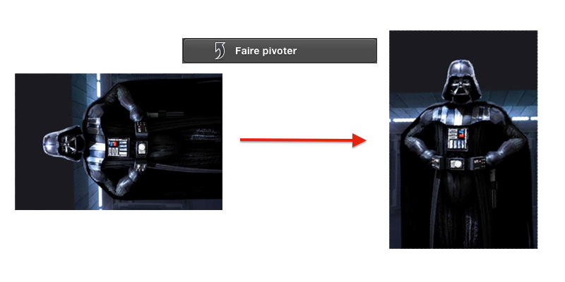Faire pivoter une photo
Cet outil est pratique mais ne permet pas de corriger le problème d'une photo qui ne serait pas tout à fait droite.
Redresser
Il existe pour cela un deuxième outil qui permet de redresser la photo en la faisant tourner d'un petit angle. Dark Vador, pendant ses vacances, a eu un peu de mal à prendre l'étoile de la mort parfaitement droite, il a donc utilisé iPhoto pour la redresser (voir la figure suivante).
Redresser une photo
Vous remarquerez que l'image que j'ai redressée est légèrement plus petite que l'originale. C'est tout à fait normal puisque l'application est obligée de couper les bords de l'image pour garder une forme carrée.
Retoucher
Une autre fonctionnalité toujours très pratique est la retouche rapide. Si sur une photo un petit détail vous dérange, vous pouvez le masquer avec cet outil, pour enlever par exemple un petit bouton sur le visage d'une personne ou faire disparaître quelque chose d'une scène. En sélectionnant la zone à retoucher, le logiciel va automatiquement calculer ce qu'il faut enlever à l'image pour que la retouche paraisse naturelle.
L'outil se présente sous la forme d'un pinceau qu'il faut passer sur la zone à retoucher. Une fois que vous avez passé la zone au pinceau, relâchez le clic et attendez quelques instants pour voir votre résultat apparaître. Pour exemple, je vous laisse regarder la figure suivante.
Retoucher une photo
L'outil pour enlever les yeux rouges marche exactement de la même façon, il suffit de choisir l'option correspondante et de cliquer sur les yeux rouges pour les enlever, c'est encore une fois l'ordinateur qui calcule toutes les retouches à faire pour avoir le meilleur rendu.
Rogner
Un des derniers outils que je vais vous présenter est le recadrage. Comme son nom l'indique, il vous permet de recadrer votre photo pour se concentrer sur l'essentiel. Quand vous prenez une vue très large, vous prenez souvent en photo des éléments extérieurs pas toujours les bienvenus comme d'autres personnes qui viennent gâcher la photo. En recadrant votre photo, vous ferez littéralement disparaître ce que vous ne voulez pas, ainsi que l'illustre la figure suivante.
Rogner une photo
Autres outils
Il existe d'autres outils que je ne vais pas détailler ici car ils sont beaucoup moins intéressants que les précédents. Cependant vous pouvez regarder à quoi ils servent et vous amuser un peu avec pour voir ce que l'on peut obtenir. ;)
Les effets
Vous pouvez également choisir d'appliquer des effets à vos photos pour leur donner un autre style comme l'effet noir et blanc ou sépia. Tous ces effets sont disponibles dans le deuxième onglet qui s'intitule « Effets » (voir la figure suivante).
Ajouter un effet
Ajuster
Le dernier onglet regroupe des outils un peu plus puissants que les précédents mais qui sont beaucoup plus durs à utiliser puisqu'ils jouent directement sur les couleurs de votre photo. On peut s'amuser avec mais pour de la retouche photo simple, ils ne servent pas beaucoup, ce n'est donc pas un problème si vous ne les utilisez pas. :)
Photo Stream est une nouveauté de Mountain Lion pour iPhoto. Un service similaire existait déjà sous ce nom dans les versions précédentes d'iPhoto avec l'introduction d'iCloud dans OS X 10.7.2 (Lion). Comme son nom l'indique Photo Stream est un flux de photos partagé entre vos différents appareils sous iOS ou OS X. Cela vous permet par exemple d'accéder aux photos qui sont stockées sur votre iPhone et à votre iPhone de consulter les photos qui sont sur votre Mac.
Bien sûr vous n'êtes absolument pas obligé d'utiliser ce service et vous pouvez simplement le désactiver dans les préférences d'iPhotos dans l'onglet « Flux de photos » (vous remarquerez au passage que Apple ne distingue pas du tout les deux termes « flux de photos » et « photo stream »).
Préférences Flux de photos
Le flux principal d'iPhoto ne se partage qu'entre les appareils synchronisés avec le même compte iCloud afin que vous soyez le seul à pouvoir consulter ces photos. Vous pouvez d'ailleurs supprimer plusieurs photos du flux sans pour autant complètement désactiver le service en faisant un simple clic-droit sur les photos que vous ne souhaitez pas partager. ;)
Le partage avec d'autres utilisateurs
La nouveauté de ce service est certainement le partage possible d'un flux de photos avec d'autres utilisateurs d'iCloud. Pour partager une ou plusieurs photos via le service Photo Stream, il suffit d'utiliser le bouton partager visible en bas à droite lorsque vous avez sélectionné une photo et de sélectionner le partage via 'Flux de photos', comme indiqué sur la figure suivante.
Listes des services de partage
Vous aurez alors le choix d'ajouter cette image à votre flux principal ou de créer un nouveau flux à partager, c'est cette deuxième option qui nous intéresse dans ce cas précis (voir la figure suivante).
Création d'un flux de partage
On vous demande alors avec quel utilisateur vous souhaitez partager ce flux d'information, il suffit d'entrer le nom d'un utilisateur d'iCloud qui se trouve dans votre répertoire ou l'adresse mail d'un contact qui utilise iCloud. Ce nouveau flux sera alors disponible pour les deux utilisateurs et quand vous ajouterez une nouvelle photo dans ce flux, les deux utilisateurs pourront voir cette photo (voir la figure suivante). Bien que le flux soit partagé, vous êtes le seul à pouvoir ajouter d'autres photos, c'est uniquement votre flux !
Partage d'un flux
iPhoto est une application qui permet de trier facilement vos photographies.
iPhoto permet d'importer des images provenant de vos appareils photos ou directement de votre ordinateur.
iPhoto possède un système d'évènement pour classer vos photos par dates.
iPhoto possède un système d'album pour classer vos photos par thématiques.
iPhoto vous permet de retoucher vos photos.
iPhoto possède une reconnaissance faciale pour savoir qui se trouve sur chaque photo.
iPhoto permet de partager ses photos entre amis grâce à un système de flux.
iMovie est un logiciel de montage vidéo qui s'adresse aux débutants et à ceux qui veulent monter de petits projets artistiques. Apple commercialise un logiciel de montage vidéo pour les professionnels nommé Final Cut Pro X. Après la lecture de ce tutoriel vous pourrez utiliser les fonctionnalités de base d'iMovie et vous créer un petit film avec des effets pour le publier sur la toile ou le partager avec vos amis.
Ce tutoriel n'est pas essentiel pour l'utilisation d'un Mac, cependant il peut être assez pratique notamment dans de petits projets pour vos loisirs, mais aussi bien dans vos études ou dans votre travail. ;)
La première étape pour utiliser iMovie et l'ensemble de ses fonctionnalités est de disposer d'une vidéo sur laquelle nous allons pouvoir travailler. Si vous souhaitez suivre ce chapitre, je pense que vous disposez d'un appareil capable d'enregistrer des vidéos comme un appareil photo numérique ou un téléphone portable par exemple. Nous allons donc importer une vidéo qui se trouve sur une caméra ou un appareil photo dans iMovie. Il faut tout d'abord lancer iMovie comme toutes les autres applications que nous avons lancées auparavant puis brancher votre appareil à l'ordinateur avec l'aide du câble adéquat.
Importer une vidéo à partir d'une caméra ou d'un appareil photo
Une fois votre appareil sous tension et connecté à votre ordinateur, iMovie devrait vous proposer une boîte de dialogue qui vous permettra de choisir les vidéos à importer dans votre bibliothèque iMovie. Vous aurez également à choisir le nom du fichier vidéo que vous allez importer et l’endroit où vous souhaitez qu’il soit enregistré (voir la figure suivante).
Importation depuis une caméra
Une fois que votre sélection est faite, vous n’avez plus qu’à cliquer sur le bouton « Terminé » en bas à droite pour lancer l’importation de vos vidéos ; iMovie va ensuite vous demander dans quel format vous voulez importer vos vidéos. Suivant la qualité de la vidéo qui est importée, les options peuvent changer cependant je vous recommande d’essayer de garder le format d’origine pour profiter au mieux de vos vidéos (voir la figure suivante).
Options d'importation
Vous retrouverez ensuite votre vidéo dans ce que l'on nomme la bibliothèque, qui regroupe toutes les ressources externes à iMovie. On retrouve bien sûr les vidéos mais également la musique et les photos. Pour le moment nous allons nous concentrer principalement sur notre vidéo qui va être la pièce majeure dans la suite de ce chapitre.
Importer une vidéo depuis votre disque dur
Vous pouvez également importer une vidéo qui est déjà présente sur votre ordinateur, celle-ci peut provenir d’un autre support comme un CD ou un DVD par exemple. La manipulation pour importer cette vidéo dans iMovie reste très similaire à la précédente. Il faut pour cela vous rendre dans le menu « Fichier » puis dans l’option « Importer » > « Films ». Il faut ensuite trouver le fichier vidéo qui vous intéresse pour l’importer en choisissant le nom de l’événement pour cette vidéo. Il suffit ensuite de cliquer sur le bouton « Importer » qui se situe en bas à droite, comme indiqué à la figure suivante.
iMovie repose autour de l'idée de projet ; pour chaque projet, vous allez pouvoir associer des vidéos provenant de plusieurs sources (caméscopes, disques durs, DVD), mais également d'autres éléments comme de la musique, des photos et du texte. Une fois que votre projet est terminé vous pouvez demander à iMovie de créer la vidéo finale à partir de tous les éléments de votre projet.
La première étape va donc être de créer notre premier projet sur iMovie. Pour créer un projet sur iMovie, il faut se rendre dans le menu « Fichier » > « Nouveau projet », une fenêtre devrait apparaître vous proposant diverses options concernant votre futur projet.
Nom : le nom de votre projet bien évidemment.
Proportions : vous avez le choix entre 16/9 ou 4/3, de nos jours la plupart des téléviseurs et ordinateurs disposent d’un écran au format 16/9 c’est donc celui-ci que je vous conseille d’utiliser.
Fréquence : Trois choix s’offrent à vous, je vous conseille de garder le choix par défaut, car cela n’a pas beaucoup d’importance.
Thème du projet : comme son nom l’indique, cette option permet de donner un premier style à votre projet en incorporant des images et du texte prédéfinis. Dans mon exemple je ne prendrai pas de thème afin de ne pas trop surcharger mon cours.
Présentation rapide de l'interface
On peut diviser grossièrement l'interface d'iMovie en trois grandes parties. La partie en haut à gauche vous permet de gérer la timeline de votre projet en cours, vous pouvez voir l'ordre de votre montage avec les différents ajouts comme le texte ou l'audio. La partie supérieure droite vous montre l'extrait sélectionné en vidéo, il vous suffit d'appuyer sur la barre d'espace pour lancer la lecture. La partie inférieure comprend votre bibliothèque vidéo, mais aussi la bibliothèque audio ou celle des effets (voir la figure suivante).
Interface d'iMovie
Ajout d’éléments dans le projet
Pour supprimer un élément de votre projet, il faut le sélectionner et faire un clic-droit dessus et choisir dans le menu déroulant « Supprimer la sélection »
De même, pour observer les propriétés d'un élément, il existe un inspecteur qui diffère légèrement selon le type d'élément. Pour afficher cet inspecteur, il suffit de double-cliquer sur un élément ou de cliquer sur le bouton suivant :
Ajouter une vidéo
La première étape est d’ajouter une vidéo au projet, nous allons ensuite inclure une musique de fond ainsi qu’un peu de texte pour rendre notre film un peu plus réaliste. Pour ajouter une vidéo dans notre projet, il faut d’abord sélectionner la séquence qui nous intéresse dans la vidéo (cette séquence peut comprendre la vidéo entière), en déplaçant les bords jaunes vous allez pouvoir sélectionner la taille de votre séquence. Une fois cette sélection faite, il vous suffit de faire glisser la séquence vers la zone du projet en haut à gauche en maintenant le clic-gauche enfoncé, comme c'est indiqué à la figure suivante.
Ajouter un élément au projet
Vous pouvez ajouter ainsi plusieurs morceaux d’une même vidéo, mais en changeant l’ordre par exemple. La vidéo originale et la vidéo du projet sont entièrement séparées.
Ajouter de la musique
Afin d'agrémenter notre projet, nous allons ajouter un peu de musique de fond. Il se peut que votre vidéo comporte déjà une piste audio, qui peut-être intéressante à garder. Cependant s'il existe un bruit de fond sur votre vidéo que vous souhaitez faire disparaître, la méthode pour l'enlever est très simple.
L'inspecteur d'élément
En double-cliquant sur une séquence de votre projet, vous pouvez éditer certains paramètres relatifs à votre sélection. En double-cliquant sur ma séquence vidéo, une fenêtre possédant trois onglets apparaît avec notamment l'onglet « Audio ». Vous pouvez directement y régler le volume de la piste audio de la vidéo ; cela n'affectera pas une piste audio que vous ajouterez ultérieurement.
Comme vous le savez, il existe une connexion très forte entre les différentes applications disponibles sur Mac. En cliquant sur l'icône Musique à droite d'iMovie, vous devriez voir apparaître un nouveau menu vous proposant un ensemble de morceaux de votre bibliothèque iTunes. Pour ajouter un ou plusieurs morceaux de votre bibliothèque iTunes dans votre projet, il suffit encore une fois de faire glisser le ou les fichiers qui vous intéressent, comme c'est indiqué sur la figure suivante.
Bibliothèque de son
Vous pouvez alors augmenter ou diminuer la durée de la piste audio en double-cliquant dessus pour y faire apparaître les propriétés, vous pourrez diminuer ou augmenter le volume de la piste audio et créer des effets de fondu en début et en fin de séquence.
Inspecteur pour une piste audio
Vous pouvez bien sûr déplacer la piste audio dans votre projet en la faisant simplement glisser à l'aide de votre souris. ;)
Votre projet
Ajouter du texte
La technique pour ajouter du texte dans votre montage est exactement la même que pour la vidéo et l'audio. Il vous suffit de vous rendre dans l'option « Titres » de votre bibliothèque. Il vous suffit ensuite de faire glisser le type de texte vers votre projet. Cependant, la manière dont vous placerez le texte aura une influence sur son aspect.
Bibliothèque de titres
Si vous faites glisser le texte sur un morceau de la vidéo de votre projet, le texte va s'incruster sur la vidéo au-dessus de celle-ci en même temps que la vidéo défile.
Si vous faites glisser le texte à l'une des extrémités de la vidéo (marqué par un trait vert), iMovie va vous proposer un fond et va créer une nouvelle séquence vidéo avec votre texte, cela permet de bien séparer vidéo et texte et de ne pas masquer une partie de la vidéo.
Le reste est identique, vous pouvez choisir la durée d'un titre en double-cliquant dessus et ajouter des effets de fondu en début ou en fin de séquence.
L'inspecteur pour un titre
Pour modifier le contenu de votre titre, c'est-à-dire le texte qui sera affiché, il vous suffit de sélectionner la séquence contenant le titre et de modifier celui-ci directement dans la fenêtre d'aperçu.
Votre projet avec du son et un titre
Par abus de langage, iMovie mélange les titres, légendes et génériques dans un même panier. Vous pouvez décider d'ajouter un générique directement sur une vidéo par exemple.
Ajouter des transitions
La dernière étape pour réaliser un bon projet est d'ajouter de manière subtile et en quantité modérée, des transitions. Les transitions sont des effets qui permettent de passer en douceur d'une scène à l'autre, surtout lorsque celles-ci sont très différentes l'une de l'autre. L'ajout d'une transition ne diffère absolument pas du reste et il vous faudra en faire glisser une, depuis la bibliothèque des transitions, vers l'emplacement souhaité dans votre projet. Il faut savoir cependant qu'à la différence d'un fichier audio, une transition se place uniquement entre deux séquences vidéos.
Bibliothèque de transitions
En regardant les propriétés de votre transition, vous pouvez modifier la durée de celle-ci, selon vos envies.
Comme je l'ai expliqué dans ce chapitre, lorsque vous modifiez votre projet, iMovie se charge de faire des liens virtuels entre les différents fichiers de votre bibliothèque, mais il ne créé pas directement un fichier vidéo. Ce choix est justifié, car s'il fallait créer en continu une vidéo et modifier celle-ci à chaque changement d'un élément, l'ordinateur ne pourrait pas suivre : les fichiers manipulés seraient bien trop lourds.
Quand vous enregistrez votre projet, iMovie sauvegarde uniquement l'ensemble de ces liens, mais ne créé pas de vidéo comme celle que vous avez l'habitude de regarder. Il faut comprendre cette subtile différence entre le fichier projet et la vidéo finale. Notre but dans cette fin de chapitre va être de créer la vidéo finale à partir de notre projet. ;)
Finaliser
Pour finir et créer la vidéo finale, iMovie va se charger de créer tous les rendus possible de votre vidéo. En clair, l'application va stocker dans un coin l'ensemble des fichiers vidéos que l'on peut créer à partir de votre projet, d'un rendu en basse qualité jusqu'à la meilleure qualité disponible avec votre projet. Cette opération va permettre d'effectuer beaucoup plus rapidement l'exportation de votre vidéo sur votre ordinateur ou sur divers réseaux sociaux.
Finalisation d'un projet
Pour réaliser cette action, il vous suffit de cliquer sur l'option « Finaliser le projet » dans le menu « Fichier ». Suivant la taille de votre projet et la qualité des vidéos, cette opération peut durer un certain temps, ne vous inquiétez donc pas si vous devez atteindre plusieurs dizaines de minutes (voir quelques heures si votre vidéo dépasse une heure).
Partager
La dernière étape va être de partager votre vidéo avec vos amis ou vos proches. Pour cela plusieurs options sont disponibles : vous pouvez choisir d'exporter votre vidéo sur votre ordinateur, ou vous pouvez directement la partager sur des réseaux sociaux comme Youtube ou Facebook.
Exportation vers votre ordinateur
L'exportation vers votre ordinateur est une étape extrêmement simple, il suffit de vous rendre dans le menu « Partage » et de choisir l'option « Exporter le film ». Une fenêtre devrait apparaître vous proposant la qualité d'image que vous souhaitez.
Exporter une vidéo vers votre disque dur
Je recommande toujours d'utiliser la meilleure définition possible pour une vidéo afin de ne jamais pâtir d'une mauvaise qualité quand vous regardez celle-ci. Bien-sûr ce n'est pas le seul impératif comme le résume le tableau ci-dessus, qui vous montre quel format choisir en fonction du périphérique sur lequel vous souhaitez utiliser votre vidéo plus tard.
Il faut également savoir que plus la qualité de la vidéo est importante, plus sa taille sur le disque est importante. Un film avec une faible résolution dépasse rarement 1 Go de mémoire sur votre disque dur, alors qu'un film provenant d'un Blue-Ray peut allègrement dépasser les 20 Go de nos jours.
Une fois que vous aurez cliqué sur le bouton « Exporter » et si vous avez effectué la finalisation du projet, votre fichier devrait se trouver à l'emplacement que vous avez indiqué au-dessus. Vous pouvez alors visionner cette vidéo avec un logiciel approprié comme Quick Time.
Exporter vers un réseau social : Facebook
Si vous n'êtes pas familier du réseau social Facebook, vous pouvez directement sauter cette étape qui ne présente au final que peu d'intérêt. Pour les autres, il vous suffit de cliquer sur l'option « Facebook » dans le menu « Partage ». Vous devriez tomber sur une fenêtre semblable à celle-ci.
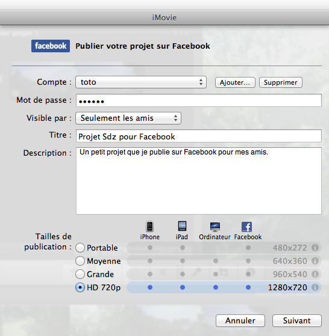Exporter une vidéo vers Facebook
La procédure est exactement la même si vous décidez de publier cette vidéo sur Youtube et les mêmes règles s'appliquent sur Youtube et de manière générale sur internet.
Voilà vous savez maintenant comment exporter votre premier projet et le partager avec vos proches de toutes les manières possibles.
iMovie est une application de montage vidéo simple pour OS X.
iMovie permet d'importer des vidéos directement depuis votre caméra ou depuis le disque dur de votre ordinateur.
L'interface se décompose en trois partie : Projet, Bibliothèque et Aperçu.
iMovie permet d'exporter vos vidéos sur votre disque dur dans différentes définitions.
iMovie permet d'exporter vos vidéos sur différentes plateformes comme Youtube ou Facebook.
iWork regroupe trois applications pour Ma, formant ainsi une suite bureautique. Les trois applications qui la composent sont, 'Pages' un logiciel de traitement de texte, 'Numbers' un tableur et 'Keynote' une application pour faire des présentations. Ces trois applications sont développés par Apple.
Celles-ci sont payantes et disponibles sur le Mac App Store pour le prix à l'unité de 17,99 Euros par application. Je ne vous incite nullement à les acheter, il existe des équivalents libres et gratuits tout aussi efficaces comme Libre Office. Je choisis cette solution car elle présente un juste milieu entre Office pour Mac (119 Euros) et les logiciels gratuits, elle est de plus totalement adaptée au Mac et gère le mode plein écran par exemple.
Je supposerai par la suite que vous disposez des trois logiciels. Si ce n'est pas le cas et que vous voulez utiliser une autre application, je vous conseille de regarder les tutoriels du Site du Zéro, certains pourraient vous intéresser. ;)
Pages est un logiciel de traitement de texte : il va vous permettre de taper du texte dans des documents, de les mettre en forme pour pouvoir ensuite les utiliser ou les diffuser pour vos études, votre travail ou bien pour vous-même. Ce court chapitre d'introduction va vous présenter quelques fonctionnalités de base du logiciel. Vous apprendrez notamment à mettre en forme vos documents et à les enregistrer. Nous n'irons pas beaucoup plus loin dans ce chapitre, car il faut que vous vous entraîniez un peu à fouiller par vous-même dans les menus et à découvrir certaines fonctionnalités intéressantes !
Quand vous ouvrez l'application Pages, vous découvrez une fenêtre un peu étrange qui vous propose d'ouvrir un document sur iCloud, nous en reparlerons un peu après, mais si vous avez lu la partie précédente vous savez que le service iCloud permet également d'enregistrer des documents pour certaines applications directement dans les nuages ce qui vous permet de les retrouver sur tous vos appareils Apple. Pour créer un nouveau document, il vous suffit de cliquer sur le bouton « Nouveau document » en bas à gauche, comme indiqué à la figure suivante.
Créer un nouveau document dans Pages
Pages vous propose ensuite tout un ensemble de modèles pour créer votre premier document. Nous cherchons simplement à créer un document vierge pour apprendre à utiliser les outils de base de l'application Pages, pour cela nous allons choisir le modèle : « Vierge ».
Présentation de l'interface
On peut décomposer sommairement l'interface de Pages en trois grandes parties, que je vais vous présenter sommairement tout de suite.
L'interface de Pages
C'est la zone où vous allez rédiger votre document et où apparaitra votre texte avec les mises en forme que vous lui appliquerez.
C'est la zone de mise en forme de Pages, c'est grâce à ces options que vous allez pouvoir entre autres changer la police.
C'est la zone des options, qui vous permet notamment d'insérer d'autres types de données mais également d'afficher des informations supplémentaires.
Dans ce chapitre nous allons principalement utiliser les deux premières zones pour réaliser les actions de base pour notre document, mais vous pouvez tout à fait tester toutes les options disponibles dans la troisième zone.
Mise en forme de notre document
Mise en forme générale
La première étape pour mettre en forme un document est d'avoir un texte pour appliquer cette mise en forme. Je vais donc vous demander de rédiger une petite phrase dans Pages à l'aide de votre clavier. Nous allons mettre ensuite un mot de cette phrase en gras. Pour mettre en forme un mot (ou plusieurs), sélectionnez celui-ci avec l'aide de la souris (gardez le clic gauche enfoncé) puis cliquez sur le bouton « B » (voir la figure suivante).
Mise en forme d'un document
Nous venons d'utiliser l'une des fonctionnalités de la deuxième zone, la mise en gras. Comme vous pouvez le voir, il en existe un très grand nombre, je vais vous présenter les fonctionnalités les plus importantes.
Les fonctionnalités principales
Les styles
Juste au-dessus, je vous ai présenté rapidement les différentes mises en forme possible dont tout à gauche l'option « Style ». L'option style est un peu particulière : comme son nom l'indique elle permet de gérer différents styles pour vos documents. Concrètement un style est une mise en forme particulière pour un texte, par exemple : Police : Calibri, Taille : 14, Couleur : Noir, Gras, Souligné. Cela permet de mettre en forme rapidement du texte sans avoir à chaque fois à effectuer toutes les manipulations différentes.
Mise en forme avec des styles
Pour créer votre propre style, il vous suffit de sélectionner un morceau de texte avec la mise en forme souhaité et de faire un clic-droit dessus et de cliquer sur l'option « Créer un style de paragraphe à partir de la sélection ». On vous demandera ensuite un nom pour ce style et il sera accessible avec les autres styles.
Enregistrer son document
Comme je l'ai dit rapidement en introduction, Pages a la possibilité d'enregistrer vos documents directement sur iCloud c'est-à-dire en ligne sur la toile. Heureusement vous pouvez encore enregistrer vos documents sur votre ordinateur comme vous l'avez toujours fait ! ;)
Enregistrement sur votre ordinateur
Pour enregistrer un document, il vous suffit de cliquer sur l'option « Enregistrer » dans le menu « Fichier » ou d'utiliser directement le raccourci clavier : Cmd ⌘ + S.
Une fenêtre devrait apparaître vous proposant de choisir un nom de fichier pour votre document ainsi qu'un emplacement pour l'enregistrer. Par défaut, dans la dernière version de Pages, l'enregistrement se fait sur iCloud. Utilisez le menu déroulant pour sélectionner un emplacement sur votre disque dur. Pour afficher plus de possibilités et naviguer librement dans votre arborescence, je vous conseille de cliquer sur la petite flèche à droite (
) de l'emplacement.
Enregistrement sur votre disque dur
L'extension de fichier qui correspond à un document Pages est tout simplement .pages. Cependant ce format n'est lisible que par l'application Pages qui n'existe que sous Mac. Afin de pouvoir partager ce document avec un ami qui possède Windows, je vous conseille de cocher l'option en bas « Enregistrer la copie comme : Document Word ».
Vous pourrez retrouver votre document à l'emplacement que vous avez choisi ainsi qu'éventuellement la copie au format (.doc) de votre fichier pour que celui-ci soit lisible par un ordinateur tournant sous Windows (avec Office).
Enregistrer sur iCloud
L'enregistrement sur iCloud se déroule exactement de la même façon que précédemment. La seule différence est que ce fichier est stocké sur les serveurs d'Apple quelque part dans le monde et que vous ne pouvez y accéder que si vous possédez une connexion à Internet. Vous ne pouvez pas obtenir l'arborescence d'iCloud, comme vous le feriez avec votre ordinateur, pour ouvrir votre document, il faut d'abord lancer Pages puis sélectionner celui-ci dans la liste des documents disponibles sur iCloud.
Enregistrement sur iCloud
L'avantage d'iCloud, c'est que votre document est disponible sur tous les Mac où vous êtes connecté avec votre compte iCloud mais également sur tous les appareils Apple (iPod Touch, iPhone et iPad) qui possèdent l'application Pages.
Le deuxième logiciel que je vais vous présenter se nomme Numbers : c'est un tableur.
Qu'est-ce qu'un tableur ?
Pour faire simple, un tableur est un tableau géant composé d'un très grand nombre de cellules. Ces cellules vont nous permettre d'effectuer des calculs et d'autres opérations arithmétiques. Pour lancer Numbers, je ne referai pas la même explication que pour Pages, je suppose que vous avez lu la partie précédente et je vais donc directement vous présenter l'interface générale.
Présentation de l'interface
L'interface ressemble énormément à l'interface de Pages. Normal les deux logiciels font partie de la même suite bureautique: iWork ! Je ne vais donc vous présenter que les fonctionnalités essentielles pour l'utilisation de ce tableur. Une cellule possède des coordonnées, ce qui permet de l'identifier par rapport aux autres cellules. Pour connaître les coordonnées, il suffit de regarder où se trouve la cellule par rapport à l'intersection d'une ligne et d'une colonne. Par exemple la cellule que j'ai entourée sur la figure suivante a pour nom C4, car elle est à l'intersection de la colonne C et de la ligne 4.
L'interface de Numbers
on retrouve notamment beaucoup d'options de mise en forme dans notre tableur, cela permet de rendre un document joli, mais ce n'est pas le but premier d'un tableur, un tableur est utile pour calculer des expressions avec l'aide de données et grâce à l'utilisation de fonctions.
Calculs élémentaires
Je vais supposer que vous n'entrez que des nombres dans les cellules. Comme vous devez le savoir on peut additionner deux nombres (1+2 = 3) mais pas deux phrases (banane + poire = ?) ça n'a aucun sens ! Nous allons donc voir comment effectuer des calculs simples avec notre tableur, puis nous passerons à quelques éléments un peu plus complexes.
Effectuer une addition
Prenons un exemple très simple pour commencer et supposons que nous souhaitons additionner les valeurs de deux cellules dans notre tableur. Pour faire simple, j'ai donné à la première cellule (B2) la valeur 1 et pour la deuxième cellule (C2) la valeur 2. Nous souhaitons afficher le résultat de la somme de ces deux cellules dans la cellule suivante c'est-à-dire la cellule D2.
Effectuer une addition : Étape 1
Pour effectuer un calcul quelconque dans tout tableur (Numbers, Excel),il faut d'abord sélectionner une cellule avec la souris puis taper le contenu directement dans la cellule où bien dans la barre au dessus du tableau des cellules. Toute expression commence par le signe « = » obligatoirement, sinon le tableur ne peut pas comprendre qu'on lui demande un calcul et va alors simplement afficher ce qu'on écrit dans la cellule. Quand vous entrez le signe « = », vous remarquez que l'interface change légèrement pour passer en mode calcul.
L'avantage d'un tableur est qu'il sait lire le contenu d'une cellule si vous lui donnez son nom, c'est-à-dire qu'en entrant l'expression « = B2 + C2 », le tableur va savoir que vous voulez ajouter la valeur de la cellule B2 et C2 et afficher le résultat. Il y a même une façon encore plus simple, qui consiste une fois en mode calcul, de cliquer sur les cellules qui vous intéressent, leur nom s'ajoutera automatiquement dans l'expression.
Effectuer une addition : Étape 2
En validant votre choix, le calcul s'effectue directement et s'affiche dans la cellule à la place de l'expression. Cette expression est toujours visible dans le contenu de la cellule dans la barre au-dessus.
Effectuer une addition : Étape 3
Les quatre opérations classiques sont possibles dans le tableur Numbers (+ pour l'addition, - pour la soustraction, * pour la multiplication, / pour la division), ne vous faites pas avoir notamment par la multiplication avec le symbole x qui est pour le tableur qu'une simple lettre.
Les fonctions
Il existe également des fonctions prédéfinies dans Numbers qui permettent de calculer des choses un peu plus compliquées qu'une simple addition ou multiplication. Comme en mathématiques ou en informatique, une fonction prend un ou plusieurs paramètres en entrée et ressort un nombre en sortie. Pour utiliser ces fonctions, il va falloir lire dans un premier temps la syntaxe relative à la fonction qui nous intéresse.
Prenons un exemple simple : je dispose d'une colonne comportant 20 cellules et dont je souhaite obtenir la somme totale.
Une liste à sommer
Facile, on utilise la technique d'addition que tu as montré juste au dessus !
Nous allons plutôt utiliser la fonction SOMME qui va permettre d'additionner plusieurs cellules entre-elles. À la différence de l'addition que nous avons vue au-dessus, cette fonction SOMME permet d'additionner très facilement plusieurs centaines de lignes, sans avoir à entrer une par une chaque cellule à additionner. Pour ajouter une fonction il suffit de cliquer sur le petit bouton fonction (
) en haut de votre fenêtre lorsque vous avez sélectionnée une cellule. Nous allons rechercher la fonction SOMME grâce à l'outil de recherche, vous devriez après la recherche trouver une page comme celle-ci (voir la figure suivante).
Liste des fonctions disponibles
L'explication n'est pas très claire je vous l'accorde et je vous conseille de regarder les exemples en bas de page pour mieux comprendre cette fonction. Je vais moi-même vous donner la syntaxe que l'on attend que vous utilisiez pour réussir le petit exercice que j'ai posé au-dessus.
On souhaite additionner les cellules de B2 à B21. Pour indiquer que nous souhaitons une addition de toutes les cellules comprises entre deux cellules (entre B2 et B21 pour nous), on saisit les deux noms des cellules extrêmes séparés par le symbole « : ». Dans notre exemple la syntaxe serait alors : « =SOMME(B2:B21) »
Utilisation de la fonction SOMME
Petit bonus
Une des fonctionnalités très pratiques sur un tableur et que l'on retrouve sur Excel notamment est la duplication de cellule. Concrètement, le tableur vous permet de copier le contenu d'une cellule (ou une formule) sur les cellules voisines très rapidement. Reprenons pour illustrer ceci, l'exemple précédent en y rajoutant quelques petites choses (voir la figure suivante).
Numbers est intelligent !
Pour dupliquer une cellule, il suffit de sélectionner celle-ci et de faire glisser la partie inférieure-gauche dans la direction où vous souhaitez dupliquer le contenu. Il suffit de relâcher le clic lorsque vous avez recopié le bon nombre de cellule.
Il suffit de faire glisser les cellules ...
Voilà vous avez dupliqué vos premières cellules ! Cet outil est très pratique lorsqu'on manipule de très grand tableaux avec des formules à répétition. J'espère que vous avez pu un peu mieux appréhender Numbers avec ces quelques exemples et que vous avez pu apercevoir toutes les possibilités que proposent Numbers ou Excel pour vos projets. ;)
La dernière application de la suite iWork se nomme Keynote. Ce nom vous rappelle peut-être quelque chose ? Bien-sûr, c'est le nom que l'on donne aux présentations des nouveaux produits Apple ! Ce logiciel, vous vous en doutez, permet de faire des présentations sous forme de diaporama. Il est souvent utilisé de manière professionnelle pour présenter un contenu à une assemblée de personne. On utilise beaucoup son homologue de Office : PowerPoint pour faire tout un tas de présentations, que ce soit en entreprise ou dans les écoles.
Présentation de l'interface
On retrouve beaucoup d'éléments communs entre les différentes applications de la suite iWork, avec notamment la barre de mise en forme et la barre des options. On retrouve aussi, comme sur Numbers, une barre latérale, ainsi que l'affichage principal qui montre la diapositive sélectionné.
L'interface de Keynote
Les possibilités de mise en forme d'une présentation sont tellement grandes que je pourrais y passer des heures. Pour éviter cela je ne ferais qu'un rapide tour des fonctionnalités les plus basiques.
L'importance de la bordure
Même lorsque vous ouvrez le plus simple des fichiers Keynote, vous trouverez toujours deux éléments dans ceux-ci. Ce sont deux zones de texte que vous allez pouvoir modifier par la suite pour y écrire ce que vous souhaitez.
La première diapositive
Vous remarquerez que les deux zones de texte sont encadrées des pointillés noirs. Si vous saisissez du texte, cette bordure disparaît. Si vous sélectionnez un élément, vous verrez de nouveau apparaître cette bordure autour de l'élément. En fait, c'est grâce à cette bordure que vous allez pouvoir manipuler les éléments : les déplacer, changer leur taille ou leur orientation. Bien sûr tous les éléments n'ont pas les mêmes possibilités de mouvement, mais la plupart ont des choses en commun. Quand vous sélectionnez par exemple la zone de texte du haut, vous verrez apparaître une bordure (voir la figure suivante).
Ajout de texte
Ajouter des éléments
Avant de pouvoir modifier un élément, il faut d'abord avoir pu ajouter des élément dans votre diapositive ! Vous allez voir, c'est quelque chose de très simple.
Insérer du texte
Pour insérer une nouvelle zone de texte, il suffit de cliquer sur l'icône située en haut dans la barre des options :
Ajouter une zone de texte
Une zone de texte apparaît au milieu de votre fenêtre, vous pouvez alors la déplacer librement sur toute la surface de la diapositive. Cependant, vous ne pouvez la redimensionner qu'en largeur ; la zone s'adapte automatiquement en hauteur suivant la longueur de votre texte.
Ajouter une forme
Vous pouvez ajouter facilement une forme grâce à l'outil Figures :
Ajouter des figures
Vous avez le choix entre un très grand nombre de formes et figures diverses, que vous pouvez redimensionner et déplacer comme vous le souhaitez, un outil très pratique pour désigner des points particuliers sur une image par exemple avec l'aide de la figure flèche !
Ajouter une image
Vous pouvez également ajouter une de vos images directement sur une diapositive, pour réaliser cette opération vous avez le choix des armes ! Vous pouvez soit utiliser l'intégration des logiciels Apple dans Keynote et utiliser l'option « Données Multimédia » :
Sinon, vous pouvez faire glisser directement une image d'un dossier sur votre diaporama, cela aura effet de l'ajouter automatiquement.
Enfin, dans le menu « Insertion », vous sélectionnez l'option « Choisir ...», et il ne vous reste plus qu'à trouver votre image dans l'arborescence de votre ordinateur.
Manipulation des éléments
Déplacer des éléments
L'action la plus simple consiste à déplacer un élément sur la diapositive. En théorie, vous pouvez même le déplacer en dehors du cadre de celle-ci, mais l'intérêt est moindre ! ^^ Pour déplacer un élément, il vous suffit de le sélectionner puis de maintenir le clic-gauche enfoncé tout en déplaçant l'élément comme pour un glisser-déposer. Vous pourrez voir apparaître des lignes jaunes qui aident à bien cadrer vos éléments par rapport à la structure de la page et des autres éléments.
Agrandir et rétrécir un élément
Quand vous sélectionnez un élément, vous pouvez voir apparaître de petits carrés blancs sur les coins de la bordure ainsi qu'au milieu de chaque côté. Ces petits carrés permettent de modifier la taille de votre élément, il suffit de cliquer dessus et de déplacer votre souris de façon à agrandir ou rétrécir l'élément. Pour conserver les proportions, il faut utiliser les carrés situés aux coins de l'image, sinon cette dernière sera déformée.
Effectuer une rotation
Vous ne pouvez pas effectuer une rotation sur tous les éléments ; par exemple, il est impossible de le faire sur une zone de texte. Cependant, cela marche très bien avec une image, il vous suffit de maintenir la touche Cmd ⌘ enfoncée tout en utilisant les carrés blancs que nous avons vus au dessus pour faire tourner la forme.
Ajouter une diapositive
Nous avons vu comment ajouter des éléments dans une diapositive, comment les modifier, les déplacer, mais avec une seule diapositive nous n'allons pas aller bien loin, il va donc falloir en ajouter quelques une pour arriver à un diaporama concluant.
La première méthode pour ajouter une diapositive est d'utiliser le bouton « Nouveau » dans la barre des options :
La deuxième méthode consiste à utiliser la barre des menus, dans « Diapositive » l'option « Nouvelle diapositive ». La troisième méthode consiste à utiliser le raccourci clavier qui correspond à l'ajout d'une nouvelle diapositive : Cmd ⌘ + M
Une nouvelle diapositive apparaît dans la liste de vos diapositives avec les mêmes éléments vides que la première.
Liste des diapositives
Ajouter une transition
Comme dans iMovie, vous avez la possibilité d'effectuer des transitions entre les différentes diapositives de votre diaporama. Une transition s'ajoute sur la diapositive précédent la transition. pour ajouter cette transition, il faut sélectionner la diapositive qui nous intéresse puis ouvrir l'inspecteur d'élément, vous pouvez faire cela grâce au raccourci clavier correspondant : Alt + Cmd ⌘ + I
Vous pouvez également utiliser le bouton « Inspecteur » qui se trouve dans la barre des options.
Dans cet inspecteur, c'est le deuxième onglet qui nous intéresse puisqu'il gère ce qui concerne la diapositive et plus précisément les transitions. Dans cet onglet, vous pouvez choisir la transition que vous souhaitez entre vos deux diapositives, le choix est assez large !
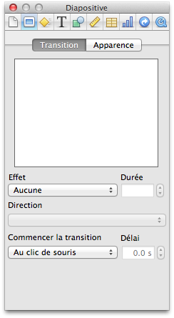L'inspecteur dans Keynote
Lancer le diaporama
Le but final de notre présentation est de pouvoir en faire un diaporama qui sera projeté devant vos amis ou collègues. La fonction diaporama vous permet de visualiser votre présentation en plein écran, ce qui est plus élégant. Pour lancer votre diaporama, vous pouvez utiliser le bouton « Lecture » à gauche de la barre des options :
Lancer la lecture
iWork est une suite logicielle qui comprend trois applications : Pages, Numbers et Keynote.
Pages est une application de traitement de texte et de mise en forme très complète.
Numbers est une application que l'on nomme tableur et qui permet notamment d'effectuer des calculs via des tableaux.
Keynote est une application qui permet de faire des présentations sous forme de diaporamas.
Les trois applications sont indépendantes, vous pouvez donc n'en achetez qu'une des trois.
Celles-ci sont cependant très bien intégrées avec les autres applications d'OS X Mountain Lion.
Cette partie se veut un peu plus technique afin de toucher des utilisateurs qui souhaitent aller plus loin dans la compréhension du fonctionnement de leur ordinateur. En plus d'introduire des notions théoriques nouvelles sur le fonctionnement de votre ordinateur et des disques durs vous apprendrez notamment à partitionner votre disque dur, cela revient concrètement à séparer l'espace de stockage de votre disque en plusieurs petits espaces afin de pouvoir utiliser chaque espace de manière indépendante.
Pour réduire au maximum les risques de pertes de données, je ferai l'ensemble des manipulation sur une clef usb et je vous conseille vivement de faire de même mais ce n'est pas non plus une obligation.
Je le répéterai par la suite mais partitionner un disque, quel qu'il soit, comporte des risques pour vos données. Faites donc toujours attention à ce que vous partitionnez !
Avant de pouvoir parler réellement du partitionnement, il faut s’intéresser à la structure d’un disque dur et comment celui-ci fonctionne.
Votre Mac est probablement doté d’un disque dur à plateau classique comme on trouve dans la plupart des ordinateurs. Seul les MacBook Air et certains Mac doté d’un SSD fonctionnent légèrement différemment. Même si le début de ce chapitre ne les concerne pas au sens purement technique, la suite, qui traite du partitionnement, s’applique à tous les types de disques durs.
Qu’est-ce qu’un disque dur concrètement ?
Il est relativement difficile de voir l’intérieur d’un Mac et encore plus d’accéder au disque dur ; cependant vous en avez sûrement déjà chez un ami ou dans votre PC. De l’extérieur un disque dur ressemble à une grosse boîte.
Un disque dur vu de l'extérieur
C’est la seule chose que vous pouvez voir d’un disque dur. Il est très difficile d’en ouvrir et c’est très vivement recommandé de ne jamais le faire car un disque dur est un matériel de haute technologie et de haute précision, la moindre bêtise et celui-ci ne marchera plus jamais.
Mais à l’intérieur comment ça marche ?
Pour faire simple un disque dur est un lecteur CD mais qui au lieu de lire un simple CD, lit en même temps plusieurs plateaux (les CD) qui sont des disques magnétiques. Quand vous enregistrez un fichier sur votre disque, le lecteur va enregistrer l’information sur ces disques magnétiques.
L’avantage de ces disques par rapport à un CD classique est qu’il est très facile et très rapide d’écrire ou d’effacer quelque chose dessus contrairement à un CD classique.
Un disque dur à l'intérieur
On voit d’ailleurs très bien sur l’image les 4 plateaux qui constituent le disque dur ainsi que la tête de lecture qui se charge de lire, d’écrire et d’effacer les données sur les plateaux.
Les partitions
Maintenant que vous avez une petite idée concrète de ce qu’est un disque dur au niveau matériel, il faut s’intéresser à la partie abstraite, qui n’est visible que sur l’ordinateur. L’idée des partitions comme le nom l’indique est de partager votre disque dur en plusieurs petits morceaux.
Sur votre bureau vous devez trouver normalement un disque nommé « Macintosh HD » qui représente votre disque dur. Macintosh HD est une partition de votre disque dur, elle est unique donc elle englobe l’ensemble du disque.
Schéma des partitions
Votre ordinateur ne reconnaît pas un disque dur au sens physique mais les partitions qui le composent. En clair, si votre disque dur est composé de deux partitions, votre ordinateur verra deux disques séparés qui ne semblent avoir aucun lien. Et pourtant c’est le même disque physique !
Bon c’est bien gentil mais à quoi ça sert ?
Pourquoi partitionner ?
Maintenant que vous vous êtes fait une petite idée de comment fonctionne un disque dur et les partitions, il va bien falloir vous expliquer pourquoi il est intéressant de partitionner un disque dur, on ne partitionne pas un disque juste pour le plaisir. ;)
Installer plusieurs systèmes d’exploitations
Mac OS X est un système d’exploitation au même titre que Windows 7 ou GNU/Linux, nous en avons un peu parlé dans la première partie.
Un système d’exploitation pour bien fonctionner a besoin d’un disque dur à lui, ou plutôt, pour être précis, d’une partition propre. Comme votre ordinateur ne dispose que d’un seul disque, vous ne pouvez pas installer deux systèmes d’exploitations : il va donc falloir partitionner votre disque si vous voulez installer un deuxième système d’exploitation.
Nous reviendrons sur l’installation d’un deuxième système d’exploitation un peu plus tard.
Séparer plusieurs types de données
Il arrive fréquemment que des personnes souhaitent séparer sur un même disque les données du système et celles de l’utilisateur. Ce n’est pas quelque chose de très recommandé sur Mac car le système d’exploitation n’est pas fait pour fonctionner ainsi.
Mais c’est une pratique plus courante sous Windows et GNU/Linux pour éviter de perdre toutes les données de l’utilisateur lors d’une mauvaise manipulation avec le système d’exploitation.
Il peut être intéressant de séparer un disque lorsqu'on veut créer un disque de sauvegarde. C'est un cas que nous verrons dans un chapitre suivant. On attribue un disque à la sauvegarde et celle-ci le remplit entièrement. Pour éviter de remplir un disque entier, il est intéressant de le partitionner pour n’en donner qu’une partie au logiciel et garder l’autre pour y stocker d’autres types de données.
Est-ce que partitionner apporte plus de sécurité ?
Oui et non. Oui car si votre système d’exploitation rendait l’âme, il serait plus facile de tout réinstaller quand les données et le système d’exploitation sont séparés. Cependant cela ne prévient que contre les pannes logicielles mais pas contre les pannes matérielles.
Les formats ou systèmes de fichiers
Il existe un très grand nombre de systèmes de fichiers pour un disque dur. Chaque système de fichiers de données est plus adapté à un système d’exploitation. Certains sont lisibles par l’ensemble des OS mais d’autres ne peuvent être que lus (impossible de modifier un fichier) et certains même ne sont pas lisibles sur un autre système d’exploitation.
Format Mac
Le système de fichiers du disque dur principal de votre Mac est le HFS+ qui est un format spécifique à Mac et à Apple. Il porte la dénomination Mac OS étendu sur votre ordinateur.
Ce format permet l’installation de Mac OS X et le stockage de données à partir d’un Mac ou d’un ordinateur avec GNU/Linux, mais il n’est pas lisible par un ordinateur sous Windows.
Format Windows
L’autre grand système d’exploitation, Windows, utilise ses propres systèmes de fichiers. On en dénombre plusieurs qui sont apparus au cours du temps, certains commencent à devenir obsolètes.
- Le FAT 32 qui porte sous Mac la dénomination FAT est un vieux système de fichiers encore utilisé sur de nombreux supports électroniques. Il est lisible par tous les systèmes d’exploitations mais la taille maximum de chacun des fichiers ne peut pas dépasser 4 Go.
- Le FAT 64 qui porte la dénomination ExFat est un système de fichiers beaucoup plus récent qui porte les anciennes limites du FAT 32 bien au-delà de ce qui existe aujourd’hui. Il est également lisible par tous les systèmes d’exploitations.
- Le NTFS qui porte le nom de système de fichier Windows NT, qui est le système de fichiers pour les disques durs où Windows est installé. Il y a une limite de taille très grande (16 To) mais ce format ne peut être que lu par OS X et on ne peut écrire dessus qu'avec des applications particulières. Ce format est cependant parfaitement reconnu sous GNU/Linux.
Je viens de vous présenter rapidement et de manière synthétique l’ensemble des formats que vous retrouverez par la suite dans le tutoriel. D’ailleurs vous allez tout de suite en entendre parler tout de suite : nous allons partitionner notre premier disque !
Maintenant que vous avez une petite base théorique sur le fonctionnement du partitionnement et des disques durs, nous allons pouvoir passer à la pratique. Effectuer un partitionnement sur votre disque dur principal comporte des risques, c'est pour cela que nous ferons nos premiers essais sur une clef usb. Vous pouvez utiliser tout autre appareil de stockage pour suivre cette partie, que ce soit un disque dur externe ou votre disque dur système.
Le but de cette manipulation va être de passer d'une clef usb contenant une unique partition de 8 Go à une partition de 6 Go et une de 2 Go.
Notre clef usb Avant (à gauche) et Après (à droite)
L'utilitaire de disque
L'utilitaire de disque est une application présente sur votre ordinateur dès son installation et qui va nous permettre de faire plusieurs opérations sur nos espaces de stockage (disques durs, clefs usb). Cela reste une application classique et vous pouvez l'ouvrir en utilisant Spotlight comme d'habitude. ;)
L'utilitaire de disques
Dans la barre latérale on retrouve l'ensemble des périphériques de stockage ainsi que leurs partitions respectives. Présenté sous forme d'une arborescence, chaque disque possède au moins une partition. Ce qui est normal, comme je l'ai expliqué dans la partie précédente, puisqu'on considère qu'une partition correspond à l'espace total.
En faisant attention ici, on remarque que les deux premiers disques sont chacun partitionnés en deux ; et pour cause, pour le premier disque, le partitionnement permet l'installation de Windows grâce à Boot Camp (dont nous verrons l'utilisation par la suite). Le deuxième disque dur possède deux partitions, pour pouvoir utiliser Time Machine qui est un utilitaire de sauvegarde que nous reverrons dès le chapitre suivant. ;)
Le troisième disque est une clef usb, c'est elle que nous allons partitionner en deux par la suite. Pour le moment elle possède une partition unique. Sélectionnons cette clef dans la barre latérale pour que ses informations s'affichent dans la partie centrale, comme c'est indiqué sur la figure suivante.
Notre clef usb dans l'Utilitaire de disques
L'onglet qui nous intéresse est comme vous vous en doutez le troisième, qui concerne le partitionnement. On y retrouve alors notre partition unique de 8 Go avec son nom et son format. Nous voulons créer deux partitions. De manière assez logique, il va falloir choisir le nombre de partition avec l'option « Schéma de partition ». Dans le menu déroulant qui apparait, vous pourrez choisir le nombre de partition que vous souhaitez. Ici nous prendrons 2 partitions.
Le grand rectangle principal devrait maintenant être subdivisé en deux petits rectangles. En sélectionnant chacun des petits rectangles, vous allez pouvoir leur attribuer un nom, un format et une taille. À vous de choisir la taille que vous désirez pour chacune des partitions de votre disque.
D'accord, on est capable de choisir un nom et une taille pour chacune des partitions mais aucune idée du format à choisir... !
Question légitime et en même temps, c'est assez difficile d'y répondre ! En clair vous avez deux cas de figure et donc deux possibilités :
C'est un disque dur externe ou une clef usb qui voyage entre des PC et des Mac, alors choisissez le format ExFat, votre disque sera lisible sur tous les ordinateurs quelles que soient leurs spécifications.
C'est le disque dur interne de votre Mac, alors choisissez Mac OS étendu (journalisé). Ce format n'est lisible que par des Mac !
Dans le cas de notre clef usb j'ai donc décidé d'utiliser le format ExFat qui correspond parfaitement à mes attentes, c'est à dire pouvoir facilement partager des fichiers avec mes amis.
Notre clef usb après l'avoir partitionnée
Une fois votre choix fait, il vous suffit de cliquer sur le bouton en bas à droite pour effectuer votre partitionnement. Suivant la taille de votre disque l'opération peut durer de quelques secondes à plusieurs minutes et à la fin vous verrez normalement apparaître sur votre Bureau non pas un seul disque mais deux disques, puisque votre système d'exploitation reconnaît maintenant votre clef usb comme deux disques séparés !
Voilà vous venez d'effectuer votre premier partitionnement. Je vous rassure vous n'aurez normalement pas à effectuer cette opération très souvent mais celle-ci doit être présenté pour pouvoir introduire le prochain chapitre : Time Machine.
Un disque dur est un ensemble de plateaux magnétiques qui tournent. C'est un système mécanique.
Pour gérer l'espace sur un disque dur, le système d'exploitation utilise un système de partitions.
Les partitions sont des parties virtuelles sur votre disque dur pour séparer des données.
Il existe plusieurs format de fichiers pour les partitions comme le NTFS (Windows)et l'HFS+(OS X).
Partitionner son disque est une opération qui peut-être dangereuse pour vos données, TOUJOURS sauvegarder avant de partitionner !
Time Machine est un outil proposé par Mac OS depuis sa version 10.5 (Leopard) et qui permet d'effectuer des sauvegardes de votre disque dur de manière régulière. Mais au-delà de la simple sauvegarde périodique, Time Machine intègre des outils pour retrouver facilement un document perdu grâce à un système de sauvegarde intelligent qui vous permet littéralement de remonter dans le temps.
Ce chapitre relativement court se compose de deux parties : la première concernera la configuration de l'outil avec un disque dur et la deuxième partie se concentrera sur l'utilisation des sauvegardes pour retrouver un fichier afin d'utiliser pleinement le potentiel de Time Machine.
La première étape pour configurer Time Machine est de disposer d'un disque dur externe ou d'une Time Capsule. Pour la deuxième vous n'avez normalement rien à faire, si ce n'est de suivre les instructions fournies avec votre Time Capsule. Pour le premier, nous allons détailler la procédure.
Choisir et préparer son disque dur
Disque dur externe
L'utilité de Time Machine est d'effectuer des sauvegardes pour pouvoir récupérer vos données suite à la perte ou à la destruction de celles-ci, que ce soit de manière logicielle ou de manière matérielle. En gros l'intérêt est de pouvoir récupérer vos données si vous les supprimez malencontreusement ou si votre disque dur système venait à être abimé suite à un choc ou à un autre problème. Il ne faut pas donc effectuer les sauvegardes sur le même disque dur que votre système d'exploitation puisque vous ne protégez alors absolument pas vos données. Il faut donc disposer d'un disque dur externe sur lequel vous pourrez effectuer vos sauvegardes.
Selon votre Mac et la taille de votre disque dur, la taille nécessaire pour la sauvegarde varie, cependant je pense qu'un espace d'environ 300 Go n'est pas de trop pour effectuer vos sauvegardes. On a alors plusieurs cas de figure :
Vous disposez d'un disque dur externe proche de cette capacité (inférieure ou supérieure) que vous pouvez entièrement consacrer à Time Machine, c'est à dire que vous n'avez rien dessus et que vous ne comptez rien mettre dessus.
Vous ne disposez d'aucun disque dur externe ou le vôtre est de trop petite capacité (< 50 Go), il faut soit renoncer à Time Machine ou investir dans un nouveau disque dur externe.
Vous disposez d'un disque dur de très grande capacité, vous souhaitez utiliser Time Machine mais sans consacrer toute la place de celui-ci pour Time Machine, il va falloir alors effectuer un partitionnement.
Si vous êtes dans les deux premiers cas vous n'avez absolument rien à faire. Dans le troisième vous allez devoir effectuer un partitionnement de votre disque dur externe, les mêmes conseils que dans le chapitre précédent s'appliquent. Prévoyez une sauvegarde de votre disque dur externe avant d'effectuer le partitionnement et choisissez bien les tailles que vous souhaitez attribuer à votre partition de sauvegarde.
Partitionner le disque dur
Time Capsule
Time Capsule
Time Capsule est un appareil vendu par Apple qui se connecte à votre réseau grâce au Wi-Fi ou à l'Ethernet et vous permet notamment d'effectuer vos sauvegardes Time Machine dans ce boîtier qui est muni d'un disque dur.
Si vous ne faites que quelques sauvegardes occasionnelles et si vous n'utilisez que rarement votre Mac cette solution n'est pas intéressante car beaucoup plus coûteuse qu'un disque dur classique. Cependant si vous possédez plusieurs Mac en réseau dans votre maison et que vous aimez pouvoir sauvegarder tout le temps votre disque sans avoir à brancher un disque dur externe sur votre ordinateur, alors cette solution peut-être intéressante. ;)
L'installation de ce type d'appareil est extrêmement simple et je pense que si vous décidez d'en acheter une vous devez savoir un peu vous débrouiller avec votre Mac, je vous laisse donc la tâche d'installer ou de configurer votre Time Capsule. Dans le doute vous pourrez toujours poser votre question sur le forum Mac où l'on se fera un plaisir de vous répondre.
Mais dans tout les cas, c'est simplement un autre moyen pour sauvegarder vos données et absolument pas une obligation d'achat, je vous rassure.
Configurer Time Machine
Voilà votre disque est prêt à accueillir Time Machine. Pour l'utiliser, il faut vous rendre dans les « Préférences Systèmes » de votre Mac. Il faut ensuite cliquer sur l'icône « Time Machine » dans la partie « Système ».
La première étape consiste à choisir le disque de sauvegarde. Il faut logiquement cliquer sur « Choisir un disque... » puis dans la liste qui apparaît choisir votre disque dur externe ou la Time Capsule qui vous servira à la sauvegarde. Une fois votre choix fait, il vous suffira de valider le choix de votre disque pour activer automatiquement Time Machine qui va alors commencer sa première sauvegarde. La durée de cette première sauvegarde dépend beaucoup de la taille de votre disque dur, mais comme c'est la première Time Machine va faire une copie complète de votre disque dur cela signifie que la sauvegarde peut durer très longtemps, de quelques minutes à plusieurs heures.
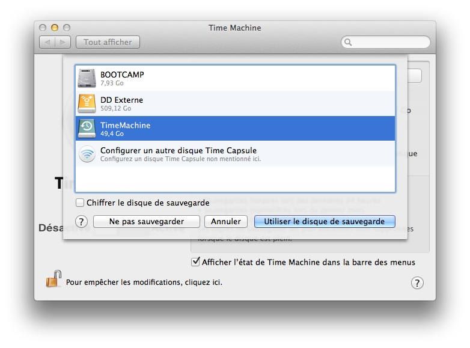Choix du disque pour Time Machine
Time Machine effectuera de petites sauvegardes toutes les heures pour sauvegarder toutes vos modifications mais seulement si votre disque dur est branché à votre ordinateur. Pour un maximum de sécurité, il faut que vous branchiez votre disque dur assez souvent sur votre ordinateur.
Maintenant que votre première sauvegarde est terminée, nous allons regarder le deuxième point important qui nous intéresse, la récupération de données.
Pour utiliser toute la puissance de Time Machine je vais essayer de partir d'une situation assez concrète pour vous montrer comment récupérer un document disparu. Imaginons qu'il y a quelques mois, vous aviez déjà Time Machine et que vous aviez rédigé un document important. Vous l'avez laissé dans un dossier puis lors du ménage de printemps vous l'avez supprimé ainsi que plein d'autres fichiers.
Le problème est qu'aujourd'hui vous voulez le récupérer pour continuer à travailler dessus mais comme il a été supprimé vous n'avez plus aucun moyen de le retrouver. C'est là que Time Machine intervient ! Il faut déjà vous souvenir où était votre document ou dossier sur votre disque dur. Ensuite lancez Time Machine, vous avez pour cela plusieurs choix, notamment avec Spotlight ou directement en haut à droite de votre écran via la zone d'information.
Entrer dans Time Machine
Vous tombez alors sur une interface un peu étrange qui vous présente une fenêtre Finder, ici le Bureau à l'instant présent.
L'interface se décompose en plusieurs parties :
Au milieu, la fenêtre de Finder qui va vous permettre de parcourir votre disque aux différentes dates.
À droite, la frise chronologique qui vous permettra de naviguer dans le temps au même titre que les flèches situées en bas.
En bas, la barre qui vous indique la date de la sauvegarde ainsi que deux boutons, l'un servant à quitter Time Machine et l'autre à restaurer un fichier comme nous allons le voir tout de suite.
Naviguer dans Time Machine
Nous recherchons notre fichier qui se trouve normalement dans le dossier Document, celui-ci avait été créé aux alentours de Juillet 2011.
À l'aide de la frise chronologique à droite, il faut que vous remontiez à la date qui vous intéresse puis directement dans la fenêtre Finder, il vous suffit de naviguer vers le dossier qui vous intéresse. Une fois votre document trouvé, il va falloir le sélectionner en faisant un simple clic gauche sur celui-ci. Si vous souhaitez sélectionner plusieurs fichiers en même temps, il vous suffit de garder la touche Cmd ⌘ appuyée et de cliquer sur chacun des fichiers.
Une fois votre choix fait, il vous faut cliquer sur le bouton « Restaurer », un effet un peu futuriste va vous ramener votre fichier. Vous pourrez alors le retrouver dans le même dossier où il était situé auparavant. :)
Restaurer un fichier
Vous venez de restaurer votre premier fichier avec Time Machine et vous avez surtout vu la facilité de la manoeuvre ! Il n'y a pas grand chose à dire de plus sur cet outil qui est très pratique mais extrêmement simple d'utilisation pour tout le monde. ;)
Time Machine est une application qui permet de faire des sauvegardes archivées de vos données.
Vous pouvez utiliser Time Machine avec un disque dur externe ou bien une Time Capsule.
Time Machine nécessite un disque vierge, le partitionner peut se révéler utile.
Time Machine vous permet de restaurer des éléments sauvegardés via son interface.
Si vous êtes plusieurs à utiliser un même ordinateur, il se peut que vous souhaitiez protéger un minimum vos données, afin que les autres utilisateurs n'aillent pas y mettre leur nez. Pour répondre à ce besoin, il existe sur la plupart des systèmes d'exploitations un système qui va permettre de créer différents comptes pour chacun des utilisateurs.
Dans ce chapitre nous allons voir comment créer un deuxième compte utilisateur sur votre ordinateur, comment configurer celui-ci et également comment le supprimer.
La première étape dans ce chapitre va être de créer un nouvel utilisateur sur notre Mac. Je vais appeler ce compte ColasV.
Pour créer un nouveau compte, il faut vous rendre dans les Préférences Systèmes de votre système d'exploitation puis dans la partie Système > Utilisateurs et groupes. Une fois dans cette partie vous devriez vous retrouver devant une fenêtre qui ressemble à celle-ci.
Préférence Système : Utilisateurs et groupes
Pour ajouter un nouveau compte, il suffit de cliquer sur le petit + en bas à gauche pour qu'une nouvelle fenêtre s'ouvre. Si vous ne pouvez pas directement cliquer sur le petit bouton, il faut d'abord débloquer le cadenas, comme je vous l'ai expliqué précédemment.
Créer un nouvel utilisateur
Pour la création du compte, il faut remplir l'ensemble des champs que vous voyez à votre écran. Ne négligez pas le mot de passe par exemple, en cliquant sur la petite clef à droite, Apple vous propose de vous générer un mot de passe efficace, cependant pas toujours facile à mémoriser ! C'est à vous de faire votre choix. ;)
J'ai presque tout rempli, mais je ne sais pas quoi choisir dans le menu déroulant Nouveau compte ?
Type de compte
L'étape importante dans la création d'un compte d'un nouvel utilisateur est de pouvoir définir ses droits sur votre ordinateur. On distingue plusieurs degrés que je vais vous présenter rapidement.
Administrateur
L'administrateur est le type de compte qui possède le plus de privilège, notamment le droit de créer d'autres comptes sur l'ordinateur ou de modifier des fichiers sensibles. Le premier compte qui a été créé sur votre ordinateur dispose des droits d'administrateurs c'est-à-dire que vous disposez certainement de ces droits.
Avec un compte utilisateur vous pouvez également installer de nouveaux logiciels sur votre ordinateur et d'autres choses, c'est très pratique, mais il ne faut pas le laisser entre les mains de tout le monde, par exemple pas celles de vos enfants.
Standard
Un compte standard est un compte qui vous permet de faire la plupart des tâches quotidiennes, comme écrire un nouveau document sur Pages, jouer à un jeu ou écouter de la musique. Cependant vous ne pourrez pas modifier les fichiers des autres utilisateurs et vous ne pourrez pas, par exemple, installer une nouvelle application sur l'ordinateur.
Ce type de compte s'adresse donc plutôt à des utilisateurs jeunes qui ne savent pas bien utiliser un ordinateur ou tout simplement à quelqu'un que vous ne voulez pas voir abîmer le contenu de votre disque dur.
Géré avec Contrôles parentaux
Ce type de compte ressemble à un compte standard, mais vous pouvez également y ajouter des restrictions au niveau des logiciels que l'utilisateur a le droit d'utiliser et également au niveau du temps horaire accordé à ce compte. Cela permet par exemple de définir des plages horaires bien définies pour un jeune enfant afin d'éviter qu'il joue trop à l'ordinateur où que celui-ci aille sur des sites inappropriés.
Une fois votre choix fait pour le nouveau compte, il vous suffit de cliquer sur le bouton
. Après quelques instants pour la création du compte et de l'ensemble des fichiers nécessaires à son fonctionnement, vous devriez voir apparaître le compte dans la liste des utilisateurs.
J'en avais rapidement parlé dans la partie précédente et nous allons en parler plus longuement ici : le contrôle parental. Le contrôle parental permet de limiter l'utilisation d'un ordinateur pour un jeune enfant. L'utilisation du contrôle parental se relève très facile à mettre en place et à administrer.
Pour contrôler un compte d'un utilisateur, il faut vous rendre dans les préférences utilisateurs comme pour créer un compte, puis sélectionner l'utilisateur qui vous intéresse pour faire apparaître ses informations. Vous devriez voir en bas une option cochée « Activer le contrôle parental », cliquez sur le bouton à droite.
Activer le contrôle parental
Vous devriez alors vous retrouver devant un menu qui ressemble plus ou moins à cela (celui-ci peut différer légèrement suivant votre version de Mac OS X).
Le contrôle parental
Le contrôle parental se décompose en 5 onglets qui vont servir à régler différentes options. Je vais vous présenter rapidement chacun d'entre-eux et détailler les fonctions les plus utiles ; pour le reste, je vous laisse découvrir par vous-même. ;)
Les onglets
Applications
On retrouve 3 grandes options dans cet onglet. La première permet d'activer le Finder simplifié : c'est un Finder qui ne permet d'accéder qu'aux dossiers indiqué comme autorisés. L'interface du Finder est ici réduite au plus simple, c'est-à-dire sans barre de navigation ou de barre latérale. Voici à la figure suivante un exemple de Finder simplifié dans le dossier Application de l'utilisateur ColasV.
Le dossier Application pour un compte sous contrôle parental
La deuxième option permet de limiter les applications accessibles par l'utilisateur, je vous laisse découvrir un peu par vous-même, il suffit de cocher les cases correspondantes aux applications que vous souhaitez autoriser.
La dernière option ne concerne que le Dock et est plus esthétique qu'autre chose. Si vous décidez d'utiliser le Finder simplifié, cette option sera automatiquement activée et vous ne pourrez pas la modifier.
Web
Cet onglet vous permet de limiter la fréquentation des sites Web. Il présente 3 options qui s'échelonnent en trois niveaux :
Première option : aucune restriction donc aucune protection pour l'utilisateur.
Deuxième option : restriction de navigation légère où le navigateur bloque certains sites ainsi que ceux ajouté par l'administrateur.
Troisième option : restriction lourde, le navigateur bloque tous les sites sauf ceux dans la liste ; cette option est donc plutôt réservée aux très jeunes utilisateurs.
Horaires
Cet onglet vous permet de mettre certaines restrictions horaires pour l'utilisateur quand vous ne pouvez pas vous-même effectuer un contrôle du temps sur l'ordinateur. Très pratique et très efficace, il ne perdra cependant pas le travail de l'utilisateur puisque le contrôle parental bloquera uniquement la session jusqu'au lendemain sans éteindre l'ordinateur.
Les deux autres onglets présentent un intérêt bien moindre, je ne détaillerai donc pas leur contenu et leur utilisation. :)
Dans cette petite partie nous allons voir comment modifier les préférences d'un compte d'un utilisateur et comment supprimer l'un d'eux. Pour faire l'ensemble de ces manipulations, il faut disposer d'un compte administrateur, être connecté sur le compte en question et ne pas être soumis au contrôle parental.
Modifier un compte
Toujours en prenant l'exemple du compte de ColasV, nous allons modifier plusieurs options pour ce compte. Notamment le mot de passe de l'utilisateur, son image personnelle ou encore son nom.
Modifier le nom d'utilisateur
Pour modifier le nom de l'utilisateur, il suffit de taper le nom que vous souhaitez dans la zone dédié nommé « Nom complet ». Il suffit ensuite de cliquer n'importe où pour valider ce changement de nom.
Modifier le mot de passe
Pour modifier le mot de passe, il suffit de cliquer sur le bouton
à côté de l'image du compte.
Modifier l'image de l'utilisateur
Pour modifier l'image de l'utilisateur, il suffit de cliquer sur l'image du compte pour faire apparaître la liste des images disponibles. Vous pouvez choisir une image dans la liste disponible ou prendre une photo avec votre webcam si vous en avez une.
Pour ajouter une photo qui se trouverait sur votre ordinateur (dans iPhoto ou dans un dossier) il va falloir exécuter un glisser-déposer de l'image dans le cadre. Vous pourrez alors choisir de recadrer cette image et ensuite la valider pour qu'elle apparaisse.
Modifier le type du compte
Vous pouvez également retirer le contrôle parental d'un compte ou lui donner les droits d'administrateurs en cochant les cases en bas de la fenêtre.
Supprimer un compte
Je le rappelle : supprimer le compte d'un utilisateur n'est pas une décision à prendre à la légère puisque cela peut entraîner la disparition de tous les données de cet utilisateur.
Après que vous ayez choisi un compte à supprimer, il faut cliquer sur le petit bouton (-) en bas. Une nouvelle fenêtre devrait apparaître vous proposant trois choix.
Suppression d'un compte utilisateur
« Enregistrer le dossier de départ dans une image disque » : le système d'exploitation se charge de copier l'ensemble des fichiers de l'utilisateur dans un dossier spécial nommé image disque afin de le rendre accessible à tout le monde une fois le compte supprimé. L'avantage de l'image disque est que celle-ci prend moins de place sur le disque dur qu'un dossier classique.
« Ne pas modifier le dossier de départ » : le système d'exploitation supprime le compte qui n'apparaîtra plus dans la liste des utilisateurs, mais conserve le dossier où se trouvent les fichiers. La différence avec la première option est que la taille des fichiers ne changera pas.
« Supprimer le dossier de départ » : le système d'exploitation supprime intégralement l'ensemble des fichiers de cet utilisateur et vous n'aurez aucun moyen pour les récupérer.
Vous l'avez peut-être remarqué, il existe un compte déjà présent dans la liste, mais que je n'ai pas mentionné auparavant : le compte invité.
Le compte invité
Le compte invité est un compte utilisateur un peu spécial puisqu'il n'en existe qu'un que l'on peut choisir d'activer ou non via le compte administrateur, dans l'interface de gestion des utilisateurs. Ce compte dispose de droits très limités que l'on peut réduire avec le contrôle parental.
Comme son nom l'indique, ce compte s'adresse à quelqu'un qui souhaite utiliser votre ordinateur quelques minutes ou pendant un temps réduit afin de chercher quelque chose sur internet ou d'écrire un petit document pour l'envoyer par mail. L'utilisateur n'aura aucun accès aux autres fichiers et dossiers et ne pourra rien installer sur cette session. Dans tous les cas, à la fermeture de la session, tous les documents qu'il aura rédigé seront détruits et le compte invité sera comme neuf pour une autre utilisation.
Le compte invité ne peut donc pas être utilisé comme un compte normal, mais plutôt comme un compte d'appoint pour un ami pressé si l'on ne veut pas perdre de temps à configurer un nouveau compte classique comme précédemment. Si vous décidez d'activer le compte invité, vous retrouverez celui-ci sur l'écran d'accueil. ;)
Maintenant que nous avons vu comment créer, modifier et supprimer des comptes, il va falloir savoir comment jongler entre les différents comptes d'un même ordinateur. Avant de voir tout cela, nous allons poser quelques bases afin que vous puissiez bien comprendre.
Chaque utilisateur dispose d'un dossier qui lui est propre sur le disque dur et qui contient tous ses fichiers et données. Quand j'ouvre la session d'un utilisateur, le système d'exploitation charge le bureau et le dossier de l'utilisateur tout en masquant de sa vue les dossiers des autres utilisateurs. Quand une autre personne veut s'identifier avec son compte utilisateur, le système d'exploitation charge alors ses fichiers et dossiers tout en lui masquant le reste.
On parle de « session active » dans le cas d'une session ouverte par un utilisateur et quand celle-ci est en train d'être utilisé, comme ma session quand je rédige ce cours ou la vôtre quand vous lisez celui-ci. Comme vous vous en doutez il ne peut y avoir qu'une seule session active à la fois sur un même ordinateur. On parle de « session ouverte » lorsqu'une session a été chargée par le système d'exploitation, mais que celle-ci n'est pas obligatoirement active, il peut donc y avoir plusieurs sessions ouvertes en même temps sur un ordinateur.
Ouvrir une session
Lorsque vous allumez votre ordinateur, vous vous retrouvez devant ce que l'on appelle l'écran d'accueil qui vous présente tous les comptes utilisateur auxquels on peut se connecter (ici mon compte et le compte invité). Le petit symbole orange indique que la session est ouverte ; sur la figure suivante, les deux sessions le sont.
Ouverture de compte
Il suffit de cliquer sur l'une des images et de vous identifier pour accéder à la session.
Changer de session
Pour changer de session lorsque l'ordinateur est allumé, vous n'avez heureusement pas besoin de l'éteindre pour le rallumer à nouveau. Il vous suffit de cliquer sur le nom de la session qui se trouve normalement en haut à droite dans la barre des menus pour faire apparaître un menu déroulant qui vous propose de changer de session.
Changer de session
Quitter une session
Vous pouvez décider si vous le souhaitez, de quitter une session ouverte. Cela permet notamment d'améliorer légèrement les performances de votre ordinateur, car le système d'exploitation n'aura pas à gérer deux sessions en même temps. Pour fermer une session, il faut vous rendre dans le menu Pomme à haut à gauche et choisir la dernière option : « Fermer la session de ... ». Vous serez alors ramené sur l'écran du choix de session.
Il existe deux types de compte sous OS X :
Compte administrateur ;
Compte Standard.
Un compte administrateur possède tous les droits sur l'ordinateur.
Un compte standard possède des droits limités.
Le contrôle parental permet de limiter encore plus un compte standard, notamment au niveau du temps ou des applications.
Le compte invité est un compte standard très limité qui permet le minimum, il est réinitialisé à chaque connexion.
On peut passer d'un compte à l'autre sans perdre le travail en cours.
Ce chapitre est un peu particulier puisqu'il ne présente pas une action particulière sur votre système d'exploitation ou une application en particulier mais plutôt un rapide tour d'horizon des petites fonctionnalités de Mountain Lion, qui se relèvent être très pratiques dans la vie de tous les jours. Ce chapitre n'a rien de compliqué si vous avez suivi le cours en entier, puisque l'ensemble de ces fonctionnalités ont pour but d'être extrêmement faciles à utiliser.
Je vous parlerai notamment du centre de notification qui vous permet de recevoir des alertes pour tous les évènements importants qui ont lieu sur votre système d'exploitation et dans vos applications. Nous verrons également l'intégration de Twitter et de Facebook dans le centre de notification. Nous verrons aussi la nouvelle fonctionnalité « Dictée » qui est une reconnaissance vocale directement intégrée dans Mountain Lion. Enfin nous verrons les applications Messages, Notes et Rappels qui se trouvent être extrêmement simples à utiliser mais méritent quelques lignes les concernant.
Le centre de notifications vous permet d'afficher des alertes concernant certaines applications qui tournent sous Mountain Lion. Ces notifications s'affichent en haut à droite de votre écran pendant quelques secondes afin de vous alerter de quelque chose sans pour autant vous déranger trop longtemps. L'ensemble de ces notifications est stocké dans le centre de notifications. Certaines applications de Mountain Lion intègrent déjà cette fonctionnalité et les développeurs d'applications adaptent peu à peu leurs applications pour que celles-ci fonctionnent avec le centre de notifications.
Gérer le centre de notifications
Les options du centre de notifications sont accessibles via les Préférences Système dans la section Personnel. L'interface des options ressemble à celle-ci (voir la figure suivante).
Afficher le bouton Partage
Dans la barre latérale, on retrouve l'ensemble des applications qui fonctionnent avec le centre de notification. On retrouve bien sûr des applications présentes lors de l'installation de Mountain Lion (Mail, Calendrier, FaceTime, ...) mais certaines applications externes comme Google Chrome ou Transmission fonctionnent déjà avec le centre de notifications.
Lorsque vous sélectionnez une application quelconque dans la liste, les options sont très limitées et sont presque identiques pour chaque application. Prenons l'exemple de l'application Safari.
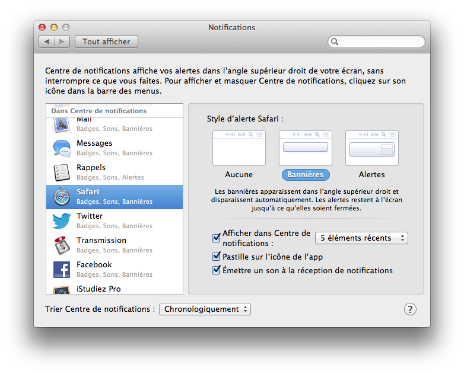Afficher des alertes
Vous pouvez choisir la forme des alertes pour l'application, le nombre d'éléments maximum dans le centre de notifications ainsi que le choix d'émettre un son lors d'une notification. Comme vous le voyez, le nombre d'options disponible se compte sur les doigts de la main. ;)
Le centre de notifications
Liste des notifications
Pour accéder au centre de notifications à proprement parler, il faut cliquer sur l'icône tout en haut à droite de la barre des menus
. Vous devriez voir apparaître un grand bandeau noir sur la droite de votre écran avec, si vous en avez, toutes les notifications que vous avez reçues de vos différentes applications.
Le centre de notifications
En cliquant sur une notification en particulier, celle-ci vous redirigera vers l'application en question ou vers l'endroit qui concerne la notification. Pour supprimer l'ensemble des notifications qui concernent une application, il suffit de cliquer sur la petite croix à droite du nom de l'application.
Mettre en veille le centre de notification
Vous pouvez également facilement désactiver le centre de notifications pendant quelques heures si vous ne voulez pas être dérangé par des notifications intempestives. Pour faire cela, il suffit de remonter tout en haut du centre de notification avec l'aide de la molette de votre souris (ou avec deux doigts sur votre trackpad) pour voir apparaître l'option, il vous suffit de cliquer sur le petit bouton bleu pour désactiver le centre pendant une journée mais, vous pouvez le réactiver quand vous le voulez en re-cliquant sur le petit bouton.
Une autre des nouvelles fonctionnalités de Mountain Lion qui rejoint le centre de notifications que nous avons vu au-dessus est la connexion possible entre OS X et les deux réseaux sociaux Twitter et Facebook. Si vous n'utilisez aucun de ces deux services, vous pouvez simplement passer votre chemin et ne pas tenir compte de cette partie. Pour les autres comme vous le savez peut-être, Apple essaye d'intégrer de mieux en mieux les réseaux sociaux dans ses différents OS. Tout a commencé avec iOS 5 et l'intégration de Twitter dans cette version. Depuis iOS 6, Facebook a rejoint le mouvement. Pour OS X, il a fallu attendre Mountain Lion pour voir apparaître Twitter et Facebook dans le système d'exploitation. Le partage ne se limite cependant pas à ces deux réseaux sociaux, mais ils forment la pierre angulaire de ce nouveau système.
Actuellement l'intégration reste bien moins poussée que dans iOS, mais vous pouvez d'ores et déjà envoyer des statuts Facebook ou des tweets via le centre de notifications. Le but étant de rejoindre l'intégration de iOS 6 où d'autres applications peuvent dialoguer directement avec Twitter et Facebook sans passer par un site internet externe. Nous allons donc voir comment ajouter un compte Facebook et Twitter sur notre Mac et nous allons envoyer notre premier tweet depuis le centre de notifications.
Ajouter un compte
Je vais prendre dans la suite l'exemple de Twitter, mais le principe est exactement le même pour l'ajout d'un compte Facebook. La première chose à faire est de se rendre dans les « Préférences Système » puis dans « Mail, Contacts et Calendrier ». Si vous vous souvenez, nous sommes déjà venus ici pour l'ajout d'un compte mail dans la partie sur Internet. L'écran devrait ressembler à ceci (voir la figure suivante).
Ajouter un compte de messagerie instantanée
Il suffit de sélectionner le type de compte qui vous intéresse entre Twitter et Facebook.
Ajouter un compte Twitter
Il vous suffit ensuite d'entrer les informations relatives à votre compte Twitter et/ou Facebook pour finaliser l'ajout du compte, rien de bien compliqué comme je vous l'avais dit. Maintenant nous allons envoyer notre premier tweet (ou premier statut) via le centre de notifications.
Envoi d'un message via le centre de notifications
Normalement les boutons de partage devraient être activés dans le centre de notification. Si ce n'est pas le cas il faut vous rendre dans les préférences du centre de notifications et y cocher l'option relative aux boutons de partage. Une fois que vous aurez fait cette étape, rendez-vous dans le centre de notifications et regardez tout en haut de celui-ci : vous devriez voir un ou deux boutons relatifs aux réseaux sociaux que vous aurez ajoutés.
Partager sur Facebook et Twitter
En cliquant sur l'un des deux boutons, vous devriez voir apparaître quelques lignes vous permettant de rédiger votre message (en l'occurrence ici un tweet), puis il vous suffira de cliquer sur le bouton « Envoyer » pour envoyer votre message sur votre réseau social favori.
Publier un tweet
Partager un élément dans une application
Une autre nouveauté liée à ce nouveau système de partage est sûrement l'intégration poussée dans la plupart des applications Apple de la fonction partage : en regardant un peu partout sur les différentes applications vous devriez trouver une icône semble à celle-ci :
. En citant en vrac on retrouve ce bouton dans Safari, Aperçu, Notes, Quick Time et même dans Finder !
Le partage ne se limite pas uniquement aux deux réseaux sociaux précédents, mais à un ensemble de services comme les mails ou encore l'application Messages (que nous verrons un peu plus loin). Selon la nature du contenu (image, texte, vidéo) le partage ne peut pas s'effectuer via les mêmes applications, mais on retrouve le plus souvent Twitter, Facebook et Mail.
Exemple de partage dans Safari
Pour illustrer cette fonction, si j'ai envie de partager l'adresse de ce tutoriel via Twitter, il suffit de me rendre à l'adresse du tutoriel sur mon navigateur (ici Safari) et de cliquer sur le bouton partage relatif à Twitter. Une fenêtre devrait apparaître au premier plan vous proposant de rédiger quelques mots en plus de votre lien, il suffit ensuite de cliquer sur « Envoyer ».
Depuis Mountain Lion, le système d'exploitation d'Apple intègre un système de reconnaissance vocale directement dans le système sans passer par une application externe. Ce type de fonctionnalités a le mérite de n'être dépendant d'aucune société externe. Cela assure l'intégration avec le maximum d'applications tierces, ce qui peut ne pas être le cas d'applications externes qui ne sont pas toujours compatibles avec un maximum de services. Apple essaye de plus en plus d'intégrer des services communs entre iOS (le système d'exploitation mobile) et OS X : on trouve Siri dans iOS qui est une reconnaissance vocale intelligente. Le système dans OS X Mountain Lion ne va pas aussi loin mais s'en rapproche de par son interface par exemple.
Concrètement nous allons nous intéresser principalement au système « Dictée », qui va vous permettre parler dans un micro pour que le système d'exploitation traduise vos paroles en texte écrit sur l'ordinateur. Comme je vous l'ai dit, l'avantage de ce système est qu'il peut être utilisé dans toutes les zones où vous devez normalement taper du texte avec votre clavier. Vous pourrez donc renommer un dossier avec votre voix, écrire un document sur Pages ou encore écrire un mail.
Activer Dictée
L'activation de Dictée s'effectue dans les Préférences Système dans le menu : « Dictée et parole ». Il suffit d'activer le service, comme c'est indiqué sur la figure suivante.
Préférences Système : Dictée et Parole
Il faut également que vous pensiez à une combinaison de touche simple pour activer rapidement la reconnaissance vocale sans avoir à vous souvenir du raccourci et sans avoir besoin d'effectuer des manipulations compliquées. Pour ma part j'aime beaucoup le raccourci suivant : appuyer deux fois sur l'une des touches Cmd ⌘. Avec ce raccourci, vous ne risquez pas d'activer le service par inadvertance sans avoir pour autant à appuyer sur 10 touches différentes en même temps.
Utiliser le service
Premier exemple avec Safari
Je vais supposer dans la suite que vous avez choisi le même raccourci que moi, si ce n'est pas le cas souvenez vous du vôtre, cela peut-être utile ! Pour expérimenter cette fonctionnalité, nous allons nous rendre tout d'abord dans Safari pour y effectuer une recherche. Une fois que vous aurez lancé Safari, cliquez dans la barre d'adresse en haut du navigateur et appuyez deux fois sur la touche Cmd ⌘ assez rapidement. Vous devriez voir apparaître une petite image près de la barre de recherche. Cette icône indique que Dictée attend que vous parliez (voir la figure suivante).
Dictée dans Safari
Après que vous ayez parlé, il faut appuyer sur la touche Entrée ⏎ pour valider ce que vous avez dit. Dictée consulte ensuite les serveurs d'Apple pour comprendre au mieux votre phrase à l'aide des différents algorithmes. Pendant ce temps, vous devriez voir cette icône (voir figure suivante).
Dictée tente de reconnaître ce que vous dites
Dans mon exemple, j'ai simplement dit « Bonjour » et Dictée m'affiche bien ce que j'ai demandé. J'ai pris ici l'exemple d'un simple mot pour commencer, mais le résultat est bien là !
Dictée a bien reconnu ce que vous avez dit
Deuxième exemple avec TextEdit
Dans mon deuxième exemple j'utilise TextEdit, l'éditeur de texte que nous avons vu dans la première partie de ce cours. Dans cet exemple très imagé, vous pouvez voir que j'ai dicté à Dictée une phrase entière avec un signe de ponctuation à la fin. Dictée gère parfaitement les symboles et arrive relativement bien à comprendre quand vous parlez du mot ou du signe de ponctuation ; de plus l'application sait reconnaître des signes de ponctuation comme le point-virgule qui regroupe deux mots-ponctuations. ;)
Dans cette dernière partie, je vais rapidement vous parler de trois nouvelles applications qui font officiellement leur apparition dans OS X Mountain Lion : Messages, Rappels et Notes. Si vous utilisez déjà un appareil sous iOS comme un iPhone, les deux dernières applications devraient vous être familières et la première également puisqu'elle est simplement le clone d'iMessage que l'on trouve également sur iOS. Cette similarité entre les applications iOS et OS X est une volonté d'Apple d'harmoniser son écosystème afin de pouvoir mieux synchroniser entre-eux les différents appareils de la marque, et ainsi de ne dépendre d'aucun service et appareil externe. Comme vous vous en doutez, toutes les notes et les rappels que vous avez enregistrés sur votre iPhone sont également consultable sur votre Mac, pour peu que vous ayez renseigné le même Apple ID pour les différents services.
Messages
Présentation de l'application
L'application Messages comme son homologue iMessage sur iOS vous permet de discuter gratuitement entre différent terminaux tournant sous iOS et Mountain Lion sans avoir à souscrire à un abonnement téléphonique. Ce service, disponible au début sous iOS, avait pour but de concurrencer un système similaire chez son concurrent BlackBerry avec le système BlackBerry Messenger. Aujourd'hui ce genre de service devient un peu désuet devant l'essor des forfaits téléphoniques avec SMS illimités. Cependant, ce service peut se révéler pratique si vous n'avez pas votre iPhone sous la main pour contacter un ami qui en possède un.
Message remplace également une ancienne application de Mac OS X : iChat qui permettait de communiquer avec certains protocoles de messageries instantanés comme AIM ou Google Talk. Si vous avez configuré votre compte Gmail dans les préférences Mail par exemple, il devrait également être connecté avec Messages sans que vous ayez à faire quoique ce soit. Si vous avez lancé Message, vous devriez également être connecté à tous vos comptes de messagerie instantanées.
L'interface reste très simple, avec à gauche la liste des conversations et sur la droite la conversation en cours. Cette interface mélange l'ensemble des protocoles de messagerie instantanées (iMessage, Google Talk, AIM).
L'interface de Messages
Si vous êtes un ancien d'iChat et que vous souhaitez retrouver la liste des contacts connectés comme dans l'ancienne version, celle-ci est disponible dans le menu « Fenêtre » > « Amis ». Elle n'affiche cependant pas les contacts « connectés » sur iMessage puisque ce type de statut n'existe pas dans iMessage.
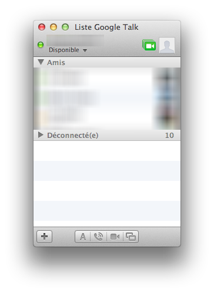Liste d'amis dans Messages
.
Configuration et gérer plusieurs comptes avec Messages
Dans le menu « Fichier » > « Préférences » vous pouvez avoir accès aux préférences de Messages et notamment la gestion des comptes de messageries instantanées qui sont enregistrés dans Messages.
Préférences Messages
Si vous possédez des contacts avec plusieurs comptes de messageries instantanées (iMessage et Google Talk) par exemple, vous pouvez décider avec quel compte discuter et même changer de service en plein milieu d'une conversation. Bien-sûr pour recevoir le nouveau message votre correspondant doit être connecté sur le service en question (par exemple Google Talk). Pour changer de service de messagerie, il suffit de cliquer sur le nom du contact, vous verrez y apparaître l'ensemble des services qu'utilise cet utilisateur et vous pourrez sélectionner le service que vous souhaitez.
Liste des services disponibles
Le changement de service se fait presque de manière invisible pour l'utilisateur, seul un petit message l'informe dans la conversation et l'avatar de l'utilisateur peut éventuellement changer s'il en utilise un différent sur un autre service.
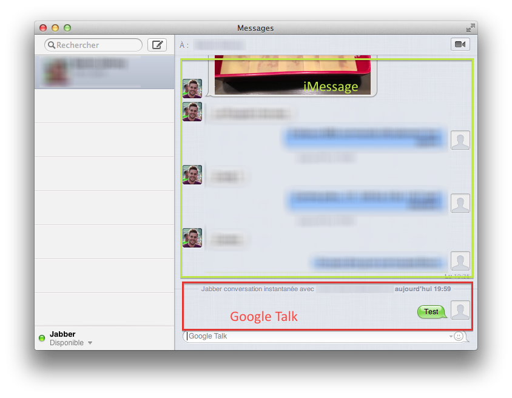Une conversation dans Messages
Rappels
L'application Rappels comme son nom l'indique vous permet de vous rappeler des actions à entreprendre. Cette application se synchronise avec son homologue sur iOS ce qui vous permet d'enregistrer quelque chose en déplacement et de le retrouver en rentrant chez vous dans votre ordinateur. En plus de pouvoir noter des rappels, l'application permet d'envoyer ces rappels dans des situations particulières :
à une date particulière ;
à une position particulière de l'utilisateur.
La deuxième possibilité est surtout utile quand vous possédez un appareil mobile Apple comme un iPhone, car celui-ci est constamment connecté à internet et son GPS est souvent activé. Un rappel peut posséder deux statuts : tâche en attente ou tâche effectuée. Nous allons tout d'abord ajouter une nouvelle tâche, il suffit pour cela de cliquer un peu n'importe où dans l'interface.
L'application Rappels
En cochant la petite case à gauche de la tâche, on dit à l'application que la tâche est effectuée, celle-ci va alors passer dans la partie « Terminé » et seules les tâches non-effectuées seront affichées. Si vous avez coché cette case sans le faire exprès, vous pouvez revenir en arrière en décochant celle-ci tout simplement. ;)
Liste des tâches terminés
Notes
Le concept de Notes est encore plus simple que celui de Rappels. Une note est un simple petit message texte stocké dans une application que vous pouvez consulter rapidement. Comme pour Rappels, les notes sont synchronisés via iCloud et vous pouvez les lire sur vos autres appareils. Si vous êtes un ancien utilisateur de Mac OS X, cette application vous rappellera Aide-Mémoire, qui reprenait le même concept sous forme de notes sur votre bureau. Vous pouvez mettre votre texte en forme grâce au menu « Format » et même ajouter des images en faisant glisser celles-ci directement dans votre note.
L'application Notes
Si Notes vous suffit, pas de problème ! Si en revanche vous recherchez une application un peu plus évoluée, vous pouvez regarder du côté d'Evernote qui a le mérite de se synchroniser avec l'application iOS mais aussi avec l'application Android et Windows. L'interface de Notes est très similaire à celle de Messages ou de Rappels avec un bandeau gauche qui résume l'ensemble des notes et la partie de droite qui vous permet de lire et modifier une note.
Le centre de notifications permet de recevoir des notifications de la part de certaines applications : Twitter, Mail, Safari notamment.
La fonction partage est disponible dans de nombreuses applications comme Safari mais aussi dans le Finder.
Dictée fonctionne avec toutes les applications et vous permet de dire ce que vous voulez taper au clavier.
Messages est une application de messagerie instantannée qui fonctionne avec les services Google Talk, iMessage et AIM.
Rappels est une application qui vous permet de gérer vos tâches.
Notes est une application qui vous permet de prendre des notes rapidement.
Vous vous souvenez du chapitre sur le partitionnement d'un disque dur ? J'avais brièvement parlé de l'utilisation des partitions pour installer d'autres systèmes d'exploitation sur votre ordinateur. Ce chapitre va donc traiter de l'installation d'un autre système d'exploitation sur votre ordinateur.
Nous nous concentrerons sur l'installation du système d'exploitation Windows sur votre Mac qui est très facile, notamment grâce à l'application Boot Camp. Je parlerai également pour ceux que ça intéresse de l'installation de GNU/Linux, qui est déjà une opération un peu plus compliquée !
Le but de cette partie va être d'installer un nouveau système d'exploitation. Dans un premier temps nous allons essayer d'installer Windows.
Pourquoi Windows en premier ? Il est payant et propriétaire !
Windows est un système d'exploitation payant et propriétaire mais vous êtes très nombreux à l'avoir déjà utilisé auparavant et c'est également le système d'exploitation qui s'installe le plus facilement sur un Mac.
Avant de commencer
Avant de continuer, il faut régler quelques détails. Pour pouvoir installer Windows de manière légale, il faut disposer d'un CD d'installation et/ou d'une clef d'activation. Vous pouvez également de manière tout à fait légale tester Windows pendant une durée de 30 jours, après quoi vous devrez l'acheter pour continuer à l'utiliser. L'utilitaire Boot Camp que nous allons utiliser marche uniquement avec Windows 7.
Si vous possédez déjà le CD d'installation vous pouvez continuer la lecture de ce chapitre. Si vous ne possédez qu'une clef d'activation ou que vous voulez simplement tester Windows 7 pendant une durée de 30 jours, il va vous falloir télécharger cette version et la graver sur un DVD (je vous conseille de télécharger la version Home Premium x86 (32-bits) en Français).
Si vous avez bien suivi l'ensemble des points précédents, vous devriez disposer maintenant tous d'un CD d'installation qui va vous permettre d'installer Windows 7 sur notre Mac. :)
Boot Camp
Je vous parle depuis un petit moment de Boot Camp mais je ne l'ai jamais vraiment présenté : Boot Camp est une application qui est installée de base avec votre système d'exploitation et qui a pour but de vous simplifier la tâche dans l'installation de Windows sur votre Mac.
C'est quand même un peu contradictoire pour Apple de proposer l'installation facile du système d'exploitation concurrent ?
Même si les choses commencent à s'améliorer il manque encore énormément d'applications sur Mac dans certains domaines précis et beaucoup d'utilisateurs sont obligés d'utiliser Windows en parallèle. Un argument de poids qui est malheureusement vrai est le manque cruel de jeux sur Mac. Hormis Blizzard qui développe tous ses jeux pour Windows et Mac, c'est bien le seul.
Revenons à nos moutons, Boot Camp va se charger automatiquement de partitionner votre disque et va télécharger tout le nécessaire pour que Windows fonctionne parfaitement sur Mac. Vous n'aurez alors plus qu'à installer Windows sur la nouvelle partition.
Première étape
Pour pouvoir commencer, nous allons devoir lancer l'application qui se nomme « Assistant Boot Camp », je vous laisse vous débrouiller comme des grands.
La première page vous explique rapidement comment fonctionne Boot Camp et elle vous rappelle notamment de toujours sauvegarder vos données avant le partitionnement de votre disque dur. Même si c'est une application qui le fait, l'opération présente toujours des risques !
La première vraie étape consiste à télécharger les pilotes des différents composants de votre Mac pour qu'ils puissent fonctionner sous Windows 7. Apple vous propose deux choix, si vous possédez le CD d'installation de Snow Leopard (la version avant Lion), tous les pilotes se trouvent sur celui-ci vous n'avez donc rien à télécharger. Par contre si vous n'avez pas de CD d'installation, ce qui est probablement le cas si vous avez un Mac récent, il va falloir télécharger ces pilotes.
Pensez également à cocher la deuxième case, c'est elle qui vous permettra par la suite d'installer Windows facilement. Il ne faut pas la cocher dans le seul cas où vous souhaitez récupérer les pilotes pour Windows pour une précédente installation où vous aviez oublié de le faire. ;)
Assistant Boot Camp : Étape 1
Une fois que l'assistant Boot Camp aura téléchargé l'ensemble des pilotes, il faudra les mettre sur un support externe, comme une clef usb par exemple.
.
Deuxième étape
L'étape suivante consiste à partitionner votre disque dur. Vous allez donc retrouver une interface proche de l'utilitaire de disque et vous allez pouvoir régler la taille de la partition Windows à l'aide de votre souris.
Windows 7 est un système d'exploitation assez volumineux, il faut compter plus de 10 Go d'espace sur votre disque d'installation. Comme vous comptez sûrement installer quelques logiciels sur votre nouveau système d'exploitation, il va falloir prévoir un peu de place en plus.
La taille que vous allouez à Windows dépend énormément de l'espace disponible sur votre disque dur et de sa capacité totale. Je vous conseille cependant de ne jamais dépasser la moitié de l'espace total de votre disque dur (ici sur 320 Go, il ne faut pas dépasser 160 Go) et de toujours se laisser une marge de sécurité en laissant 40 Go d'espace libre (avec ces deux conditions je vais choisir une taille de 50 Go pour ma partition Windows).
Assistant Boot Camp : Étape 2 : Partitionnement
Pour les disques de très grandes capacités (> 500 Go), je vous conseille d'allouer entre 100 et 150 Go pour Windows, vous aurez alors une marge de manœuvre suffisante pour la plupart des logiciels courants. Pour vous donner quelques ordres de grandeurs, aujourd'hui un jeu vidéo utilise environ 10 Go d'espace sur votre disque dur, un film en haute qualité environ 8 Go et il faut environ 300 morceaux de musique pour remplir 1 Go.
L'application va alors se charger de manière automatique du partitionnement de votre disque dur, de la manière dont vous l'avez voulu. L'opération peut être assez longue et surtout ralentir votre ordinateur car vous agissez directement sur votre disque système.
Troisième étape
Une fois le partitionnement effectué par Boot Camp, votre ordinateur va automatiquement redémarrer sur le CD d'installation de Windows. Vous devriez alors vous retrouver devant un premier écran d'installation qui vous demande la langue dans laquelle vous vous installer Windows 7.
Je ne souhaite pas traiter l'installation de Windows 7 en particulier, je vous invite donc à consulter ce chapitre, de l'excellent tutoriel sur Windows 7 rédigé par ShigeruM. Toute la procédure d'installation de Windows y est décrite et vous n'avez donc qu'à la suivre pas à pas.
Quatrième étape
La quatrième et dernière étape consiste à installer tous les pilotes afin que tous les composants de votre Mac soient reconnus par Windows. Vous vous souvenez que dans la première étape vous avez téléchargé normalement l'ensemble des pilotes nécessaires que vous avez soigneusement mis sur un support de stockage externe ? Et bien c'est l'occasion de le ressortir !
Branchez, si ce n'est déjà fait, ce volume de stockage et lancez l'installation des pilotes en double-cliquant sur le fichier en question. Après quelques étapes pour finaliser l'installation vous aurez à redémarrer Windows afin que tous les changements soient pris en compte. La procédure est exactement la même si vous utilisez le CD d'installation de « Snow Leopard », il vous suffit d'insérer celui-ci dans le lecteur à la place de celui de Windows 7, l'installation devrait se lancer d'elle-même.
Quelques petites choses supplémentaires
Démarrer sous Windows ou Mac OS X
Lors du démarrage de votre ordinateur celui-ci est configuré pour démarrer automatiquement sur le disque « Macintosh HD » qui contient le système d'exploitation Mac. Pour pouvoir démarrer sous Windows il faut que vous mainteniez la touche Alt ⌥ de votre clavier lorsque votre ordinateur s'allume.
Il vous faut alors choisir votre disque de démarrage à l'aide des flèches de votre clavier et valider votre choix avec la touche Entrée ⏎. Mais cette solution doit être répété à chaque fois que vous redémarrer votre ordinateur. ;)
Choisir le disque de démarrage
Si vous avez plus souvent besoin d'utiliser Windows que Mac OS X, vous pouvez demander à votre ordinateur de démarrer automatiquement sur l'une des partitions plutôt qu'une autre. Il faut pour cela vous rendre dans les Préférences Systèmes puis dans la catégorie Système choisir l'outil « Démarrage »
Choix du disque de démarrage
Il vous suffit de choisir le disque sur lequel démarrer et cliquer sur le bouton « Redémarrer... »
Supprimer la partition Windows
Il peut arriver que vous souhaitiez désinstaller Windows et supprimer la partition Boot Camp de votre disque dur. Encore une fois Apple a tout prévu puisqu'il vous suffit de relancer l'utilitaire Boot Camp qui va vous proposer de supprimer la partition Windows.
Supprimer une partition Boot Camp
L'ensemble des données présentes sur la partition Windows va disparaître, je vous conseille donc de bien sauvegarder vos données si vous souhaitez les conserver.
Apple ne propose pas d'outil pour installer une distribution GNU/Linux sur votre ordinateur. Il existe plein de techniques pour arriver à ses fins et je vais vous en présenter une. Ce n'est pas la seule, ce n'est sûrement pas la meilleure mais elle a le mérite de marcher assez bien.
Pour la suite de cette partie j'ai décidé d'utiliser la distribution GNU/Linux qui se nomme Lubuntu, celle-ci a le mérite d'être très légère et en même temps facile à prendre en main car elle dispose d'une interface graphique. Il existe énormément de distributions GNU/Linux et je ne peux pas en conseiller une particulièrement, sachez cependant que Ubuntu est réputé pour sa facilité d'utilisation quand ArchLinux est réservé à des utilisateurs avancés.
rEFIt
La première consiste à se rendre sur le site de rEFIt pour y télécharger l'application qui va servir par la suite. rEFIt ne permet malheureusement pas la même chose que Boot Camp, il ne va pas vous partitionner automatiquement votre disque dur pour l'installation.
Quand vous démarrerez votre ordinateur, pour savoir quel système d'exploitation lancer, votre ordinateur va utiliser un petit logiciel appelé bootloader. Pendant très longtemps, les utilisateurs de PC ont connu le BIOS. Sur Mac depuis quelques années, Apple utilise l'EFI qui joue ce rôle au démarrage et qui commence a être adopté par la plupart des fabricants d'ordinateurs. Vous remarquerez que j'écris rEFIt d'une manière spéciale puisque je fais ressortir les trois lettres EFI qui indique bien le rôle de cette application. ;)
rEFIt est ce que l'on appelle un bootloader, c'est un petit programme qui va vous permettre de choisir sur quel système d'exploitation démarrer.
Installer rEFIt
rEFIt s'installe simplement grâce à un .mpkg qui se trouve dans l'archive .dmg que vous téléchargez. Après quelques étapes, rEFIt sera installé sur votre machine et sera prêt à fonctionner.
T'es bien gentil, mais quand j'avais installé Windows je pouvais démarrer sans utiliser rEFIt et tu l'as dit toi même, Apple utilise déjà l'EFI sur ses ordinateurs !
Oui mais les Mac étant des ordinateurs assez fermés il n'est pas évident de pouvoir démarrer sur d'autres systèmes d'exploitation sans utiliser des logiciels comme rEFIt, qui laissent une plus grande liberté à l'utilisateur.
Télécharger et graver un CD d'une distribution GNU/Linux
La première chose à faire est de télécharger l'image disque de la distribution Linux qui vous intéresse, dans mon cas Lubuntu. Pour cela, il faut vous rendre sur les sites web des différentes distributions pour trouver votre bonheur. Je vous conseille de toujours télécharger la version 32-bits pour éviter tout problème de compatibilité avec votre ordinateur.
Une fois le téléchargement effectué, nous allons devoir graver cette image disque sur un vrai CD afin de rEFIt puisse lire son contenu quand on le lancera. Pour faire cela nous allons utiliser une fois de plus l'excellent utilitaire de disque qui va encore une fois nous rendre un bien bon service. :)
Dans l'utilitaire de disque, une fois que vous avez inséré votre CD vierge dans le lecteur de votre Mac, sélectionnez « Super Drive » dans le menu latéral. Plus cliquez sur le bouton Graver en haut à gauche de la fenêtre. Vous allez devoir indiquer où se trouve l'image disque que vous venez de télécharger (voir la figure suivante).
Graver un CD pour Lubuntu
Une fois sélectionné, il vous suffit de cliquer sur graver. La gravure d'un CD peut prendre un certain temps ne vous inquiétez donc pas si votre lecteur fait beaucoup de bruit pendant un petit moment. Une fois l'opération finie, le CD sera automatiquement éjecté de votre lecteur et donc prêt à être utilisé. ;)
Partitionner son disque
Vous êtes passé maître dans l'art du partitionnement d'un disque dur ? Bonne nouvelle nous allons avoir besoin de vos compétences ! Nous allons partitionner notre disque pour y installer la distribution GNU/Linux. Comme je suppose que vous avez lu le chapitre qui parle du partitionnement je n'entrerai pas dans les détails et j'expliquerai simplement ce que je fais.
Dans l'utilitaire de disque, il faut que vous rajoutiez une deuxième partition à votre disque dur principal avec l'aide du petit (+) en bas dans l'onglet Partition. Les distributions GNU/Linux prennent beaucoup moins de place que Windows, vous pouvez donc allouer une taille beaucoup plus petite pour ce système d'exploitation. Pour ma part j'ai décidé d'allouer un espace de 28 Go.
Comme vous devrez dans tous les cas reformater ce disque pour l'installation de Lubuntu, vous pouvez choisir le format que vous souhaitez lors de ce partitionnement. J'ai choisi FAT pour ma part mais cela ne vous oblige en rien. ;)
Partitionner son disque dur pour installer Lubuntu
Une fois cette opération effectuée nous allons pouvoir passer à l'étape la plus importante, l'installation.
Installer Lubuntu
Pour installer Lubuntu, il faut redémarrer deux fois votre ordinateur ! La première fois pour que le système prenne en compte la présence de rEFIt, la deuxième fois vous devriez tomber sur un menu qui vous propose de démarrer sur Mac OS X ou sur le CD d'installation de Lubuntu.
Interface de rEFIt
Une fois que vous avez démarré avec le CD de Lubuntu (ou d'une autre distribution qui a une base Ubuntu) vous allez être devant un menu qui va vous proposer plusieurs choix. Je vous demande de prendre la première option, c'est à dire de démarrer le système d'exploitation directement à partir du CD. Cette opération prend un certain temps car Lubuntu copie une partie du contenu du CD sur votre disque dur, votre écran semblera figé pendant plusieurs minutes ; c'est tout à fait normal, ne faites rien (bon au bout de 2h si c'est toujours bloqué c'est qu'il y a un problème) !
Une fois sur le bureau de Lubuntu, vous devriez voir une seule icône sur celui-ci, qui se nomme Installer Lubuntu, double-cliquer dessus pour lancer le processus d'installation. Je vous invite à le suivre en même temps que ce tutoriel, qui vous détaille notamment le partitionnement de votre disque.
On avait pas déjà partitionné notre disque au début de cette partie ?
On l'avait fait de manière à laisser un espace libre sur le disque, cependant il va falloir maintenant formater cet espace pour y associer le bon format de fichier et y ajouter une deuxième petite partition que l'on nomme le SWAP et qui permet d'augmenter virtuellement la capacité de la mémoire vive de votre ordinateur.
Une fois l'installation terminée, le système d'exploitation va vous proposer de redémarrer sur la version qui a été installée sur le disque dur et non plus à partir du CD. Dans le même temps, le CD va s'éjecter du lecteur pour éviter d'entrer en conflit avec ce que vous venez d'installer.
Avec l'installation de rEFIt, à chaque démarrage, on va vous proposer de démarrer au choix sur la partition de Mac OS X ou sur la partition de votre distribution GNU/Linux. De manière automatique, l'ordinateur démarre sur la partition de Mac OS X au bout de 20 secondes si vous ne faites aucune action.
Enlever rEFIt
Bien qu'il ne soit pas possible de supprimer complètement les partitions que vous avez créées, vous avez quand même le moyen de retrouver un démarrage classique c'est à dire sans rEFIt. Vous ne pourrez alors que démarrer sur Mac OS X.
Il faut retirer deux dossiers de votre ordinateur, à chaque fois on vous demandera votre mot de passe afin d'éviter que vous fassiez des bêtises avec des dossiers voisins, faites donc attention à ce que vous faites.
Le premier dossier à retirer se trouve à la racine de votre disque Macintosh HD et se nomme simplement « efi ». Le deuxième dossier se trouve dans Bibliothèque > StartupItems > rEFItBlesser
Voilà vous avez maintenant toutes les clefs en main pour profiter au mieux d'une distribution GNU/Linux sur votre Mac. :)
L'installation de Windows est facilité grâce à l'utilitaire Boot Camp qui se charge de partitionner et de lancer l'installation de Windows.
Installer une distribution GNU/Linux est plus compliqué mais possible grâce à rEFIt.
Partitionner son disque est une opération qui peut-être dangereuse pour vos données, TOUJOURS sauvegarder avant de partitionner !
Ce chapitre s'éloigne un peu de ce que nous avons vu précédemment puisqu'il présente une facette d'OS X qui reste méconnue d'une grande partie des utilisateurs de ce système d'exploitation.
OS X est un système basé sur un noyau UNIX et de ce fait, il en récupère de nombreux attributs avec notamment cette fameuse console que je vais vous présenter. Si vous avez déjà utilisé un système UNIX ou GNU/Linux, celle-ci vous paraitra très familière. Par contre si vous venez de Windows ou que vous découvrez simplement l'informatique le concept pourra vous paraîtra un poil déconcertant, mais je vous rassure d'office, vous n'avez rien à craindre.
Car si vous trouviez l'interface d'OS X pratique, les possibilités de la console sont presque infinies comme vous allez le voir dans la suite du cours, je vous invite donc à continuer la lecture pour en savoir plus. ;)
Si il existe un mode console sur OS X et de manière générale sur tous les systèmes UNIX c'est bien qu'il y a une raison derrière, ce n'est pas une petite folie des développeurs de laisser un tel système dans votre système d'exploitation ! Plusieurs raisons expliquent la présence de la console sur notre OS, son côté historique mais aussi pratique comme nous allons rapidement le voir.
Quelques raisons
Une raison historique
Au début de l'informatique, les écrans n'étaient pas les mêmes qu'aujourd'hui et il était impossible d'afficher un nombre important de pixels en même temps sur l'écran. On utilisait donc des programmes uniquement en texte, sans interface graphique. Les ordinateurs eux-mêmes étaient moins puissants, on était donc très limités aux niveaux des possibilités, d'où l'utilisation de la console qui ne demande pas des ressources très importantes pour s'afficher.
Une raison pratique
La console permet de faire pleins de trucs qu'il est impossible de faire avec l'interface graphique que vous connaissez aujourd'hui. On peut réaliser des opérations très longues en quelques lignes de commandes et même dans les opérations les plus simples, la console est souvent beaucoup plus rapide qu'une interface graphique.
Il suffit d'un ou deux exemples pour vous convaincre des possibilités de la console même sur les ordinateurs d'aujourd'hui. Prenons un exemple un peu fou, vous cherchez à trouver les 10 plus gros fichiers qui se trouvent dans un répertoire mais également dans les sous-dossiers. Vous pourriez chercher dans chacun des fichiers un par un mais c'est un peu long, surtout si vous avez plusieurs centaines de dossiers ! Eh bien avec la console, cela se fait en une ligne :
find . -type f (-size +10000000c) -exec ls -l {} \; | sort -n -k 5,5 | tail -10
Grâce à ce que l'on appelle la programmation bash, on peut même écrire des petits programmes qui utilisent ce genre de commandes pour réaliser des galeries d'images en quelques secondes.
Bon, c'est gentil mais on ne la voit toujours pas cette console nous ...
Afficher la console
Pour afficher la console, nous allons utiliser une application qui se nomme « Terminal », qui va nous permettre de travailler avec cette console, tout en continuant à utiliser les autres applications habituelles de notre système d'exploitation. Il vous suffit donc de lancer cette application grâce à Spotlight ; elle se trouve dans le dossier « Utilitaires » du dossier « Applications »
Notre première fenêtre de Terminal
Première explication
Avant d'aller plus loin, nous allons rapidement voir que signifient les deux premières lignes qui sont apparues dans notre Terminal.
La première ligne indique la date et l'heure de la dernière connexion à la console, sur l'exemple elle date du 21 Décembre 2012 à 19h08 sur ttys000. ttys000 indique le numéro du Terminal sur lequel s'est effectuée la dernière connexion. OS X numérote les terminaux à partir de 0, si vous n'avez qu'un seul terminal d'ouvert celui-ci possède le nom ttys000, mais ce n'est pas très important pour la suite.
La deuxième nous intéresse un peu plus :
macbookairnicolas:~ Nicolas$
macbookairnicolas : c'est le nom de la machine sur lequel est lancé le terminal, ici mon ordinateur se nomme macbookairnicolas mais il possède sûrement un nom différent chez vous.
:~ : c'est le nom du répertoire courant où se situe actuellement le Terminal. Dans notre cas, nous nous trouvons dans le dossier utilisateur de Nicolas, qui se nomme Nicolas, il est communément remplacé par le symbole ~ pour indiquer le dossier utilisateur.
Nicolas : c'est le nom de l'utilisateur qui s'est connecté à la console, ici l'utilisateur se nomme Nicolas, donc moi même.
Bien que l'on puisse y faire autre chose, la principale utilité du Terminal est que l'on peut y entrer des commandes. Les commandes sont des instructions pour exécuter des actions spécifiques dans la console, il en existe des centaines et des centaines ; il est donc bien-sûr impossible de toutes les connaître mais vous allez apprendre à retenir les principales.
Nous allons commencer par quelques commandes simples pour débuter et vous montrer le fonctionnement de celles-ci, nous verrons par la suite de nouvelles commandes un peu plus compliquées mais rassurez vous, vous serez guidés !
Quelques commandes simples
Pour comprendre le fonctionnement des commandes, nous allons commencer par une des commandes les plus simples : date !
La commande date
La commande Date comme son nom l'indique, permet d'afficher la date et l'heure sur notre machine. Pour lancer cette commande, il suffit de taper date dans votre Terminal et de valider celle-ci en appuyant sur la touche Entrée.
macbookairnicolas:~ Nicolas$ date
Ven 21 déc 2012 21:28:26 CET
Cette commande nous affiche bien la date et l'heure actuelle !
La commande ls
Passons à la seconde commande : ls pour « list directory contents », qui signifie « lister le contenu d'un répertoire ». Je vous propose de lancer cette commande dans votre Terminal pour voir ce qu'elle vous renvoie.
macbookairnicolas:~ Nicolas$ ls
Applications Desktop Documents Downloads Google Drive Library Movies Music Pictures Public
Ici notre commande nous renvoie la liste des dossiers qui se trouvent dans le répertoire Nicolas. Si on regarde avec le Finder, on observe que les mêmes dossiers y sont listés, c'est normal me direz vous. Dans le cas où rien ne s'affiche, cela signifie qu'il n'y a ni dossier, ni fichier dans votre dossier.
Le contenu de notre dossier utilisateur
Nous venons de voir nos deux premières commandes. Comme vous avez pu le constater, c'était assez facile : il suffit d'un mot pour les lancer ! Mais certaines commandes demandent des paramètres supplémentaires.
Les paramètres
Certaines commandes acceptent des paramètres. La plupart du temps ces paramètres ne sont pas obligatoires, mais permettent de faire plus de choses avec la commande. Pour vous donner un exemple concret, je vais reprendre l'exemple de la commande ls, mais cette fois-ci avec le paramètre "a". Ce paramètre permet d'afficher en plus des fichiers et dossiers classiques, les fichiers et dossiers cachés. La syntaxe est la suivante :
macbookairnicolas:~ Nicolas$ ls -a
On voit que l'on fait précéder notre paramètre d'un trait d'union pour que notre Terminal ne le confonde pas avec le nom d'une autre commande ou d'un fichier. Cette logique est respectée avec la plupart des commandes UNIX de base. De manière générale, on a donc la syntaxe suivante pour une commande avec des paramètres :
macbookairnicolas:~ Nicolas$ commande -parametres
Combiner des paramètres
Une commande possède souvent plus d'un paramètre et il est possible de combiner plusieurs de ces paramètres afin d'obtenir le résultat souhaité. Logiquement si on veut combiner plusieurs paramètres lors de l'utilisation d'une commande on peut procéder ainsi :
Ainsi si on reprend notre exemple de la commande ls, celle-ci peut accepter plusieurs paramètres comme (-a, -l, -G, ...), on peut donc taper dans le terminal, la chose suivante :
macbookairnicolas:~ Nicolas$ ls -a -l -G
Le paramètre -l permet d'afficher plus d'informations sur chacun des fichiers et dossier et le paramètre -G permet de mettre un peu de couleur pour différencier fichiers et dossiers. Les trois paramètres combinés permettent d'afficher la liste détaillée de tous les fichiers et dossiers du répertoire courant avec de la couleur. On obtient le résultat suivant :
total 144
drwxr-xr-x+ 35 Nicolas staff 1190 21 déc 12:47 .
drwxr-xr-x 5 root admin 170 16 déc 14:32 ..
-rw------- 1 Nicolas staff 3 25 nov 14:42 .CFUserTextEncoding
-rw-r--r--@ 1 Nicolas staff 15364 21 déc 22:44 .DS_Store
drwx------ 2 Nicolas staff 68 21 déc 22:50 .Trash
-rw------- 1 Nicolas staff 110 21 déc 12:47 .Xauthority
drwxr-xr-x 4 Nicolas staff 136 26 nov 22:18 .adobe
-rw------- 1 Nicolas staff 8234 21 déc 19:08 .bash_history
drwxr-xr-x 3 Nicolas staff 102 19 oct 12:14 .cache
drwxr-xr-x 19 Nicolas staff 646 20 déc 22:19 .fontconfig
drwxr-xr-x 4 Nicolas staff 136 28 oct 00:36 .gem
...
Raccourcir les paramètres
Mais la console est très puissante et vous permet d'écrire moins pour obtenir le même résultat. Comme tous nos paramètres ne sont que des lettres, on peut coller tous les paramètres ensemble, le résultat sera le même mais vous aurez tapé moins de caractères. Avec l'exemple précédent et nos trois paramètres a, l et G, on peut maintenant taper directement ceci dans le terminal :
macbookairnicolas:~ Nicolas$ ls -alG
Le résultat est exactement le même qu'avant, en plus court et toujours aussi compréhensible.
Tu es très fort, tu connais plein de fonctions sympas mais en plus tu connais tous les paramètres de celle-ci ?
La commande man
S'il ne fallait retenir qu'une seule commande, ce serait la commande man. Cette fonction permet de consulter le manuel des autres commandes disponibles. On retrouve dans ces pages de manuel des explications sur la commande mais également la liste de tous les paramètres d'une commande. Suivant le manuel que vous consultez, vous trouverez également parfois quelques exemples pour utiliser la commande.
La fonction man prend en paramètre le nom d'une autre commande et affiche la page de manuel correspondante. Cette fois-ci le paramètre n'est pas une unique lettre mais bien un mot complet, il ne faut donc pas le faire précéder d'un tiret comme c'était le cas auparavant. Pour illustrer cela, prenons un exemple simple et consultons le manuel de la commande ls que nous venons d'utiliser.
macbookairnicolas:~ Nicolas$ man ls
Le contenu de la fenêtre devrait être remplacé par du texte qui décrit votre commande, avec notamment son nom mais aussi des informations sur celle-ci, une rapide description et le début de ses paramètres. Vous pouvez vous déplacer dans le fichier avec l'aide des flèches de votre clavier. Si vous n'avez pas envie de lire le manuel de cette commande vous pouvez appuyer sur la touche q pour quitter le manuel.
Le manuel de la commande ls
Quelques commandes utiles
Bien qu'il soit impossible de lister l'ensemble des commandes disponibles dans OS X, voici une liste non-exhautive des commandes qui vous seront utiles dans la suite du cours et plus tard dans l'utilisation de la console. Je donne juste ici le nom et la fonction de ces commandes et je vous invite à regarder le manuel de ces commandes en détails. Je reviendrai sur certaines d'entre-elles par la suite. Je vous invite à consulter le cours de M@teo21 au sujet de la console et des commandes.
man : permet d'afficher le manuel d'une commande.
cd : permet de se déplacer à travers l'arborescence de votre ordinateur grâce au chemin du dossier par rapport à la racine.
pwd : donne l'emplacement du répertoire courant par rapport à la racine.
mkdir : crée un dossier dans l'emplacement courant.
rm : permet de supprimer des fichiers. ATTENTION à l'utilisation de cette commande !
Maintenant que vous avez une petite idée sur le fonctionnement des commandes dans le Terminal d'OS X, nous allons tenter d'aller un peu plus loin en apprenant quelques manipulations qui peuvent se révéler utiles lorsque vous voudrez utiliser le Terminal plus tard.
L'auto-complétion
La première astuce que je souhaite vous présenter est l'auto-complétion. Sous ce terme un peu barbare se trouve quelque chose de vraiment puissant ! Prenons un exemple simple : vous souhaitez utiliser une commande mais vous ne vous souvenez plus que des deux premières lettres de celle-ci. Eh bien grâce à l'auto-complétion, vous allez pouvoir retrouver cette mystérieuse commande !
Nous allons reprendre le premier exemple que je vous ai donné dans le chapitre précédent avec la commande date. Supposons que vous savez que la commande commence par « da ». Deux cas de figure sont alors possibles :
La commande date est la seul qui commence par da.
Plusieurs commandes commencent par da.
Plusieurs commandes commencent par da
Pour afficher la liste des commandes qui commencent par « da », il vous suffit d'appuyer deux fois de suite sur la touche ⇥ (Tabulation). Le Terminal va alors vous proposez la liste de toutes les commandes qui commencent par « da », dans notre cas quatre commandes commencent par « da »
macbookairnicolas:~ Nicolas$ da
dappprof dapptrace darwinup date
macbookairnicolas:~ Nicolas$ da
Vous n'avez plus alors qu'a taper la commande qui vous intéresse en entier, dans notre cas ici « date ».
Une liste parfois longue
Il arrive parfois que qu'un nombre important de commandes commencent par une même lettre. Si l'on applique l'exemple précédent à la lettre « d », le Terminal nous renvoie le message suivant pour nous avertir qu'il y a un nombre trop important de commandes qui commencent par la lettre d.
macbookairnicolas:~ Nicolas$ d
Display all 131 possibilities? (y or n)
Dans cet exemple, 131 commandes commencent par la lettre d ! Vous pouvez choisir de les afficher en appuyant sur la touche y (yes) ou de ne pas le faire en appuyant sur la touche n (no)
L'auto-complétion dans toute sa splendeur
Le deuxième cas de figure se pose quand il n'y a qu'une seule commande qui correspond à ce que l'on a tapé, dans ce cas ce qui a été tapé sera automatiquement complété par la commande en entier. Cette utilisation peut se révéler très pratique quand on a besoin de taper des commandes assez longues puisqu'il suffit de ne taper que le début pour que celle-ci se complète.
Toujours avec notre exemple, la commande « date » étant la seule commande qui commence par « dat », il suffit de taper « dat » dans votre Terminal puis d'appuyer deux fois sur la touche ⇥ pour obtenir la commande complète.
Historique des commandes
Il arrive parfois que l'on réutilise plusieurs fois en quelques minutes la même commande, lorsque l'on compile un programme par exemple. Il arrive que ces commandes soient parfois un peu longues à taper (une commande avec plusieurs arguments). Retaper à chaque fois la commande est fastidieux et surtout je suis un grand flemmard et moins je tape sur mon clavier plus je suis content ! ;)
Grâce à l'historique des commandes vous allez vous simplifier la vie ! Pour cela, il vous suffit d'utiliser les flèches directionnelles : pour remonter dans votre historique (du plus récent au plus ancien), utilisez la flèche directionnelle « Haut » ↑
Inversement pour redescendre dans l'historique (vers les plus récents) vous pouvez utiliser la flèche directionnelle « Bas » ↓.
On peut ainsi facilement accéder aux dernières commandes que l'on a tapées dans le Terminal, la commande history permet d'accéder à la liste complète des commandes que vous avez saisies dans votre fenêtre de Terminal.
Le glisser-déposer
Si vous vous souvenez des premiers chapitres de ce cours, vous vous rappellerez sûrement du glisser-déposer qui nous permettait de déplacer un fichier dans un dossier par exemple. Eh bien cela fonctionne également avec le Terminal. Bien sûr, le résultat ne sera pas exactement le même mais cela peut se révéler très pratique.
Si vous connaissez un petit peu la commande cd, vous devez savoir qu'elle permet de vous déplacer dans l'arborescence de votre ordinateur mais qu'il est parfois difficile d'obtenir le chemin complet d'un dossier. Le glisser-déposer va nous permettre de simplifier la chose. La commande cd prend un argument obligatoire qui est le nom d'un répertoire ou le chemin vers celui-ci.
Le glisser-déposer ne s'applique pas uniquement à la commande cd mais l'exemple avec cette commande est plus parlant à mon goût car c'est une commande très commune dans tous les systèmes UNIX et GNU/Linux. Faire glisser un dossier (ou un fichier) dans le Terminal permet d'écrire le nom complet du dossier ou du fichier dans celui-ci.
Dans notre exemple, nous allons d'abord taper la commande cd dans notre Terminal puis au lieu de taper l'argument pour cette commande, nous allons faire glisser un fichier vers notre Terminal. Dans mon exemple, c'est le dossier « Documents ».
Exemple d'un glisser-déposer dans le Terminal
Vous devriez maintenant voir apparaître quelque chose de ce genre dans votre Terminal suivant le dossier que vous avez décidez de faire glisser. C'est le chemin complet vers votre dossier (ou fichier) :
macbookairnicolas:~ Nicolas$ cd /Users/Nicolas/Documents
Il vous suffit ensuite d'exécuter votre commande comme à votre habitude. ;)
Maintenant que nous avons vu la partie un peu technique concernant l'utilisation de notre console nous allons pouvoir nous faire un peu plaisir en rendant celle-ci un peu plus attrayante et en la personnalisant à votre goût. ;)
La première étape pour modifier le Terminal est de se rendre dans les préférences de l'application, dans la barre des menus via le menu « Terminal » > « Préférences ».
Préférences du Terminal
Personnalisation visuelle
La première chose que vous pouvez faire avec votre Terminal est de personnaliser l'apparence visuelle en vous rendant dans l'onglet « Réglages » . Il existe de base plusieurs styles de Terminal dans OS X. Par défaut le Terminal possède le style Pro, vous pouvez modifier un style existant ou bien créer vous-même votre style. Les deux premiers onglets « Texte » et « Fenêtre » vous permettent de modifier l'apparence de votre Terminal (voir la figure suivante).
Options visuelles pour le Terminal
Les trois derniers onglets « Shell », « Clavier » et « Avancé » sont moins importants car plus techniques et les options qui sont proposées dans ces onglets n'apportent rien à l'utilisation courante de votre Terminal.
La console affiche au début de chaque ligne le nom de la machine, le répertoire courant ainsi que le nom d'utilisateur.
La console exécute des commandes qui permettent d'effectuer certaines actions.
Ces commandes peuvent prendre un ou plusieurs arguments, ceci sont détaillés dans le manuel de la commande accessible grâce à la commande man.
L'historique des commandes accessibles via les flèches directionnelles et de la commande history permet à l'utilisateur d'exécuter plusieurs fois une même commande sans tout retaper.
La console est un outil très puissant mais également très vaste qu'il est impossible de développer en un seul chapitre, je vous invite à consulter le tutoriel de M@teo21 sur ce sujet.
Voilà le tutoriel est maintenant fini. Vous disposez d'une base solide sur divers éléments de votre système d'exploitation.
Vous pouvez maintenant manipuler des fichiers et des dossiers dans votre ordinateur, protéger votre ordinateur et installer des applications. Il reste encore beaucoup à faire, et vous apprendrez à encore mieux utiliser votre ordinateur, pour cela il faudra attendre la fin de ce tutoriel.


{kind=link}
{kind=link}
{kind=link}
{kind=link}
{kind=link}